The first step in using Splunk Enterprise is to feed it data. Once Splunk Enterprise gets some data, it immediately indexes it and makes it available for searching. With its universal indexing ability, Splunk Enterprise transforms your data into a series of events that consist of searchable fields. You can massage the data before and after Splunk indexes it, but this is usually not necessary.
Basically, you point Splunk Enterprise at data and in moments, you can start searching the data, or use it to create charts, reports, alerts, and other interesting outputs.
Any data. In particular, any and all IT streaming, machine, and historical data. Stuff like Windows event logs, web server logs, live application logs, network feeds, system metrics, change monitoring, message queues, archive files, or anything else of interest. Any data. Really.
Point Splunk Enterprise at a data source. Tell it a bit about the source. That source then becomes a data input. Splunk Enterprise begins to index the data stream, transforming it into a series of individual events. You can view and search those events right away. If the results aren't exactly what you want, you can tweak the indexing process until it is.
The data can be on the same machine as the Splunk Enterprise indexer (local data), or it can be on another machine altogether (remote data). You can easily get remote data into Splunk Enterprise, either by using network feeds or by installing Splunk forwarders on the machines where the data originates. Forwarders are lightweight versions of Splunk that consume data and then forward it on to the main Splunk Enterprise instance for indexing and searching. For more information on local vs. remote data, see "Where is my data?".
To make the job easier, Splunk offers lots of free apps and add-ons, with pre-configured inputs for things like Windows- or Linux-specific data sources, Cisco security data, Blue Coat data, and so on. Look in Splunkbase for an app or add-on that fits your needs. Splunk also comes with dozens of recipes for data sources like web server logs, Java 2 Platform, Enterprise Edition (J2EE) logs, or Windows performance metrics. You can get to these from the Add data section of Splunk Web, described later. If the recipes and apps don't cover your needs, then you can use the general input configuration capabilities of Splunk Enterprise to specify your particular data source. These generic data sources are discussed here.
You add new types of data to Splunk Enterprise by specifying them. There are a number of ways you can specify a data input:
In addition, if you use forwarders to send data from outlying machines to a central indexer, you can specify some inputs during forwarder installation. See "Use forwarders".
For more information on configuring inputs, see "Configure your inputs".
As described earlier, Splunk provides tools to configure all sorts of data inputs, including many that are specific to particular application needs. Splunk also provides the tools to configure any arbitrary data input types. In general, you can categorize Splunk inputs as follows:
A lot of the data you might be interested in comes directly from files and directories. For the most part, you can use the Splunk Enterprise files and directories monitor input processor to get data from files and directories.
To monitor files and directories, see "Get data from files and directories".
Splunk Enterprise can index data from any network port. For example, Splunk can index remote data from syslog-ng or any other application that transmits via TCP. It can also index UDP data, but we recommend using TCP instead whenever possible, for enhanced reliability.
Splunk Enterprise can also receive and index SNMP events, alerts fired off by remote devices.
To get data from network ports, see "Get data from TCP and UDP ports".
To get SNMP data, see "Send SNMP events to Splunk".
The Windows version of Splunk Enterprise includes a wide range of Windows-specific inputs. It also provides pages in Splunk System for defining the Windows-specific input types listed below:
Important: To index and search Windows data on a non-Windows instance of Splunk Enterprise, you must first use a Windows instance to gather the data. See "Considerations for deciding how to monitor remote Windows data" for details.
For a more detailed introduction to using Windows data in Splunk Enterprise, see "About Windows data and Splunk Enterprise".
Splunk Enterprise also supports other kinds of data sources. For example:
The topics that follow this one discuss issues to consider when specifying Splunk data:
To get started with getting data into Splunk Enterprise, point it at some data by configuring an input from the Add data page. See "How do you want to add data?"
Alternatively, you can download and enable an app, such as one of the OS apps (Splunk App for Windows Infrastructure or Splunk App for Unix and Linux).
Once you have installed Splunk Enterprise and either configured the inputs or enabled an app, Splunk Enterprise immediately starts storing and processing the specified data. In a short time, you can go to either the Search app (reachable from Splunk Home, the starting page for Splunk Web) or the main app page and begin exploring the data that you have collected in detail.
Here is a recommended way to start out:
1. Understand your needs. Some of the questions you might ask yourself include:
2. Create a test index and add just a few inputs. See "Use a test index." Try to keep the amount of test data to a minimum, as any data added to your test index counts against your maximum daily indexing volume for licensing purposes.
3. Preview and, if needed, modify how Splunk Enteprise indexes your data before committing the data to the test index. Splunk Enterprise lets you preview incoming data from files that you monitor or upload. See "The "Set Sourcetype" page" for details.
4. Run some searches on the test data:
5. If necessary, tweak your input and event processing configurations further until events look the way you want them to. To learn how to configure event processing, see "What Splunk Enterprise does with your data" in this manual.
6. Delete the data from your test index and start over, if necessary. See "Delete indexed data and start over" for information on how to do that.
7. When you are ready to index the data for real, point your inputs to the default "main" index, as described here.
Repeat this approach when you have other inputs to add.
Splunk Enterprise can index any time-series data, usually without the need for additional configuration. If you have logs from a custom application or device, you should let Splunk Enterprise attempt to process it with the default configuration first. If you don't get the results you want, you can tweak some things to make sure Splunk Enterprise indexes your events correctly.
See "Overview of event processing" and "How Splunk Enterprise indexes data" before proceeding so you can make informed decisions about how to make Splunk Enterprise work with your data. Here are some issues to consider:
When initially getting data into Splunk Enterprise, you might encounter some confusion as to what type of data is considered "local" and what type of data is considered "remote." The distinction between local and remote is particularly important when you are navigating the new data input pages.
The answer to this question depends on a number of criteria, including (but not limited to):
A local resource is a fixed resource that your Splunk Enterprise server has direct access to, meaning you are able to access it - and whatever is contained within it - without having to attach, connect, or perform any other intermediate action (such as authentication or mapping a network drive) in order to have that resource appear available to your system. If your data is on such a resource, the data is considered "local."
Some examples of local data include:
A remote resource is any resource where the above definition is not satisfied. Network drives mapped from Windows systems, Active Directory schemas, and NFS or other network-based mounts on *nix systems are examples that qualify for this designation. Data gathered from these resource endpoints is also considered "remote."
There are cases where resources that would normally be considered remote are actually not. Here are some examples:
Forwarders are lightweight Splunk instances whose purpose is to consume data and forward it on to Splunk Enterprise indexers for further processing. They require minimal resources and have little impact on performance, so they can usually reside on the machines where the data originates.
For example, if you have a number of Apache servers generating data that you want to search centrally, you can install a Splunk Enterprise indexer and then set up forwarders on the Apache machines. The forwarders take the Apache data and send it on to the indexer, which then consolidates, stores, and makes it available for searching. Because of their light footprint, the forwarders have minimum performance impact on the Apache servers.
Similarly, you can install forwarders on your employees' Windows desktops. These can send logs and other data to a central Splunk Enterprise instance, where you can view the data as a whole to track malware or other issues.
You can use forwarders to get data from remote machines. They represent a much more robust solution than raw network feeds, with their capabilities for:
Forwarders consume data in the same way as any other Splunk Enterprise instance. They can handle exactly the same types of data as an indexer. The difference is that they usually do not index the data themselves. Instead, they just get the data and send it on to a central indexer, which does the indexing and searching. A single indexer can process data coming from many forwarders. For detailed information on forwarders, see the Fowarding Data manual.
In most Splunk Enterprise deployments, forwarders serve as the primary consumers of data. It's only in single-machine deployments that the indexer is likely to also be the main data consumer. In a large Splunk Enterprise deployment, you might have hundreds or even thousands of forwarders consuming data and forwarding it on to a group of indexers for consolidation.
As lightweight instances of Splunk Enterprise, forwarders have limited capabilities by design. For example, most forwarders do not include Splunk Web, so you do not have direct access to a UI for setting up the forwarder's data inputs. Here are the main ways that you can configure a forwarder's data inputs:
inputs.conf file to the forwarder itself.
For detailed information on forwarders, including use cases, typical topologies, and configurations, see "About forwarding and receiving" in the Forwarding Data manual.
For details on forwarder deployment, including how to use the deployment server to simplify distribution of configuration files and apps to multiple forwarders, see "Universal forwarder deployment overview" in the Forwarding Data manual.
For information on using forwarders for monitoring of remote Windows data, see "Considerations for deciding how to monitor remote Windows data".
Splunk offers a wide variety of apps and add-ons that extend the capability of Splunk Enterprise. Apps simplify the process of getting data into Splunk Enterprise. Instead of configuring inputs yourself for a particular environment or application, you can often find an app with the data inputs already configured. Download apps from Splunkbase.
Apps typically target specific data types and handle everything from configuring the inputs to generating useful views of the data. For example, the Splunk App for Windows Infrastructure provides data inputs, searches, reports, alerts, and dashboards for Windows server and desktop management. The Splunk App for Unix and Linux offers the same for Unix and Linux environments. There is a wide range of other apps that handle specific types of application data, such as:
Go to Splunkbase to browse through the large set of apps available for download. Check Splunkbase frequently, because new apps get added all the time.
If Splunk Web is behind a proxy server, you might have trouble accessing Splunkbase directly from within Splunk Enterprise. To solve this problem, see "Specify a proxy server" in the Admin manual.
For more information on apps, see "What are apps and add-ons?" in the Admin Manual. In particular, ""Where to get more apps and add-ons" tells you how to download and install apps:.
For information on how to create your own apps, see the Developing Views and Apps for Splunk Web manual.
To add a new type of data to Splunk Enterprise, configure a data input. There are a number of ways to configure data inputs.
In addition, if you configure forwarders to send data from outlying machines to a central indexer, you can specify some inputs at installation time. See "Use forwarders to get data in."
This topic describes how to configure data inputs yourself, using Splunk Web, the CLI, or inputs.conf.
You can add data inputs from Splunk Home or Splunk System.
The Add Data page has three options to get data in: Upload, Monitor, and Forward. Clicking one of the icons takes you to a page that lets you define the data you want to upload, monitor, or forward.
For information on using Splunk Web to configure your inputs, look in the topics covering specific inputs later in this manual. For example, to learn how to use Splunk Web to configure network inputs, see "Get data from TCP and UDP ports."
You can configure most inputs with Splunk Web. For a small number of input types, you must edit inputs.conf directly. In addition, some advanced settings for other input types are available only through inputs.conf.
When you add an input through Splunk Web, Splunk Enterprise adds that input to a copy of inputs.conf that belongs to the app you are currently in. This has consequences that you need to consider. For example, if you navigated to Splunk System directly from the Search page and then added an input there, Splunk Enterprise adds the input to $SPLUNK_HOME/etc/apps/search/local/inputs.conf. Make sure you are in the app when you add your inputs. For information on how configuration files work, see "About configuration files."
You can use the Splunk CLI to configure most inputs. Navigate to the $SPLUNK_HOME/bin/ directory and use the ./splunk command from the UNIX or Windows command prompt. For example, this command adds /var/log/ as a data input:
./splunk add monitor /var/log/
If you get stuck, the Splunk CLI has built-in help. For the list of CLI commands, type:
./splunk help commands
Individual commands have their own help pages as well. To see them, type:
./splunk help <command>
For information on how to use the CLI to configure a specific input, see the topic in this manual for that input. For example, to learn how to use the CLI to configure network inputs, see: "Add a network input using the CLI."
For informaton on the CLI, see "About the CLI" and the topics that follow it in the Admin Manual.
To add an input by directly editing inputs.conf, add a stanza for the input. You can add the stanza to the inputs.conf file in $SPLUNK_HOME/etc/system/local/, or in your own custom application directory (in $SPLUNK_HOME/etc/apps/<app name>/local). If you have not worked with the configuration files, see "About configuration files."
Configure the data input by adding attribute/value pairs to its stanza. You can set multiple attributes in an input stanza. If you do not specify a value for an attribute, Splunk Enterprise uses the default value that is preset in $SPLUNK_HOME/etc/system/default/inputs.conf.
Following is an example of adding a network input. This configuration directs Splunk Enterprise to listen on TCP port 9995 for raw data from any remote server. Splunk Enterprise uses the DNS name of the remote server to set the host of the data. It assigns the source type log4j and the source tcp:9995 to the data.
[tcp://:9995]
connection_host = dns
sourcetype = log4j
source = tcp:9995
For information on how to configure a specific input, see the topic in this manual for that input. For example, to learn how to configure file inputs, see Edit inputs.conf.
The topic for each data input describes the main attributes available for that input. However, refer to the inputs.conf spec file, located inputs.conf, for the list of available attributes. The spec file contains descriptions of the attributes. There is also a file that contains several examples.
As part of the input process, Splunk Enterprise assigns a source type to the data. The source type identifies the format of the data. Splunk Enterprise uses the source type during indexing to format events correctly. It usually knows what source type to assign. For instance, syslog data gets a source type of "syslog". If you are not happy with the source type Splunk Enterprise assigns to a particular input, you can substitute a different source type -- either one of the predefined source types or one that you create yourself. You set the source type at the time you configure the input, using any of the configuration methods described in this topic.
For information on source types, see "Why source types matter." The topic "Override automatic source type assignment" describes source type assignment options.
To learn how to set the source type on a per-event basis, see "Advanced source type overrides."
Splunk Enterprise consumes any sort of data and indexes it, transforming it into searchable knowledge in the form of events. The data pipeline shows the main processes that act on the data during indexing. These processes constitute event processing. After the data is processed into events, you can associate the events with knowledge objects to enhance their usefulness.
After a chunk of data enters Splunk Enterprise, it moves through the data pipeline, which transforms the data into searchable events. This diagram shows the main steps in the data pipeline.
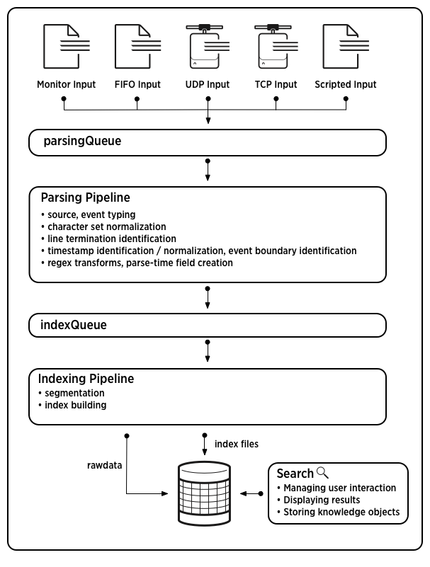
For a description of the data pipeline, see "How data moves through Splunk Enterprise" in the Distributed Deployment Manual.
Depending on the data and what sort of knowledge you need to extract from it, you can tweak one or more steps of event processing.
Event processing occurs in two stages, parsing and indexing. All data that comes into Splunk Enterprise enters through the parsing pipeline as large chunks. During parsing, Splunk Enterprise breaks these chunks into events. It then hands off the events to the indexing pipeline, where final processing occurs.
During both parsing and indexing, Splunk Enterprise acts on the data, transforming it in various ways. Most of these processes are configurable, so you have the ability to adapt them to your needs. In the description that follows, each link takes you to a topic that discusses one of these processes, with information on ways you can configure it.
While parsing, Splunk Enterprise performs a number of actions, including:
host, source, and sourcetype.
In the indexing pipeline, Splunk Enterprise performs additional processing, including:
The distinction between parsing and indexing pipelines matters mainly for forwarders. Heavy forwarders can parse data locally and then forward the parsed data on to receiving indexers, where the final indexing occurs. With universal forwarders, on the other hand, the data gets forwarded after very minimal parsing. Most parsing then occurs on the receiving indexer.
Once the data has been transformed into events, you can make the events even more useful by associating them with knowledge objects, such as event types, field extractions, and reports. For information about managing Splunk knowledge, read the Knowledge Manager manual, starting with "What is Splunk knowledge?".
Adding data is now easier than ever in Splunk Enterprise. Once you log in with a user with appropriate permissions, accessing the new process is one click away. This topic walks you through the "add data" process.
For a tutorial on how to get data into Splunk, see the Search Tutorial.
Note: This page is not available if:
Once you log into Splunk Enterprise, it presents the updated Home page:
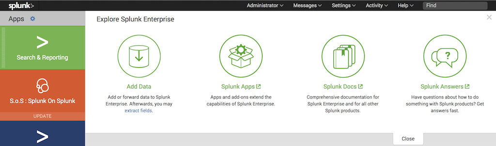
To add data, click the green "Add Data" button on the center-left of the page (to the right of the list of apps.) Splunk Enterprise then loads the "Add Data" page.
You can also access the "Add Data" page by clicking the "Settings" menu in the system bar. When the menu drops down, the "Add Data" button is on the left side.
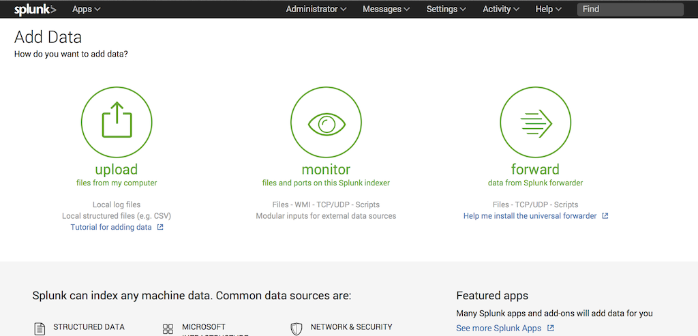
This page presents you with three options for getting data into your Splunk Enterprise instance: Upload, Monitor, and Forward.
The "Upload" option lets you upload a file or archive of files into Splunk Enterprise for indexing. When you click the "Upload" button, Splunk Enterprise takes you to a page that starts the upload process. See "Upload data."
The "Monitor" option lets you monitor one or more files, directories, network streams, scripts, Event Logs (on Windows hosts only), performance metrics, or any other type of machine data that the Splunk Enterprise instance has access to. When you click the "Monitor" button, Splunk Enterprise takes you to a page that starts the monitoring process. See "Monitor data."
The "Forward" option lets you receive data from forwarders into this Splunk Enterprise instance. When you click on the "Forward" button, Splunk Enterprise takes you to a page that starts the data collection process from forwarders. See "Forward data."
Note: This option requires additional configuration before use. Use it in a single-instance environment only. If you have multiple Splunk Enterprise instances that index data, see "About forwarding and receiving data" in the Forwarding Data manual.
| This feature does not work in Internet Explorer version 9. |
|---|
| While Internet Explorer version 9 is a supported browser for Splunk Web, due to issues with compatibility, the "Upload Data" feature does not work in this version.
To access this feature in IE, use version 10 or later. |
This topic explains the page that Splunk Enterprise loads when you select the "Upload" button on the "Add data" page.
When you access the "Upload" page, Splunk Enterprise presents you with the following:
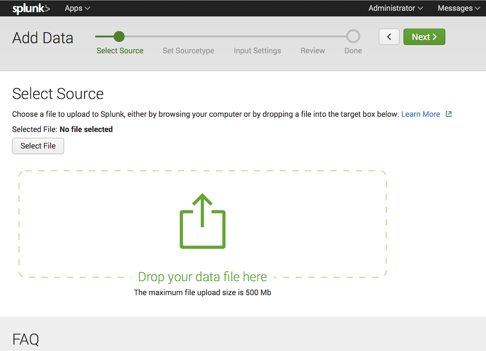
This page lets you upload data to Splunk Enterprise using one of the following methods:
or
Splunk Enterprise then loads the file and processes it, depending on what type of file it is. Once it has completed loading, you can then click the green Next button on the upper right to proceed to the next step in the "Add data" process.
This topic explains the page that Splunk Enterprise loads when you select the "Monitor" button on the "Add data" page.
When you access the "Monitor" page, Splunk Enterprise presents you with the following:
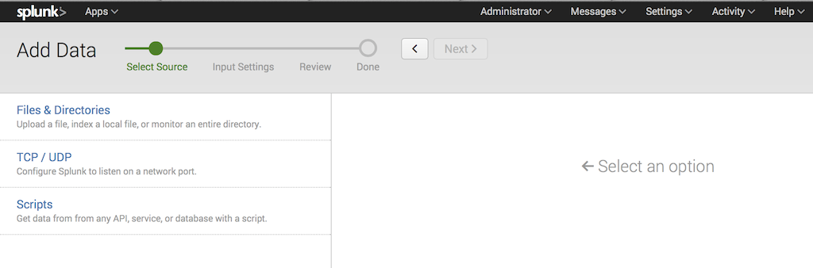
This page lets you choose the type of data that Splunk Enterprise should monitor. Splunk Enterprise lists the default inputs first. It then lists forwarded inputs below the default inputs. Finally,it shows any modular inputs you have installed on the instance.
To monitor data, perform the following steps:
1. Select a source from the left side of the screen by clicking it once.
Note: Splunk Enterprise shows only sources that it has the capability of monitoring. Refer to the list of data sources for specifics. If you do not see the data source that you want to monitor, consider the following reasons:
2. Follow the on-screen prompts to complete the selection of the source object that you want Splunk Enterprise to monitor.
3. Click the green Next button on the upper right to proceed to the next step in the "Add data" process.
This topic explains the "Select Forwarders" page that Splunk Enterprise loads when you click the "Forward" button on the "Add data" page.
Important: Only use this page if you have a single instance of Splunk Enterprise acting as an indexer and deployment server. If you have multiple servers that perform indexing, see "About deployment server and forwarder management" in the Updating Splunk Enterprise Instances manual.
When you access the "Forward" page, Splunk Enterprise presents you with the following:
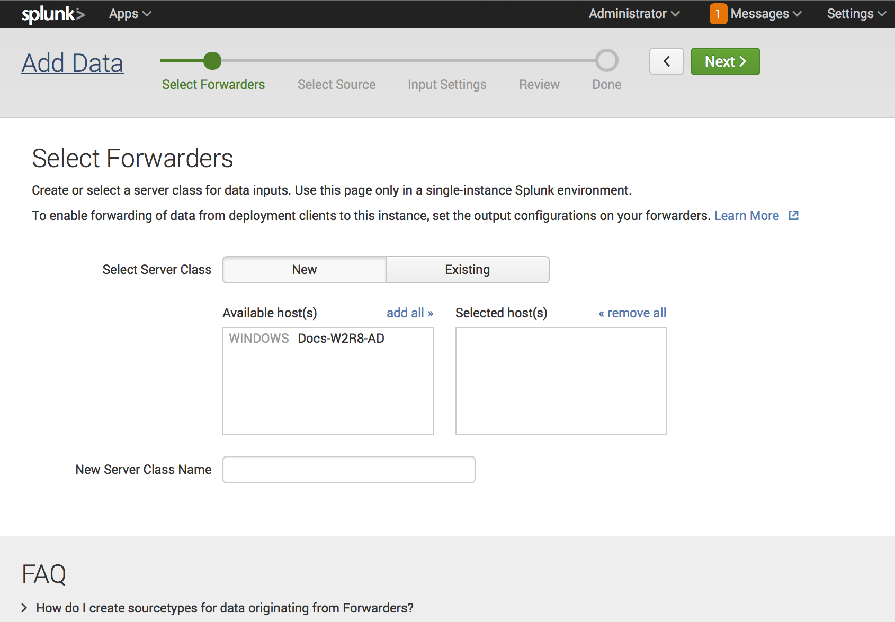
The page lets you define server classes and add forwarders to those classes in order to receive data from them.
This page only displays forwarders that you have already configured to forward data and act as deployment clients to this instance. If you have not configured any forwarders, the page warns you of this.
For a forwarder to appear in the list, the following must happen:
Once you see the forwarder in the list, you can configure it to add data:
1. In Select Server Class, click one of the options shown:
2. In the Available host(s) pane, choose the forwarders that you want this instance to receive data from. The forwarders move from the Available host(s) pane to the Selected host(s) pane. You can add all of the hosts by clicking the add all link, or remove all hosts by selecting the remove all link.
Important: Hosts you add to a server class must contain hosts of a certain platform. You cannot, for example, put Windows and *nix hosts in the same server class.
3a. If you chose New in "Select server class", enter a unique name for the server class that you will remember.
3b. If you chose Existing, select the server class you want from the drop-down list.
4. Click the green Next button on the upper right to proceed to the next step in the "Add data" process.
Splunk Enterprise loads the "Select Source" page and shows source types that are valid for the forwarders that you have selected.
5. Select the data sources that you want the forwarders to send data to this instance. See "Monitor data."
6. Click the green Next button to proceed to the next step in the Add data process.
The "Set Sourcetype" page lets you improve event processing by previewing how Splunk Enterprise indexes your data. You can use this page to make sure that Splunk Enterprise indexes your data exactly as you want it to appear.
The Set Sourcetype page appears after you use the "Upload" or "Monitor" pages to specify a single file as a source of data.
It does not appear when:
In those cases, the "Modify input settings" page appears instead. With some advance planning, you can use this page for those input types as well. See "Prepare your data".
On the "Set Sourcetypes" page, you can easily make adjustments to how Splunk Enterprise eventually indexes your data. You can adjust and improve the indexing process interactively so that when Splunk Enterprise later performs the actual indexing, your event data ends up stored in the exact format you want.
When this page loads, Splunk Enterprise chooses a source type based on the data you specified. You can accept that recommended source type or change it.
Here is an example of the "Set Sourcetype" page:
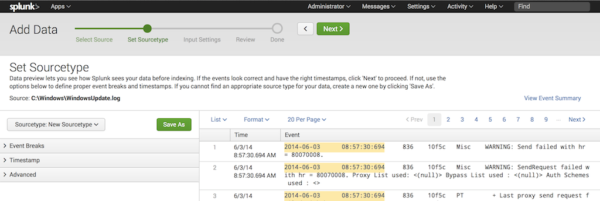
You can view how Splunk Enterprise plans to break the data in your file into events. If the proposed indexing does not suit your needs, you can choose a different source type or create a new one by clicking the Sourcetype: New Sourcetype button. See "View and set source types for event data."
You can see a summary of the events within the data sample that Splunk Enterprise collected by clicking the "View Event Summary" link on the right side of the page. This summary shows the following information:
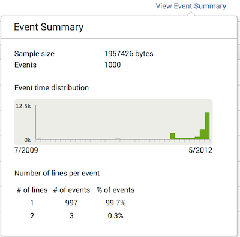
You can adjust how Splunk Enterprise processes timestamps and event breaks. Once the results suit you, you can save your changes as a new source type, which you can then apply to the actual data. See "Assign the right source type to your data" for details.
When you select a structured data file, such as a comma-separated values (CSV), tab-separated values (TSV), or similar file, the "Delimited settings" bar appears. This window lets you adjust settings related to how Splunk Enterprise parses these structured data files. You can adjust:
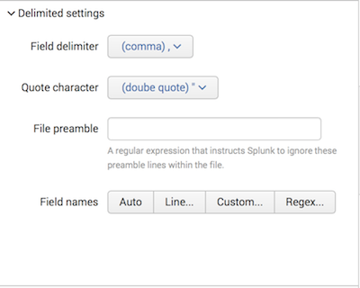
This topic discusses how the "Set sourcetype" page helps you correlate the proper source type to data that you index into Splunk Enterprise.
The purpose of the "Set sourcetype" page is to help you apply the right source type to your incoming data. The source type is one of the default fields that Splunk Enterprise assigns to all incoming data. The source type determines how Splunk Enterprise formats your data during indexing. By assigning the correct source type to your data, the indexed version of the data (the event data) will look the way you want it to, with proper timestamps and event breaks.
Splunk Enterprise comes with a large number of predefined source types. When consuming data, in most cases, Splunk Enterprise attempts to automatically assign the correct source type to your data and process the data appropriately. If you have specialized data, you might need to manually select a different predefined source type to the data. In other cases, you might need to create a new source type with customized event processing settings.
The "Set sourcetype" page helps you assign the right source type to your data by showing you the results of applying any predefined source type to the data. It also allows you to modify the settings for a source type interactively, until you achieve the desired results. At that point, you can save the modifications as a new source type.
The "Set sourcetype" page lets you:
The page saves any new source types to a props.conf file, which you can later distribute across the indexers in your deployment, so that the source types are available globally. See "Data preview and distributed Splunk Enterprise" for details.
For detailed information on source types, see "Why source types matter" in this manual. In addition, several topics in the "Configure event processing", "Configure timestamps", and "Configure source types" chapters provide advanced information on source type processing.
This topic discusses how to prepare your data to be viewed in the Splunk Enterprise "Set sourcetype" page.
The "Set Sourcetype" page works on single files only, and can only access files that are on the Splunk Enterprise instance or have been uploaded there. Although it doesn't directly process network data or directories of files, you can easily get around those limitations.
You can direct some sample network data into a file, which you can then either upload or add as a file monitoring input. There are a number of external tools that can do this; a typical one in the *nix world is netcat. For example, if you're listening to UDP data on port 514, you can use netcat to direct some of your network data into a file:
nc -lu 514 > sample_network_data
It is best practice to run the command inside a shell script that has logic to kill netcat once the file reaches a size of 2MB. By default, data preview reads only the first 2MB of data from a file.
After you've created the "sample_network_data" file, you can add it like a normal input (either by uploading it or adding it as a file input.) Splunk Enterprise brings up the "Set sourcetypes" page as part of the input definition process. Once you have previewed the file and made any necessary changes to its event processing, you can apply any newly created source type directly to the file.
If all the files in a directory are similar in content, then you can preview a single file and feel fairly confident that the results will be valid for all files in the directory. However, if you have directories with files of heterogeneous data, you should preview a set of files that represents the full range of data in the directory. This means that you should preview each type of file separately, as specifying any wildcard causes Splunk Enterprise to disable the "Set Sourcetype" page.)
Splunk Enterprise reads and displays the first 2MB of data from a file in the "Set Sourcetypes" page. In most cases, this should provide a sufficient sampling of your data. If you need to sample a larger quantity of data, you can change the max_preview_bytes attribute in limits.conf. Alternatively, you can edit the file to reduce large amounts of similar data, so that the remaining 2MB of data contains a representation of all the types of data in the original file.
This topic describes how to preview incoming data and set or create the source type for that data in Splunk Enterprise.
You access the feature automatically when you create a file input in Splunk Web. When you start to add a new input from the Files & Directories page for a single file in Splunk Web, or upload a file, as described here, Splunk Web presents the "Set sourcetypes" page.
At that point, you can see how Splunk Enterprise will index your data. Then, you can either modify that and define a new source type, choose an existing source type, or accept the recommend source type and continue directly to the input settings page.
After you choose the file you want to monitor in the Files & Directories Add Data panel or upload a file from the Upload page, Splunk Web presents the "Set Sourcetypes" page.
The page has three sections. The top section provides instructions on how to use the page. The bottom left section has controls which let you select and define a new source type, including setting event break, timestamp, and other options. The bottom right section - the "data preview pane" - provides a window into how Splunk Enterprise sees the data currently. The actions you take in the lower left section reflect immediately in the lower right section.
At any time, you can return to the previous page and select a new file to preview by clicking the white "<" button in the top section.
1a. First, look at how Splunk Enterprise displays the data currently. How it displays here is how it will be indexed. Review event breaks and time stamps.
1b. You can use the Event Summary pop-up dialog to show the number of lines that Splunk Enterprise counted when parsing the file. A lower number of lines counted in the file than you expect can indicate the need to customize event breaking.
2a. If the data appears the way you want, then proceed to Step 3a.
2b. If the data does not appear the way you want, proceed to "Choose an existing source type" later in this topic to change source type parameters until it does.
3a. If you agree with the existing source type that Splunk Enterprise selected, click the green "Next" button in the top section to proceed to the Input Settings page. The data preview process is now complete.
3b. If you do not agree with the existing source type that Splunk Enterprise selects, Splunk Enterprise does not choose a source type, or you want to define a new source type, then you can do one of the following:
4. Once you have chosen or saved a source type, click on the green "Next" button in the top section to proceed to the Input Settings page. The data preview process is now complete.
If Splunk Enterprise doesn't display the data the way you want initially, first see if there is an existing source type that works.
If you try to choose an existing source type and do not find success, then proceed to "Define a new source type" later in this topic for additional options to make your data display the way you like.
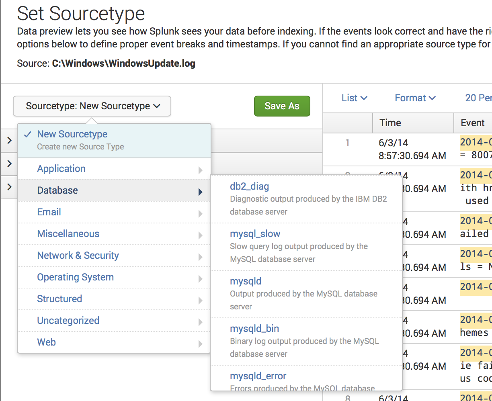
1. Click the Sourcetype: System Defaults button.
Splunk Enterprise displays a list of source type categories. Under each category is a list of source types within that category.
2. Mouse over the category that best represents your data. As you do, the source types under that category pop up in a menu to the right.
3. Select the source type that you feel best represents your data. Splunk Enterprise updates the data preview pane to show how the data looks under the new source type.
Note: You might need to scroll to see all source types in a category.
4. Review your data again, as described in "Review and set source types" earlier in this topic.
If Splunk Enterprise does not show the data in the way you want even after choosing an existing source type, then define a new source type and configure event breaks, time stamp recognition, and other parameters until Splunk Enterprise displays the data to your liking.
To modify these parameters and define the source type, proceed to "Modify event processing" in this manual.
If you're not satisfied with how Splunk Enterprise initially processes your data, as described in "View and set source types for event data", you can use data preview to change the event processing settings and save the improved settings as a new source type. Here are the main steps:
1. View the event data, as described in "View and set source types for event data".
2. Modify the event processing settings.
3. Review the effect of your changes and iterate until you are satisfied.
4. Save the modified settings as a new source type.
You can then apply the new source type to any of your inputs.
Splunk Enterprise is ready to create a new source type by default. The "Sourcetype: System Defaults" drop-down in the "Set sourcetypes" page indicates this. To create the new source type, set the event-breaking and time stamp parameters as shown later in this topic, then save the source type.
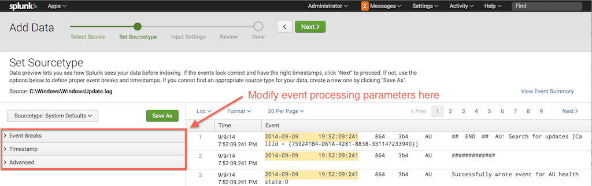
On the left side of the "Set Sourcetypes" page, there are collapsible tabs and links for the three types of adjustments that you can perform:
props.conf directly.
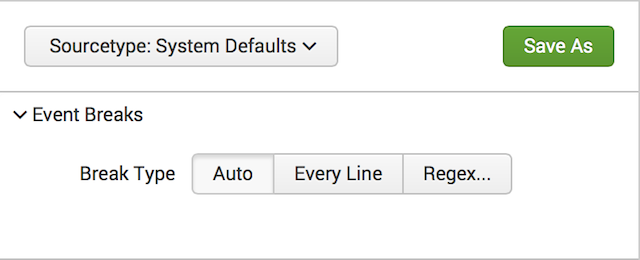
To modify event break parameters, click on the Event Breaks bar to expand it. The bar opens to display the following buttons:
For detailed information on event linebreaking, see "Configure event linebreaking".
For a primer on regular expression syntax and usage, see Regular-Expressions.info. You can test your regular expression by using it in a search with the rex search command. Splunk Enterprise also maintains a list of useful third-party tools for writing and testing regular expressions.
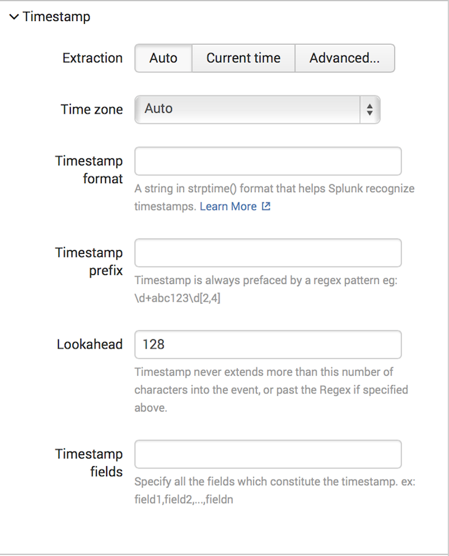
To modify time stamp recognition parameters click the Timestamps bar to expand it. The bar opens to reveal these options:
For Extraction, you can choose one of these options:
The "Advanced" parameters are:
Important: If you specify a timestamp format in the "Timestamp format" field and the timestamp is not located at the very start of each event, you must also specify a prefix in the Timestamp prefix field. Otherwise, Splunk Enterprise will not be able to process the formatting instructions, and every event will contain a warning about the inability to use strptime. (It's possible that you will still end up with a valid timestamp, based on how Splunk attempts to recover from the problem.)
For detailed information on configuring timestamps, see the topics in the chapter "Configure timestamps".
To modify advanced parameters, click the Advanced bar to expand it. The bar opens to reveal options that let you specify source type properties by directly editing the underlying props.conf file.
Here, you can add or change source type properties, by specifying attribute/value pairs. See props.conf for details on how to set these properties.
This box shows the current, complete set of properties for the source type you're editing, including:
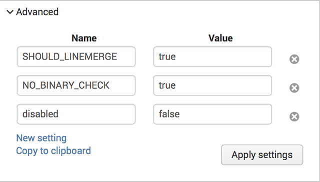
For information on how to set source type properties, see props.conf in the Configuration file reference. Also, you can refer to these topics on timestamp configuration and event linebreaking.
The settings you make in Advanced mode always take precedence. For example, if you alter a timestamp setting using the Timestamps tab and also make a conflicting timestamp change in Advanced mode - no matter whether before or after - the Advanced mode change wins.
Starting with highest precedence, here is how Splunk Enterprise combines any adjustments with the underlying default settings:
Also, if you return to the Event Breaks or Timestamps tabs after making changes in Advanced mode, the changes will not be visible from those tabs.
When you're ready to view the effect of your changes, select Apply settings. Splunk Web refreshes the screen, so you can review the effect of your changes on the data.
If you want to make further changes, you can now do so, using any of the three adjustment methods available. Once again, select Apply changes to view the effect of the changes on your data.
To save the changes as a new source type, click the green "Save As" button next to the "Sourcetype" button. Splunk Web displays a dialog box where you can name your new source type, choose the category in which it should be shown in the "Sourcetype" button dialog, and the application context it should use.
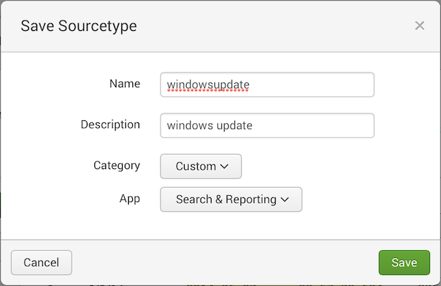
1. Enter the Name of the new source type.
2. Enter the Description of what the source type is.
3. Choose the Category in which the source type should appear when you select the "Sourcetype" button.
4. Choose the App for which the new source type should be used.
5. Click the green Save button to save the source type and return to the "Set Sourcetypes" page.
At this point you can:
You can use data preview to create new source types, which you can then assign to inputs from specific files/directories or from tcp/udp. Data preview saves any new source type to a props.conf configuration file on the Splunk Enterprise instance you're running it on. If you want to use the source type on other Splunk Enterprise instances, you can distribute the file as needed.
There are two steps to using a new source type in a distributed environment, where you have forwarders consuming data and then forwarding the data to indexers:
1. Distribute the props.conf file containing the source type definition to any indexers that will be indexing data with the source type.
2. You can then use the new source type when you define an input on forwarders sending data to those indexers.
When a forwarder sends data tagged with the new source type to an indexer, the indexer will be able to correctly process it into events.
This topic first describes the configuration file that data preview creates. It then explains how to distribute the file to the indexers in your deployment. Finally, it tells you how to specify the new source type when defining an input on a forwarder.
For detailed information on distributed Splunk Enterprise, read the Distributed Deployment Manual.
When you create a new source type in the "Set Sourcetype" page, Splunk Enterprise saves the source type definition as a stanza in a props.conf file in the app that you selected when you saved the source type. For example, if you deleted the "Search and Reporting" app, the file will reside in $SPLUNK_HOME/etc/apps/search/local/props.conf. The only exception is the "System" app: If you choose that app when saving the source type, the file will reside in $SPLUNK_HOME/etc/system/local..
The first time you use data preview to create a source type, Splunk Enterprise generates a new props.conf file in the directory for the app that you chose when saving the source type. If you later create additional source types, Splunk saves the additional source types to the same props.conf file.
Note: A Splunk Enterprise instance might have multiple versions of some configuration files, spread across several directories. At run-time, Splunk Enterprise combines the contents of configuration files according to a set of rules. For background on how configuration files work, read "About configuration files" and "Configuration file precedence".
After you create new source types, you can distribute the data preview props.conf file to another Splunk Enterprise instance. That instance will then be able to index any incoming data that's been tagged with the new source type(s).
Generally, you will want to put the configuration file in its own app directory on the target Splunk Enterprise instance; for example, $SPLUNK_HOME/etc/apps/splunk_datapreview/local/.
To distribute configuration files to other Splunk instances, you can use Splunk's deployment server or another distribution tool of your choice. To learn how to use the deployment server, read the Updating Splunk Instances manual.
Note: Splunk Enterprise uses the source type definitions in props.conf to parse incoming data into events. For this reason, you can only distribute the file to a Splunk Enterprise instance that performs parsing; that is, either an indexer or a heavy forwarder.
Since forwarders (with the exception of the heavy forwarder) do not contain Splunk Web, you usually configure their inputs through the
inputs.conf configuration file. When you specify an input in that file, you can also specify the input's source type. For detailed information on inputs.conf, read the section on inputs.conf in the Configuration file reference.
To tag a forwarder input with a new source type, you just add the source type to the input stanza in inputs.conf. For example:
[tcp://:9995]
sourcetype = new_network_type
You must make sure that all of the forwarder's receiving indexers have copies of the data preview props.conf file containing the source type definition for "new_network_type". When the forwarder sends data to the indexers, they will then be able to identify the new source type and correctly format the data. The procedure for distributing props.conf is described earlier in this topic, in the section "Distribute props.conf to other indexers".
If you use the search head pooling feature of distributed search, you need to follow some guidelines to ensure that data preview appears in Splunk Web. This is because Splunk Enterprise implements data preview as a built-in app. For more information, read "Artifacts and incorrectly displayed items in Splunk Web after upgrade" in the Distributed Search Manual.
This topic discusses the "Input Settings" page Splunk Enterprise presents after you configure the data source in the "Set Sourcetypes" page.
After you select the source (or set your source type when uploading or monitoring a single file), Splunk Enterprise presents the following page:
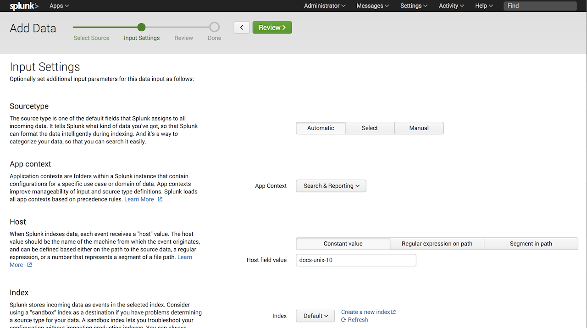
The page lets you specify additional parameters for your data input, such as its source type, its application context, its host value, and the index where data from the input should be stored.
The input settings available are as follows:
The "Sourcetype" setting lets you specify what source type Splunk Enterprise should apply to your data. It appears when:
If your data source does not meet these criteria, then the "Sourcetype" setting does not appear.
To specify a source type, click one of the three buttons:
Note: There is no facility to create a source type on this page. If you want to create a source type so that it appears in the "Select" list, either:
props.conf file. Read the props.conf spec file for a list of valid attributes.
The Application Context setting tells Splunk Enterprise the context in which the input should collect data. Application contexts improve manageability of input and source type definitions. Splunk Enterprise loads all app contexts based on precedence rules. See "Configuration file precedence" in the Admin manual.
Select the application context you want this input to operate within by clicking the drop-down and selecting the application context you want from the list.
Splunk Enterprise tags each event that it indexes with a host value. You can configure what Splunk Enterprise tags events with by specifying how it should do so:
For example, if the source input has a pathname /var/server/<hostname>, and you wanted Splunk Enterprise to set the host field based on hostname, you would select "Segment in path" and enter 3 as the segment number, since <hostname> is the third segment in the path /var/log/hostname.
The "Index" setting tells Splunk Enterprise which index that it should store the events for this input. To use the default index, leave the drop-down button set to "Default". To choose another index, click the drop-down button and select the index you want the data to go to by clicking the selection in the list. If the index you want to send the data to is not in the list, and you have the permissions, you can create a new index by clicking the Create a new index button.
Once you have made your selections, you can proceed to the final step of the "Add Data" process by clicking the green Next button.
Splunk Enterprise has three file input processors: monitor, MonitorNoHandle, and upload.
You can use monitor to add nearly all your data sources from files and directories. However, you might want to use upload to add one-time inputs, such as an archive of historical data.
On Windows systems, you can use MonitorNoHandle to monitor files which the system rotates automatically. MonitorNoHandle works only on Windows systems.
You can add inputs to monitor or upload using any of these methods:
You can add inputs to MonitorNoHandle using either the CLI or inputs.conf.
You can use the "Set Sourcetype" page to see how Splunk Enterprise will index data from a file. See "The "Set Sourcetype" page" for details.
Specify a path to a file or directory and the Splunk Enterprise monitor processor consumes any new data written to that file or directory. This is how you can monitor live application logs such as those coming from Java 2 Platform Enterprise Edition (J2EE) or .NET applications, Web access logs, and so on. Splunk Enterprise continues to monitor and index the file or directory as new data appears. You can also specify a mounted or shared directory, including network file systems, so long as Splunk Enterprise can read from the directory. If the specified directory contains subdirectories, Splunk Enterprise recursively examines them for new files.
Splunk Enterprise checks for the file or directory specified in a monitor configuration on start and restart. If the file or directory is not present on start, Splunk Enterprise continues to check for it every 24 hours from the time of the last restart. Splunk Enterprise also scans subdirectories of monitored directories continuously. To add new inputs without restarting Splunk Enterprise, use Splunk Web or the CLI. If you want Splunk Enterprise to find potential new inputs automatically, use the crawl CLI command.
When using monitor, note the following:
MonitorNoHandle input.
tar, gz, bz2, tar.gz, tgz, tbz, tbz2, zip, and z.
dir/filename path must not exceed 1024 characters.
.splunk filename extension. This is because Splunk Enterprise expects files with that extension to be metadata information files. If you need to index files with a .splunk extension, use the add oneshot CLI command.
Monitor inputs may overlap. So long as the stanza names are different, Splunk Enterprise treats them as independent stanzas and files matching the most specific stanza will be treated in accordance with its settings.
To index a static file once, select Upload in Splunk Web. Splunk Enterprise will only monitor the file once.
You can also use the CLI add oneshot or spool commands for the same purpose. See "Use the CLI" for details.
Use the batch input type in inputs.conf to load files once and destructively. By default, the Splunk batch processor is located in $SPLUNK_HOME/var/spool/splunk. If you move a file into this directory, Splunk indexes it and then deletes it.
Note: For best practices on loading file archives, see "How to index different sized archives" on the Community Wiki.
This Windows-only input allows you to read files on Windows systems as Windows writes to them. It does this by using a kernel-mode filter driver to capture raw data as it gets written to the file. Use this input stanza on files which get locked open for writing. You can use this input stanza on a file which the system locks open for writing, such as the Windows DNS server log file.
Note: You can only monitor single files with MonitorNoHandle. You can not monitor directories. If a file you choose to monitor already exists, Splunk does not index its current contents, only new information that comes into the file as it gets written to.
You can use Splunk Web to add inputs from files and directories or any other input that the Splunk Enterprise instance is capable of monitoring.
You add an input from the Add New page in Splunk Web. See "How do you want to add data?"
You can get there by two routes:
Via Splunk Settings:
1. Click Settings in the upper right-hand corner of Splunk Web.
2. In the Data section of the Settings pop-up, click Data Inputs.
3. Click Files & Directories.
4. Click the New button to add an input.
Via Splunk Home:
1. Click the Add Data link in Splunk Home.
2. Click Upload to upload a file, Monitor to monitor a file, or Forward to forward a file.
Note: Forwarding a file requires additional setup. See "Set up forwarding and receiving" in the Forwarding Data manual.
1. To add a file or directory input, click Files & Directories.
2. In the File or Directory field, specify the full path to the file or directory.
To monitor a shared network drive, enter the following: <myhost>/<mypath> (or \\<myhost>\<mypath> on Windows). Make sure Splunk Enterprise has read access to the mounted drive, as well as to the files you wish to monitor.
3. Choose how you want Splunk Enterprise to monitor the file:
4. Click the green Next button.
When you add a new file input, Splunk Enterprise lets you set the source type of your data and preview how it will look once it has been indexed. This lets you ensure that the data has been formatted properly and make any necessary adjustments.
If you choose to skip data preview, Splunk Web takes you to the Input Settings page.
Note: Splunk Enterprise cannot show a preview of directories or archived files.
The Input Settings page lets you specify application context, default host value, and index. All of these parameters are optional.
1. Select the appropriate Application context for this input.
2. Set the Host name value. You have several choices for this setting. Learn more about setting the host value in "About hosts".
3. Set the Index that Splunk Enterprise should send data to for this input. Leave the value as "default", unless you have defined multiple indexes and want to use one of those instead. In addition to indexes for user data, Splunk Enterprise has a number of utility indexes, which also appear in this dropdown box.
4. Click the green Review button.
After specifying all your input settings, you can review your selections. Splunk Enterprise lists all options you selected, including but not limited to the type of monitor, the source, the source type, the application context, and the index.
Review the settings. If they do not match what you want, click the gray < button to go back to the previous step in the wizard. Otherwise, click the green Submit button.
Splunk Enterprise then loads the "Success" page and begins indexing the specified file or directory.
Monitor files and directories via the Splunk Enterprise Command Line Interface (CLI). To use the CLI, navigate to the $SPLUNK_HOME/bin/ directory from a command prompt or shell, and use the splunk command in that directory.
If you get stuck, the CLI has built-in help. Access the main CLI help by typing splunk help. Individual commands have their own help pages as well -- type splunk help <command>.
The following commands are available for input configuration via the CLI:
| Command | Command syntax | Action |
|---|---|---|
| add monitor | add monitor <source> [-parameter value] ...
| Monitor inputs from <source>.
|
| edit monitor | edit monitor <source> [-parameter value] ...
| Edit a previously added monitor input for <source>.
|
| remove monitor | remove monitor <source>
| Remove a previously added monitor input for <source>.
|
| list monitor | list monitor
| List the currently configured monitor inputs. |
| add oneshot | add oneshot <source> [-parameter value] ...
| Copy the file <source> directly into Splunk. This uploads the file once, but Splunk Enterprise does not continue to monitor it.
Note:
|
| spool | spool <source>
| Copy the file <source> into Splunk Enterprise via the sinkhole directory. This command is similar to add oneshot, except that the file gets spooled from the sinkhole directory, rather than added immediately. |
Change the configuration of each data input type by setting additional parameters. Parameters are set via the syntax: -parameter value.
Note: You can only set one -hostname, -hostregex or -hostsegmentnum per command.
| Parameter | Required? | Description |
|---|---|---|
<source>
| Yes | Path to the file or directory to monitor/upload for new input.
Note: Unlike the other parameters, the syntax for this parameter is just the value itself and is not preceded by a parameter flag: " |
sourcetype
| No | Specify a sourcetype field value for events from the input source. |
index
| No | Specify the destination index for events from the input source. |
hostname or host
| No | Specify a host name to set as the host field value for events from the input source.
Note: These are functionally equivalent. |
hostregex or host_regex
| No | Specify a regular expression to use to extract the host field value from the source key.
Note: These are functionally equivalent. |
hostsegmentnum or host_segment
| No | An integer, which determines what "/" separated segment of the path to set as the host field value. If set to 3, for example, the third segment of the path is used.
Note: These are functionally equivalent. |
rename-source
| No | Specify a value for the "source" field to be applied to data from this file. |
follow-only
| No | Set to "true" or "false". Default is "false".
When set to "true", Splunk Enterprise reads from the end of the source (like the "tail -f" Unix command). Note: This parameter is not available for |
The following example shows how to monitor files in /var/log/.
Add /var/log/ as a data input:
./splunk add monitor /var/log/
The following example shows how to monitor the Windows Update log file (where Windows logs automatic updates), sending the data to an index called "newindex".
Add C:\Windows\windowsupdate.log as a data input:
./splunk add monitor C:\Windows\windowsupdate.log -index newindex
This example shows how to monitor the default location for Windows IIS logging.
Add C:\windows\system32\LogFiles\W3SVC as a data input:
./splunk add monitor c:\windows\system32\LogFiles\W3SVC
This example shows how to upload a file into Splunk. Unlike the previous examples, Splunk Enterprise only consumes the file once; it does not continuously monitor it.
Upload /var/log/applog directly into Splunk Enterprise with the add oneshot command:
./splunk add oneshot /var/log/applog
You can also upload a file via the sinkhole directory with the spool command:
./splunk spool /var/log/applog
The result is the same with either command.
To add an input to Splunk Enterprise, add a stanza to inputs.conf in $SPLUNK_HOME/etc/system/local/, or your own custom application directory in $SPLUNK_HOME/etc/apps/. If you have not worked with Splunk's configuration files before, read "About configuration files" before you begin.
You can set multiple attributes in an input stanza. If you do not specify a value for an attribute, Splunk Enterprise uses the default, as defined in $SPLUNK_HOME/etc/system/default/inputs.conf.
Note: To ensure that new events are indexed when you copy over an existing file with new contents, set the CHECK_METHOD = modtime attribute in props.conf for the source. This checks the modification time of the file and re-indexes it when it changes. Be aware that the entire file will be re-indexed, which can result in duplicate events.
There are separate stanza types for monitor and batch. See "Monitor files and directories" for detailed information about monitor and batch.
The following are attributes that you can use in both monitor and batch input stanzas. See the sections that follow for attributes that are specific to each type of input.
| Attribute | Description | Default |
|---|---|---|
host = <string>
|
| the IP address or fully-qualified domain name of the host where the data originated.
|
index = <string>
|
| main or whatever you set the default index to
|
sourcetype = <string>
|
| Splunk Enterprise picks a source type based on various aspects of the data. There is no hard-coded default. |
queue = parsingQueue | indexQueue
|
| parsingQueue |
_TCP_ROUTING = <tcpout_group_name>,<tcpout_group_name>,...
|
| the groups present in 'defaultGroup' in [tcpout] stanza in outputs.conf
|
host_regex = <regular expression>
|
| the default "host =" attribute, if the regex fails to match
|
host_segment = <integer>
|
| the default "host =" attribute, if the value is not an integer, or is less than 1
|
Monitor input stanzas direct Splunk Enterprise to watch all files in the <path> (or just <path> itself if it represents a single file). You must specify the input type and then the path, so put three slashes in your path if you're starting at the root directory.
You can use wildcards for the path. For more information, read "Specify input paths with wildcards" in this manual.
[monitor://<path>]
<attrbute1> = <val1>
<attrbute2> = <val2>
...
The following are additional attributes you can use when defining monitor input stanzas:
| Attribute | Description | Default |
|---|---|---|
| source = <string> |
| the input file path |
crcSalt = <string>
|
| N/A |
ignoreOlderThan = <time window>
|
| 0 (disabled) |
followTail = 0|1
|
| 0 |
whitelist = <regular expression>
|
| N/A |
blacklist = <regular expression>
|
| N/A |
alwaysOpenFile = 0 | 1
|
| N/A |
recursive = true|false
|
| true |
time_before_close = <integer>
|
| 3 |
followSymlink = true|false
|
| true |
Example 1. To load anything in /apache/foo/logs or /apache/bar/logs, etc.
[monitor:///apache/.../logs]
Example 2. To load anything in /apache/ that ends in .log.
[monitor:///apache/*.log]
On Windows systems only, use the MonitorNoHandle stanza to monitor files without using Windows file handles. This allows you to read special log files like Windows's DNS server log files.
You must specify a valid path to a file when you use MonitorNoHandle. You cannot specify a directory. If you specify a file that already exists, Splunk Enterprise does not index the existing data in the file. It only indexes new data that the system writes to the file.
You can only configure monitorNoHandle using inputs.conf or the CLI. you cannot configure it in Splunk Web.
[MonitorNoHandle://<path>]
<attrbute1> = <val1>
<attrbute2> = <val2>
...
Use batch to set up a one time, destructive input of data from a source. For continuous, non-destructive inputs, use monitor. Remember, after the batch input is indexed, Splunk deletes the file.
[batch://<path>]
move_policy = sinkhole
<attrbute1> = <val1>
<attrbute2> = <val2>
...
Important: When defining batch inputs, you must include the attribute, move_policy = sinkhole. This loads the file destructively. Do not use the batch input type for files you do not want to delete after indexing.
Example: This example batch loads all files from the directory system/flight815/, but does not recurse through any subdirectories under it:
[batch://system/flight815/*]
move_policy = sinkhole
This topic discusses how to specify wildcards in a path in inputs.conf. It is only relevant when using inputs.conf to specify inputs, as described in "Edit inputs.conf" in this manual.
Important: Input path specifications in inputs.conf don't use regular expressions (regexes) but rather Splunk-defined wildcards.
A wildcard is a character that you can substitute for one or more unspecified characters when searching text or selecting multiple files or directories. In Splunk Enterprise, you can use wildcards to specify your input path for monitored input.
| Wildcard | Description | Regex equivalent | Example(s) |
|---|---|---|---|
...
| The ellipsis wildcard recurses through directories and any number of levels of subdirectories to find matches.
Note: if the wildcard is followed by any folder separator (//var/log/.../file) it will not match the first folder level, only sub folders. | .*
| /foo/.../bar.log matches the files /foo/1/bar.log, /foo/2/bar.log, /foo/1/2/bar.log, etc.
And will not match Note: Because a single ellipse recurses through all directories and subdirectories, |
*
| The asterisk wildcard matches anything in that specific directory path segment.
Unlike " | [^/]*
| /foo/*/bar matches the files /foo/bar, /foo/1/bar, /foo/2/bar, etc. However, it does not match /foo/1/2/bar.
|
Note: A single dot (.) is not a wildcard, and is the regex equivalent of \..
For more specific matches, combine the ... and * wildcards. For example, /foo/.../bar/* matches any file in the /bar directory within the specified path.
When determining the set of files or directories to monitor, Splunk Enterprise splits elements of a monitoring stanza into segments - defined as text between directory separator characters ("/" or "\") in the stanza definition. If you specify a monitor stanza that contains segments with both wildcards and regex metacharacters (such as (, ), [, ], and |), those characters behave differently depending on where the wild card is in the stanza.
If a monitoring stanza contains a segment with regex metacharacters before a segment with wildcards, Splunk Enterprise treats the metacharacters literally, as if you wanted to monitor files or directories with those characters in the files' or directories' names. For example:
[monitor://var/log/log(a|b).log]
monitors the /var/log/log(a|b).log file. Splunk Enterprise does not treat the (a|b) as a regular expression because there are no wildcards present.
[monitor://var/log()/log*.log]
monitors all files in the /var/log()/ directory that begin with log and have the extension .log. Splunk Enterprise does not treat the () as a regular expression because the regex is in the segment before the wildcard.
If the regex metacharacters occur within or after a segment that contains a wildcard, Splunk Enterprise treats the metacharacters as a regex and matches files to monitor accordingly. For example:
[monitor://var/log()/log(a|b)*.log]
monitors all files in the /var/log()/ directory that begin with either loga or logb and have the extension .log. Splunk does not treat the first set of () as a regex because the wild card is in the following segment. The second set of () gets treated as a regex because it is in the same segment as the wildcard '*'.
[monitor://var/.../log(a|b).log]
monitors all files in any subdirectory of the /var/ directory named loga.log and logb.log. Splunk treats (a|b) as a regex because of the wildcard '...' in the previous stanza segment.
[monitor://var/.../log[A-Z0-9]*.log]
monitors all files in any subdirectory of the /var/ directory that:
log, then
.log.
Splunk Enterprise treats [A-Z0-9]* as a regex because of the wildcard '...' in the previous stanza segment.
To monitor /apache/foo/logs, /apache/bar/logs, /apache/bar/1/logs, etc.:
[monitor:///apache/.../logs/*]
To monitor /apache/foo/logs, /apache/bar/logs, etc., but not /apache/bar/1/logs or /apache/bar/2/logs:
[monitor:///apache/*/logs]
To monitor any file directly under /apache/ that ends in .log:
[monitor:///apache/*.log]
To monitor any file under /apache/ (under any level of subdirectory) that ends in .log:
[monitor:///apache/.../*.log]
The "..." followed by a folder separator will imply that the wildcard level folder will be excluded.
[monitor:///var/log/.../*.log]the tailing logic will become '^\/var\/log/.*/[^/]*\.log$'
Therefore, /var/log/subfolder/test.log will match, but /var/log/test.log will not match and be excluded. To monitor all files in all folders use:
[monitor:///var/log/]
whitelist=\.log$
recurse=true
#true by defaultImportant: Splunk Enterprise defines whitelists and blacklists with standard Perl-compatible Regular Expression (PCRE) syntax, unlike the file input path syntax described in the previous sections.
When you specify wildcards in a file input path, Splunk Enterprise creates an implicit whitelist for that stanza. The longest wildcard-free path becomes the monitor stanza, and Splunk Enterprise translates the wildcards into regular expressions, as listed in the table above.
Additionally, Splunk Enterprise anchors the converted expression to the right end of the file path, so that the entire path must be matched.
For example, if you specify
[monitor:///foo/bar*.log]
Splunk Enterprise translates this into
[monitor:///foo/]
whitelist = bar[^/]*\.log$
On Windows, if you specify
[monitor://C:\Windows\foo\bar*.log]
Splunk Enterprise translates it into
[monitor://C:\Windows\foo\]
whitelist = bar[^/]*\.log$
Note: In Windows, whitelist and blacklist rules do not support regexes that include backslashes; you must use two backslashes \\ to escape wildcards.
For more information on using whitelists with file inputs, see "Whitelist or blacklist specific incoming data".
Use whitelist and blacklist rules to explicitly tell Splunk Enterprise which files to consume when monitoring directories. You can also apply these settings to batch inputs. When you define a whitelist, Splunk Enterprise indexes only the files in that list. When you define a blacklist, Splunk Enterprise ignores the files in that list and consumes everything else. You define whitelists and blacklists in the input stanza in inputs.conf.
You don't have to define both a whitelist and a blacklist in a stanza; they are independent settings. If you do define both and a file matches both, Splunk Enterprise does not index that file as blacklist overrides whitelist.
Whitelist and blacklist rules use regular expression (regex) syntax to define the match on the file name/path. They must be contained within a configuration stanza, for example [monitor://<path>]. Splunk Enterprise ignores whitelists and blacklists outside of stanzas.
To learn more about how to build regular expressions, visit the Regular-expressions.info (http://regular-expressions.info) website.
Important: Define whitelist and blacklist entries with exact regex syntax. The "..." wildcard used for input paths (described here) is not supported.
Instead of whitelisting or blacklisting your data inputs, you can filter specific events and send them to different queues or indexes. Read more about routing and filtering data. You can also use the crawl feature to predefine files you want Splunk to index or not index automatically when they get added to your file system.
To define the files you want Splunk Enterprise to exclusively index, add the following line to your monitor stanza in the /local/inputs.conf file for the app this input was defined in:
whitelist = <your_custom regex>
For example, if you want Splunk Enterprise to monitor only files with the .log extension:
[monitor:///mnt/logs]
whitelist = \.log$
You can whitelist multiple files in one line, using the "|" (OR) operator. For example, to whitelist filenames that contain query.log OR my.log:
whitelist = query\.log$|my\.log$
Or, to whitelist exact matches:
whitelist = /query\.log$|/my\.log$
Note: The "$" anchors the regex to the end of the line. There is no space before or after the "|" operator.
For information on how whitelists interact with wildcards in input paths, see "Wildcards and whitelisting".
To define the files you want Splunk Enterprise to exclude from indexing, add the following line to your monitor stanza in the /local/inputs.conf file for the app this input was defined in:
blacklist = <your_custom regex>
Important: If you create a blacklist line for each file you want to ignore, Splunk activates only the last filter.
If you want Splunk Enterprise to ignore and not monitor only files with the .txt extension:
[monitor:///mnt/logs]
blacklist = \.(txt)$
If you want Splunk Enterprise to ignore and not monitor all files with either the .txt extension OR the .gz extension (note that you use the "|" for this):
[monitor:///mnt/logs]
blacklist = \.(txt|gz)$
If you want Splunk Enterprise to ignore entire directories beneath a monitor input refer to this example:
[monitor:///mnt/logs]
blacklist = (archive|historical|\.bak$)
The above example tells Splunk Enterprise to ignore all files under /mnt/logs/ within the archive or historical directories and all files ending in *.bak.
If you want Splunk Enterprise to ignore files whose names contain a specific string you could do something like this:
[monitor:///mnt/logs]
blacklist = 2009022[8|9]file\.txt$
The above example ignores the webserver20090228file.txt and webserver20090229file.txt files under /mnt/logs/.
Splunk Enterprise recognizes when a file that it is monitoring (such as /var/log/messages) has been rolled by the operating system (/var/log/messages1) and will not read the rolled file a second time.
Splunk Enterprise does not identify compressed files produced by the logrotate command (such as bz2 or gz) as being the same as the uncompressed originals. This can lead to a duplication of data if Splunk then monitors those files.
To avoid this problem, you can choose from two approaches:
[monitor:///var/log]
blacklist = \.(gz|bz2|z|zip)$ Splunk Enterprise recognizes the following archive filetypes: tar, gz, bz2, tar.gz, tgz, tbz, tbz2, zip, and z.
For more information on how to set blacklist rules see "Whitelist or blacklist specific incoming data" in this manual.
Note: if you add new data to an existing compressed archive such as a .gz file, Splunk Enterprise re-indexes the entire file, not just the new data in the file. This can result in duplication of events.
The monitoring processor picks up new files and reads the first 256 bytes of the file. The processor then hashes this data into a begin and end cyclic redundancy check (CRC), which functions as a fingerprint representing the file content. Splunk Enterprise uses this CRC to look up an entry in a database that contains all the beginning CRCs of files Splunk Enterprise has seen before. If successful, the lookup returns a few values, but the important ones are a seekAddress, meaning the number of bytes into the known file that Splunk Enterprise has already read, and a seekCRC which is a fingerprint of the data at that location.
Using the results of this lookup, Splunk Enterprise can attempt to categorize the file.
There are three possible outcomes of a CRC check:
1. There is no matching record for the CRC from the file beginning in the database. This indicates a new file. Splunk Enterprise picks it up and consume its data from the start of the file. Splunk Enterprise updates the database with the new CRCs and Seek Addresses as it consumes the file.
2. There is a matching record for the CRC from the file beginning in the database, the content at the Seek Address location matches the stored CRC for that location in the file, and the size of the file is larger than the Seek Address that Splunk Enterprise stored. This means that while Splunk Enterprise has seen the file before, there has been data added to it since it was last read. Splunk Enterprise opens the file, seeks to Seek Address--the end of the file when Splunk last finished with it--and starts reading from there. In this way, Splunk will only read the new data and not anything it has read before.
3. There is a matching record for the CRC from the file beginning in the database, but the content at the Seek Address location does not match the stored CRC at that location in the file. This means that Splunk Enterprise has previously read some file with the same initial data, but either some of the material that it read has since been modified in place, or it is in fact a wholly different file which simply begins with the same content. Since the Splunk database for content tracking is keyed to the beginning CRC, it has no way to track progress independently for the two different data streams, and further configuration is required.
Important: Since the CRC start check runs against only the first 256 bytes of the file by default, it is possible for non-duplicate files to have duplicate start CRCs, particularly if the files are ones with identical headers. To handle such situations you can:
initCrcLength attribute in inputs.conf to increase the number of characters used for the CRC calculation, and make it longer than your static header.
crcSalt attribute when configuring the file in inputs.conf, as described in "Edit inputs.conf" in this manual. The crcSalt attribute, when set to <SOURCE>, ensures that each file has a unique CRC. The effect of this setting is that Splunk Enterprise assumes that each path name contains unique content.
Important: You do not want to use crcSalt = <SOURCE> with rolling log files, or any other scenario in which logfiles get renamed or moved to another monitored location. Doing so prevents Splunk Enterprise from recognizing log files across the roll or rename, which causes Splunk to re-index the data.
You can configure Splunk Enterprise to accept an input on any TCP or UDP port. Splunk Enterprise consumes any data sent on these ports. Use this method to capture data from network services such as syslog (default port is UDP 514). You can also set up the netcat service and bind it to a port.
TCP is the network protocol that underlies the Splunk Enterprise data distribution and is the recommended method for sending data from any remote machine to your Splunk Enterprise server. Splunk Enterprise can index remote data from syslog-ng or any other application that transmits via TCP.
Splunk Enterprise supports monitoring over UDP, but recommends using TCP instead whenever possible. UDP is generally undesirable as a transport because, among other reasons, it doesn't guarantee delivery.
Refer to "Working with UDP connections" on the Splunk Community Wiki for recommendations if you must use UDP.
To add inputs from network ports using Splunk Web, follow the "Syslog - TCP/UDP" recipe in this manual.
To access the Splunk Enterprise CLI, navigate to the $SPLUNK_HOME/bin/ directory and use the ./splunk command.
If you get stuck, the CLI has built-in help. Access the main CLI help by typing splunk help. Individual commands have their own help pages as well; type splunk help <command>.
The following CLI commands are available for network input configuration:
| Command | Command syntax | Action |
|---|---|---|
| add | add tcp|udp <port> [-parameter value] ...
| Add inputs from <port>.
|
| edit | edit tcp|udp <port> [-parameter value] ...
| Edit a previously added input for <port>.
|
| remove | remove tcp|udp <port>
| Remove a previously added data input. |
| list | list tcp|udp [<port>]
| List the currently configured monitor. |
The <port> is the port number on which to listen for data. The user you run Splunk as must have access to this port.
You can modify the configuration of each input by setting any of these additional parameters:
| Parameter | Required? | Description |
|---|---|---|
sourcetype
| No | Specify a sourcetype field value for events from the input source. |
index
| No | Specify the destination index for events from the input source. |
hostname
| No | Specify a host name to set as the host field value for events from the input source. |
remotehost
| No | Specify an IP address to exclusively accept data from. |
resolvehost
| No | Set True of False (T | F). Default is False. Set True to use DNS to set the host field value for events from the input source. |
restrictToHost
| No | Specify a host name or IP address that this input should accept connections from only. |
./splunk add udp 514 -sourcetype syslog
auth with your username and password:
./splunk edit udp 514 -resolvehost true -auth admin:changeme
Check the Best Practices Wiki for information about the best practices for using UDP when configuring Syslog input.
If, when creating a TCP input, you decide to only accept connections from a specific host, once you save that input, you can neither change nor remove that host later, either from Splunk Web or the CLI.
To change or remove the restricted host of a port, you must first delete the input that contains the old restricted host. Then, you must add a new input that either contains the new restricted host, or has no restriction.
To add an input, add a stanza for it to inputs.conf in $SPLUNK_HOME/etc/system/local/, or your own custom application directory in $SPLUNK_HOME/etc/apps/. If you have not worked with Splunk's configuration files before, read "About configuration files" in the Admin manual before you begin.
You can set any number of attributes and values following an input type. If you do not specify a value for one or more attributes, Splunk uses the defaults that are preset in $SPLUNK_HOME/etc/system/default/ (noted below).
[tcp://<remote server>:<port>]
<attrbute1> = <val1>
<attrbute2> = <val2>
...
This type of input stanza tells Splunk Enterprise to listen to <remote server> on <port>. If <remote server> is blank, Splunk listens to all connections on the specified port.
Note: The user you run Splunk Enterprise as must have access to the listening port. On a *nix system, you must run as root to access a port under 1024.
| Attribute | Description | Default |
|---|---|---|
host = <string>
|
| the IP address or fully-qualified domain name of the host where the data originated.
|
index = <string>
|
| main or whatever you set the default index to
|
sourcetype = <string>
|
| Splunk Enterprise picks a source type based on various aspects of the data. There is no hard-coded default. |
source = <string>
|
| The input file path |
queue = parsingQueue | indexQueue
|
| parsingQueue |
connection_host = ip | dns | none
|
| ip |
[tcp-ssl:<port>]
Use this stanza type if you are receiving encrypted, unparsed data from a forwarder or third-party system. Set <port> to the port on which the forwarder or third-party system is sending unparsed, encrypted data.
[udp://<remote server>:<port>]
<attrbute1> = <val1>
<attrbute2> = <val2>
...
This type of input stanza is similar to the TCP type, except that it listens on a UDP port.
Note:
<remote server> is specified, the specified port will only accept data from that server.
<remote server> is empty - [udp://<port>] - the port will accept data sent from any server.
| Attribute | Description | Default |
|---|---|---|
host = <string>
|
| the IP address or fully-qualified domain name of the host where the data originated.
|
index = <string>
|
| main or whatever you set the default index to
|
sourcetype = <string>
|
| Splunk Enterprise picks a source type based on various aspects of the data. There is no hard-coded default. |
source = <string>
|
| The input file path |
queue = parsingQueue | indexQueue
|
| parsingQueue |
_rcvbuf = <integer>
|
| 1,572,864 - however, if the default value is too large for an OS, Splunk Enterprise halves the value from this default continuously until the buffer size is at an acceptable level. |
no_priority_stripping = true | false
|
| false (Splunk Enterprise strips <priority>.) |
no_appending_timestamp = true | false
|
| false |
You might expect that Splunk Enterprise indexes each UDP packet as an independent event. However, this is not the case. Splunk Enterprise performs event merging on the datastream, and merges events together if they don't have a clear timestamp.
In the case of single-line events, you can avoid this problem by editing the underlying source type in props.conf and setting the SHOULD_LINEMERGE attribute to false. Doing so keeps Splunk Enterprise from merging packets together.
Have questions? Visit Splunk Answers and see what and answers the Splunk community has about questions UDP inputs, TCP inputs, and inputs in general,
Simple Network Management Protocol (SNMP) traps are alerts that remote devices send out. This topic describes how to receive and index SNMP traps at the Splunk Enterprise indexer.
Note: The procedures shown in this topic (for both *nix and Windows) are examples only. You can accomplish the task of sending SNMP traps to Splunk Enterprise in a number of ways. For example, instead of using Net-SNMP, you can use other tools, such as Snare or SNMPGate, to write SNMP traps to file storage for monitoring by Splunk Enterprise.
For information on how to use Splunk Enterprise as a monitoring tool to send SNMP alerts to other systems, such as a Network Management System console, see "Send SNMP traps to other systems" in the Alerting manual.
The most effective way to index SNMP traps is to first write them to a file on the Splunk Enterprise server. Then, configure Splunk Enterprise to monitor the file.
There are three steps:
1. Configure the remote devices to send their traps directly to the Splunk server's IP address. The default port for SNMP traps is udp:162.
2. Write the SNMP traps to a file on the Splunk server, as described later in this topic.
3. Configure Splunk Enterprise to monitor the file, as described in "Monitor files and directories".
Note: This topic does not cover SNMP polling, which is a way to query remote devices.
For information about available SNMP software, visit the SNMP portal (http://www.snmplink.org) website.
On *nix, you can use the Net-SNMP project snmptrapd binary to write SNMP traps to a file.
Before installing snmptrapd on your system, see the local documentation for the version of snmptrapd that comes with your distribution of *nix. See also the manual page for snmptrapd.
The simplest configuration is:
# snmptrapd -Lf /var/log/snmp-traps
Note: Versions 5.3 and later of snmptrapd apply access control checks to all incoming notifications instead of accepting and logging them automatically (even if no explicit configuration was provided). If you run snmptrapd without suitable access control settings, then it does not process those traps. You can avoid this by specifying:
# snmptrapd -Lf /var/log/snmp-traps --disableAuthorization=yes
To see the version of snmptrapd, run snmptrapd --version from the command prompt.
If you experience problems sending SNMP traps to Splunk Enterprise, consider that:
snmptrapd as root.
-f flag to keep snmptrapd in the foreground while testing.
-Lo flags instead of -Lf to log to standard output.
snmptrapd command to generate an example trap, as in:
# snmptrap -v2c -c public localhost 1 1
To log SNMP traps to a file on Windows:
1. Download and install the latest version of NET-SNMP for Windows from the NET-SNMP website.
Note: The OpenSSL library must not be installed on the system because it conflicts with NET-SNMP.
2. Register snmptrapd as a service using the script included in the NET-SNMP install.
3. Edit C:\usr\etc\snmp\snmptrapd.conf:
snmpTrapdAddr [System IP]:162
authCommunity log [community string]
4. The default log location is C:\usr\log\snmptrapd.log
Management Information Bases (MIBs) provide a map between numeric object IDs (OIDs) reported by the SNMP trap and a textual human readable form. Though snmptrapd can work without any MIB files at all, it won't display the results in exactly the same way.
The vendor of the device you receive SNMP traps from can provide a specific MIB. For example, all Cisco device MIBs can be located using the online Cisco SNMP Object Navigator.
There are two steps required to add a new MIB file:
1. Download and copy the MIB file into the MIB search directory. On the *nix version of Net-SNMP, the default location is /usr/local/share/snmp/mibs. You can set a different directory by providing the -m argument to snmptrapd.
2. Instruct snmptrapd to load the MIB(s) by passing a colon-separated list to the -m argument.
Note:
-m argument, snmptrapd loads the MIB in addition to the default list, instead of overwriting the list.
ALL tells snmptrapd to load all MIB modules in the MIB directory.
For example, to load all MIB modules in the MIB directory:
snmptrapd -m +ALL
Splunk Enterprise can index many different kinds of Windows data. This data can be pretty much anything: a log file, a directory full of files, an Event Log channel, the Registry, or Active Directory.
You have several specialized inputs to monitor Windows data.
These specialized inputs are available only on Windows installations of Splunk Enterprise. You also have available the standard set of Splunk Enterprise inputs, such as files and directories, the network monitoring inputs, and scripted inputs.
The Splunk App for Windows Infrastructure provides data inputs, searches, reports, alerts, and dashboards for Windows server and desktop management. You can monitor, manage, and troubleshoot Windows operating systems from one place. The app includes inputs for CPU, disk I/O, memory, event logs, configurations, and user data, plus a web-based setup UI for indexing Windows event logs.
When you install and deploy Splunk Enterprise on Windows, consider the following points.
The most efficient way to gather data from any Windows server is to install universal forwarders on the machines from which you want to gather data. Universal forwarders have a small footprint and use limited resources. In some cases, such as Registry monitoring, you must use a forwarder, because you cannot collect Registry data remotely.
Splunk Enterprise lets you collect many different kinds of Windows data.
When you download and install Splunk Enterprise on a Windows machine, you can collect the following Windows statistics:
You can collect all of these types of data only on Windows machines. Other operating systems cannot collect Windows data locally. However, you can forward Windows data from Windows systems to Splunk Enterprise instances that run on systems other than Windows.
Nearly all Windows inputs let you collect Windows data by using the Splunk Web interface. The exception is the MonitorNoHandle input, which you must set up by using a configuration file.
1. Log into your Splunk Enterprise instance.
2. Click Settings, and in the pop-up window that appears, click Data inputs. The Data inputs page appears.
3. Find the input that you want to add in the list of available inputs by clicking Add new in the Actions column for the input.
Note: If the Splunk Enterprise system that you are logged into is not on Windows, no Windows inputs appear.
4. Follow the instructions in the subsequent pages for the input type you select.
See the pages above for specific instructions.
5. Click Save.
Splunk Enterprise begins collecting the data immediately in most cases.
In cases where you cannot use Splunk Web to create and enable data inputs, such as when you use a Splunk universal forwarder to collect the data, you must use configuration files. Using configuration files offers more control and configurability than Splunk Web does in many cases. Some inputs can only be configured using configuration files.
Note: The universal forwarder installer on Windows offers the ability to configure some - but not all - of the Windows inputs at installation time.
To configure inputs using configuration files:
1. From a command prompt or PowerShell window, go to the %SPLUNK_HOME%\etc\system\default directory.
2. Make a copy of inputs.conf in this directory and move it to the %SPLUNK_HOME%\etc\system\local directory.
Note: You only need to perform this step once, or if you want to overwrite inputs.conf in the local directory.
3. Use Notepad or another editor to open the inputs.conf file in the local directory for editing.
4. Add your inputs to the inputs.conf file by defining stanzas, or change existing stanzas to meet your needs. Refer to the pages above for specific instructions for each input type.
5. Save the file and close it.
6. Restart Splunk Enterprise. The software reloads the configuration files and begins collecting data based on the new configuration.
Note: This is a basic guide to configuring inputs with configuration files. For more information, read "About configuration files" in the Admin manual.
This topic discusses the considerations you must take when using Splunk Enterprise to gather remote Windows data.
Splunk Enterprise collects remote Windows data for indexing in one of two ways:
Splunk Enterprise can collect remote Windows data remotely with a forwarder. There are several types of forwarders: light, heavy and universal. See "About forwarding and receiving data" in the Forwarding Data Manual.
Splunk Enterprise recommends using a universal forwarder to gather remote Windows data whenever possible. These are the advantages of using a universal forwarder:
Once you install a universal forwarder, it gathers information locally and sends it to a central Splunk Enterprise indexer. You tell the forwarder what data to gather either during the installation process or later, by distributing configuration updates manually or with a deployment server. You can also install add-ons into the universal forwarder.
There are some drawbacks to using the universal forwarder, depending on your network configuration and layout. See "Forwarders versus remote collection through WMI" later in this topic.
The Windows Management Instrumentation (WMI) framework allows Splunk Enterprise to collect virtually any kind of data from remote Windows machines. In this configuration, Splunk Enterprise runs as a user that you specify at installation (or later on, in the Services control panel).
This configuration:
There are some caveats to this method of collection, however. See "Forwarders versus WMI" later in this topic.
Note: While Active Directory (AD) monitoring does not use WMI, it has the same authentication considerations as data inputs that do use it. For more information on how Splunk Enterprise monitors AD, see "Monitor Active Directory" in this manual.
When collecting remote Windows data over WMI, you must consider the following:
Windows requires authentication for remote operations. Failure to understand how Splunk Enterprise interacts with Windows over the network can lead to suboptimal search results, or none at all. This section provides guidelines on security for collecting remote Windows data.
When you install Splunk Enterprise, you can specify that it run as the Local System user, or another user. This choice has ramifications for both installation and data collection.
The user you tell Splunk Enterprise to run as determines the type and amount of data it can retrieve from remote machines. To get the data you want, you must provide an appropriate level of permission to this user.
The easiest way is to make the user that Splunk Enterprise runs as a member of the Administrators (or Domain Admins) group. This is a security risk and in some organizations, you might not be able to. Splunk does not recommend this practice.
In most cases, you should configure the Splunk Enterprise user account with "least-permissive" access to the data sources you want to collect. This entails:
If your AD domain security policy enforces password changes regularly, you must also:
Note: On recent versions of Windows Server, you can use managed service accounts (MSAs) to address issues with password expiry. See "Managed service accounts on Windows Server 2008 and Windows 7" in the Installation Manual.
You should also assign the Splunk Enterprise account the "Deny log on locally" user rights assignment in Local Security Policy to prevent the user from logging in interactively to workstations. It does not need to do so to collect Windows data.
While this method takes more time to complete, it gives you more control, and is more secure than handing out domain administrator access.
Individual Getting Data In topics in this manual that deal with remote access to Windows machines contain additional information and recommendations on how to configure the user Splunk Enterprise runs as for least-permissive access. Review the Security and remote access considerations section on those pages.
Network bandwidth usage should be monitored closely, especially in networks with slow or thin WAN links. For this reason alone, universal forwarders are a better choice for large remote collection operations.
Disk bandwidth is a concern as well. Anti-virus scanner drivers and drivers that intermediate between Splunk Enterprise and the operating system should always be configured to ignore the Splunk Enterprise directory and processes, regardless of the type of installation.
Use a universal forwarder to get data in from a remote Windows host. A universal forwarder offers the most types of data sources, provides more detailed data (for example, in performance monitoring metrics), minimizes network overhead, and reduces operational risk and complexity. It is also more scalable than WMI in many cases.
In circumstances where you either want or have to collect data remotely (such as when corporate or security policy restricts code installation, or there are performance or interoperability concerns,) you can use the native WMI interface to collect event logs and performance data.
These are the main areas of tradeoff between WMI and forwarders:
With respect to performance, a forwarder is a better choice when:
WMI is a better choice when:
A forwarder is a better choice for deployment when:
Note: Except for a few cases, you cannot use a universal forwarder to process data before it reaches the indexer. If you need to make any changes to your data before it is indexed, you must use a heavy forwarder.
WMI is a better choice when:
A common deployment scenario is to first test using remote polling, then add successful or useful data inputs to your forwarder's configuration later, or at mass deployment time.
Both mechanisms offer logging and alerting to let you know if a host is coming on or offline or is no longer connected. However, to prevent an unintentional denial of service attack, the WMI polling service in Splunk Enterprise begins to poll less frequently over time if it cannot contact a host for a period of time, and will eventually stop polling unreachable hosts altogether. As a result, Splunk does not advise remote polling over WMI for machines that are frequently offline, such as laptops or dynamically provisioned virtual machines.
The following table offers a list of data sources and indicates which data collection type(s) are appropriate for each data source.
| Data source | Local forwarder | WMI |
|---|---|---|
| Event logs | Yes | Yes* |
| Performance | Yes | Yes |
| Registry | Yes | No |
| Active Directory | Yes | No |
| Log files | Yes | Yes** |
| Crawl | Yes | No |
* For remote event log collection, you must know the name of the event log you want to collect. On local forwarders, you have the option to collect all logs, regardless of name.
** Splunk Enterprise supports remote log file collection using the "\\SERVERNAME\SHARE" syntax; however, you must use CIFS (Common Internet File System, or Server Message Block) as your application layer file access protocol, and Splunk Enterprise must have at least read access to both the share and the underlying file system.
You can index and search your Windows data on a non-Windows instance of Splunk, but you must first use a Windows instance of Splunk Enterprise to gather the Windows data. You can do this by installing a Splunk forwarder onto the Windows computer and configuring it to forward Windows data to the non-Windows instance of Splunk Enterprise.
There are two ways to proceed:
You must explicitly configure the non-Windows Splunk Enterprise instance to handle the Windows data. See "Searching data received from a forwarder running on a different operating system" in the Forwarding Data Manual.
For information on setting up forwarders, see "Set up forwarding and receiving" also in the Forwarding Data Manual.
Active Directory (AD) is an integral part of any Windows network. The Active Directory database (known as the NT Directory Service (NTDS) database) is the central repository for user, computer, network, device and security objects in an AD domain or forest. When you make a change to Active Directory, such as adding or deleting a user, member server or domain controller, those changes are recordable. Splunk Enterprise lets you alert and monitor those changes in real time.
You can configure AD monitoring to watch changes to your Active Directory forest, and collect user and machine metadata. You can use this feature combined with dynamic list lookups to decorate or modify events with any information available in AD.
Once you've configured Splunk to monitor your Active Directory, it takes a baseline snapshot of the AD schema. It uses this snapshot to establish a starting point against which to monitor. This process might take a little time before it completes.
The AD monitoring input runs as a separate process called splunk-admon.exe. It runs once for every Active Directory monitoring input defined in Splunk.
If you are charged with maintaining the integrity, security and health of your Active Directory, then you are concerned with what is happening with it day to day. Splunk Enterprise allows you to see what has changed in your AD, who or what made the changes, and when they were made.
You can transform this data into reports for corporate security compliance or forensics. You can also use the data retrieved for intrusion alerts for immediate response. Additionally, you can create health reports with the data indexed for future AD infrastructure planning activities, such as assignment of operations master roles, AD replicas, and global catalogs across domain controllers (DCs).
The following table lists the explicit permissions needed to monitor an Active Directory schema.
| Activity: | Required permissions: |
|---|---|
| Monitor an Active Directory schema | * Splunk must run on Windows * Splunk must run as a domain user * The user Splunk runs as must have read access to all AD objects that you want to monitor |
To get the best results out of monitoring AD with Splunk Enterprise, be aware of the following:
For additional information on deciding how to monitor Windows data remotely, see "Considerations for deciding how to monitor remote Windows data" in this manual. For information on deciding which user Splunk should run as at installation time, review "Choose the user Splunk should run as" in the Installation Manual.
You can configure AD monitoring either in Splunk Web or by editing configuration files. More options, such as the ability to configure monitors for multiple DCs, are available when using configuration files.
To configure Active Directory monitoring, follow the "Windows Active Directory" recipe in this manual.
The inputs.conf configuration file controls Active Directory monitoring configurations. Edit copies of inputs.conf in the %SPLUNK_HOME%\etc\system\local directory. If you edit them in the default directory, Splunk overwrites any changes you make when you upgrade. For more information about configuration file precedence, see "Configuration file precedence" in this manual.
1. Make a copy of %SPLUNK_HOME%\etc\system\default\inputs.conf and put it in %SPLUNK_HOME%\etc\system\local\inputs.conf.
2. Edit inputs.conf to add the appropriate AD monitoring stanzas and settings.
Note: By default, when you enable AD monitoring inputs, Splunk gathers AD change data from the first domain controller that it can attach to. If that is acceptable, no further configuration is necessary.
inputs.conf contains one stanza for each AD monitoring input, with a header like the following:
[admon://<name of stanza>]
In each stanza, you can specify:
| Attribute | Required? | Description | Default |
|---|---|---|---|
targetDc
| Yes | The unique name of the domain controller you want Splunk to use for AD monitoring.
Specify a unique name for this attribute if:
Note: If you want to target multiple DCs, add another | n/a |
startingNode
| No | A fully qualified Lightweight Directory Access Protocol (LDAP) name (for example: "LDAP://OU=Computers,DC=ad,DC=splunk,DC=com") that specifies where in the AD tree that Splunk should begin its indexing. Splunk starts there and enumerates down to sub-containers, depending on the configuration of the monitorSubtree attribute.
Note: The value of | The highest root domain in the tree that Splunk can access |
monitorSubtree
| No | How much of the target AD container to index. A value of 0 tells Splunk to index only the target container, and not traverse into subcontainers within that container. A value of 1 tells Splunk to enumerate all sub-containers and domains that it has access to. | 1 (monitor all domains that Splunk has access to) |
baseline
| No | Whether or not the input enumerates all existing available AD objects when it first runs. A value of 0 tells Splunk not to set a baseline, and a value of 1 tells Splunk to set a baseline. | 1 (set the baseline.) |
index
| No | The index to route AD monitoring data to. | the 'default' index. |
disabled
| No | Whether or not the Splunk should run the input. A value of 0 tells Splunk that the input is enabled, and a value of 1 tells Splunk that the input is disabled. | 0 (enabled). |
The following are examples of how to use inputs.conf to monitor desired portions of your AD network.
To index data from the top of the AD directory:
#Gather all AD data that this server can see
[admon://NearestDC]
targetDc =
startingNode =
To use a DC that is at a higher root level than an OU you want to target for monitoring:
# Use the pri01.eng.ad.splunk.com domain controller to get all AD metadata for
# the Computers OU in this forest. We want schema data for the entire AD tree, not
# just this node.
[admon://DefaultTargetDc]
targetDc = pri01.eng.ad.splunk.com
startingNode = OU=Computers,DC=eng,DC=ad,DC=splunk,DC=com
To monitor multiple domain controllers:
# Get change data from two domain controllers (pri01 and pri02) in the same AD tree.
# Index both and compare/contrast to ensure AD replication is occurring properly.
[admon://DefaultTargetDc]
targetDc = pri01.eng.ad.splunk.com
startingNode = OU=Computers,DC=eng,DC=ad,DC=splunk,DC=com
[admon://SecondTargetDc]
targetDc = pri02.eng.ad.splunk.com
startingNode = OU=Computers,DC=eng,DC=ad,DC=splunk,DC=com
When the Splunk AD monitoring utility runs, it gathers AD change events. Each change event is indexed as an event in Splunk. You can view these events as they come into Splunk in the Search app.
There are several types of AD change events that Splunk can index. Examples of these events are detailed below. Some of the content of these events has been obscured/altered for publication purposes.
When an AD object is changed in any way, Splunk generates this type of event. Splunk logs this change as type admonEventType=Update.
2/1/10
3:17:18.009 PM
02/01/2010 15:17:18.0099
dcName=stuff.splunk.com
admonEventType=Update
Names:
objectCategory=CN=Computer,CN=Schema,CN=Configuration
name=stuff2
displayName=stuff2
distinguishedName=CN=stuff2,CN=Computers
Object Details:
sAMAccountType=805306369
sAMAccountName=stuff2
logonCount=4216
accountExpires=9223372036854775807
objectSid=S-1-5-21-3436176729-1841096389-3700143990-1190
primaryGroupID=515
pwdLastSet=06:30:13 pm, Sat 11/27/2010
lastLogon=06:19:43 am, Sun 11/28/2010
lastLogoff=0
badPasswordTime=0
countryCode=0
codePage=0
badPwdCount=0
userAccountControl=4096
objectGUID=blah
whenChanged=01:02.11 am, Thu 01/28/2010
whenCreated=05:29.50 pm, Tue 11/25/2008
objectClass=top|person|organizationalPerson|user|computer
Event Details:
uSNChanged=2921916
uSNCreated=1679623
instanceType=4
Additional Details:
isCriticalSystemObject=FALSE
servicePrincipalName=TERMSRV/stuff2|TERMSRV blah
dNSHostName=stuff2.splunk.com
operatingSystemServicePack=Service Pack 2
operatingSystemVersion=6.0 (6002)
operatingSystem=Windows Vista? Ultimate
localPolicyFlags=0
Splunk generates this event type when an AD object has been marked for deletion. The event type is similar to admonEventType=Update, except that it contains the isDeleted=True key/value pair at the end of the event.
2/1/10
3:11:16.095 PM
02/01/2010 15:11:16.0954
dcName=stuff.splunk.com
admonEventType=Update
Names:
name=SplunkTest
DEL:blah
distinguishedName=OU=SplunkTest\0ADEL:blah,CN=Deleted Objects
DEL:blah
Object Details:
objectGUID=blah
whenChanged=11:31.13 pm, Thu 01/28/2010
whenCreated=11:27.12 pm, Thu 01/28/2010
objectClass=top|organizationalUnit
Event Details:
uSNChanged=2922895
uSNCreated=2922846
instanceType=4
Additional Details:
dSCorePropagationData=20100128233113.0Z|20100128233113.0Z|20100128233113.0Z|16010108151056.0Z
lastKnownParent=stuff
'''isDeleted=TRUE'''
When AD monitoring inputs are configured, Splunk tries to capture a baseline of AD metadata when it is started. Splunk generates event type admonEventType=Sync, which represents the instance of one AD object and all its field values. Splunk tries to capture all of the objects from the last recorded Update Sequence Number (USN).
Note: When you restart either Splunk or the splunk-admon.exe process, Splunk will log an extra 'sync' event. This is normal.
2/1/10
3:11:09.074 PM
02/01/2010 15:11:09.0748
dcName=ftw.ad.splunk.com
admonEventType=Sync
Names:
name=NTDS Settings
distinguishedName=CN=NTDS Settings,CN=stuff,CN=Servers,CN=Default-First-Site-Name,CN=Sites,CN=Configuration
cn=NTDS Settings
objectCategory=CN=NTDS-DSA,CN=Schema,CN=Configuration,DC=ad,DC=splunk,DC=com
fullPath=LDAP://stuff.splunk.com/<GUID=bla bla bla>
CN=NTDS Settings
Object Details:
whenCreated=10:15.04 pm, Tue 02/12/2008
whenChanged=10:23.00 pm, Tue 02/12/2008
objectGUID=bla bla bla
objectClass=top|applicationSettings|nTDSDSA
classPath=nTDSDSA
Event Details:
instanceType=4
Additional Details:
systemFlags=33554432
showInAdvancedViewOnly=TRUE
serverReferenceBL=CN=stuff,CN=Domain System Volume (SYSVOL share),CN=File Replication Service,CN=System
options=1
msDS-hasMasterNCs=DC=ForestDnsZones|DC=DomainDnsZones|CN=Schema,CN=Configuration|CN=Configuration
msDS-HasInstantiatedNCs=
msDS-HasDomainNCs=blah
msDS-Behavior-Version=2
invocationId=bla bla bla
hasMasterNCs=CN=Schema,CN=Configuration|CN=Configuration
dSCorePropagationData=
dMDLocation=CN=Schema,CN=Configuration
nTSecurityDescriptor=NT AUTHORITY\Authenticated Users
SchemaName=LDAP://stuff.splunk.com/schema/nTDSDSA
When Splunk is started after configured for AD monitoring, it generates a schema type event: admonEventType=schema. This event shows the definitions of every object in the Active Directory structure. The available, required and optional fields are listed for each AD object. Failure to see all of these fields can indicate a problem with Active Directory.
02/01/2010 15:11:16.0518
dcName=LDAP://stuff.splunk.com/
admonEventType=schema
className=msExchProtocolCfgSMTPIPAddress
classCN=ms-Exch-Protocol-Cfg-SMTP-IP-Address
instanceType=MandatoryProperties
nTSecurityDescriptor=MandatoryProperties
objectCategory=MandatoryProperties
objectClass=MandatoryProperties
adminDescription=OptionalProperties
adminDisplayName=OptionalProperties
allowedAttributes=OptionalProperties
allowedAttributesEffective=OptionalProperties
allowedChildClasses=OptionalProperties
allowedChildClassesEffective=OptionalProperties
bridgeheadServerListBL=OptionalProperties
canonicalName=OptionalProperties
cn=OptionalProperties
createTimeStamp=OptionalProperties
description=OptionalProperties
directReports=OptionalProperties
displayName=OptionalProperties
displayNamePrintable=OptionalProperties
distinguishedName=OptionalProperties
dSASignature=OptionalProperties
dSCorePropagationData=OptionalProperties
extensionName=OptionalProperties
flags=OptionalProperties
fromEntry=OptionalProperties
frsComputerReferenceBL=OptionalProperties
fRSMemberReferenceBL=OptionalProperties
fSMORoleOwner=OptionalProperties
heuristics=OptionalProperties
isCriticalSystemObject=OptionalProperties
isDeleted=OptionalProperties
isPrivilegeHolder=OptionalProperties
lastKnownParent=OptionalProperties
legacyExchangeDN=OptionalProperties
managedObjects=OptionalProperties
masteredBy=OptionalProperties
memberOf=OptionalProperties
modifyTimeStamp=OptionalProperties
mS-DS-ConsistencyChildCount=OptionalProperties
mS-DS-ConsistencyGuid=OptionalProperties
msCOM-PartitionSetLink=OptionalProperties
msCOM-UserLink=OptionalProperties
msDFSR-ComputerReferenceBL=OptionalProperties
msDFSR-MemberReferenceBL=OptionalProperties
msDS-Approx-Immed-Subordinates=OptionalProperties
msDs-masteredBy=OptionalProperties
msDS-MembersForAzRoleBL=OptionalProperties
msDS-NCReplCursors=OptionalProperties
msDS-NCReplInboundNeighbors=OptionalProperties
msDS-NCReplOutboundNeighbors=OptionalProperties
msDS-NonMembersBL=OptionalProperties
msDS-ObjectReferenceBL=OptionalProperties
msDS-OperationsForAzRoleBL=OptionalProperties
msDS-OperationsForAzTaskBL=OptionalProperties
msDS-ReplAttributeMetaData=OptionalProperties
msDS-ReplValueMetaData=OptionalProperties
msDS-TasksForAzRoleBL=OptionalProperties
msDS-TasksForAzTaskBL=OptionalProperties
msExchADCGlobalNames=OptionalProperties
msExchALObjectVersion=OptionalProperties
msExchHideFromAddressLists=OptionalProperties
msExchInconsistentState=OptionalProperties
msExchIPAddress=OptionalProperties
msExchTurfList=OptionalProperties
msExchUnmergedAttsPt=OptionalProperties
msExchVersion=OptionalProperties
msSFU30PosixMemberOf=OptionalProperties
name=OptionalProperties
netbootSCPBL=OptionalProperties
nonSecurityMemberBL=OptionalProperties
objectGUID=OptionalProperties
objectVersion=OptionalProperties
otherWellKnownObjects=OptionalProperties
ownerBL=OptionalProperties
partialAttributeDeletionList=OptionalProperties
partialAttributeSet=OptionalProperties
possibleInferiors=OptionalProperties
proxiedObjectName=OptionalProperties
proxyAddresses=OptionalProperties
queryPolicyBL=OptionalProperties
replicatedObjectVersion=OptionalProperties
replicationSignature=OptionalProperties
replPropertyMetaData=OptionalProperties
replUpToDateVector=OptionalProperties
repsFrom=OptionalProperties
repsTo=OptionalProperties
revision=OptionalProperties
sDRightsEffective=OptionalProperties
serverReferenceBL=OptionalProperties
showInAddressBook=OptionalProperties
showInAdvancedViewOnly=OptionalProperties
siteObjectBL=OptionalProperties
structuralObjectClass=OptionalProperties
subRefs=OptionalProperties
subSchemaSubEntry=OptionalProperties
systemFlags=OptionalProperties
unmergedAtts=OptionalProperties
url=OptionalProperties
uSNChanged=OptionalProperties
uSNCreated=OptionalProperties
uSNDSALastObjRemoved=OptionalProperties
USNIntersite=OptionalProperties
uSNLastObjRem=OptionalProperties
uSNSource=OptionalProperties
wbemPath=OptionalProperties
wellKnownObjects=OptionalProperties
whenChanged=OptionalProperties
whenCreated=OptionalProperties
wWWHomePage=OptionalProperties
Have questions? Visit Splunk Answers and see what questions and answers the Splunk community has around monitoring AD with Splunk.
Windows generates log data during the course of its operation. The Windows Event Log service handles nearly all of this communication. It gathers log data published by installed applications, services and system processes and places them into event log channels - intermediate locations that eventually get written to an event log file. Programs such as Microsoft's Event Viewer subscribe to these log channels to display events that have occurred on the system.
Splunk Enterprise also supports the monitoring of Windows event log channels. It can monitor event log channels and files stored on the local machine, and it can collect logs from remote machines.
The event log monitor runs as an input processor within the splunkd service. It runs once for every event log input defined in Splunk Enterprise.
Windows event logs are the core metric of Windows server operations - if there's a problem with your Windows system, the Event Log service likely knows about it. Splunk Enterprise's indexing, searching and reporting capabilities make your logs accessible.
| Activity: | Required permissions: |
|---|---|
| Monitor local event logs | * Splunk Enterprise must run on Windows * Splunk Enterprise must run as the Local System user to read all local event logs |
| Monitor remote event logs | * Splunk Enterprise must run on Windows AND * Splunk Enterprise must run on a universal forwarder that is installed on the server you wish to collect event logs from OR * Splunk Enterprise must run as a domain or remote user with read access to Windows Management Instrumentation (WMI) on the target server * The user Splunk Enterprise runs as must have read access to the desired event logs |
Splunk Enterprise collects event log data from remote machines using either WMI or a forwarder. Splunk recommends using a universal forwarder to send event log data from remote machines to an indexer. Review "Introducing the universal forwarder" in the Forwarding Data Manual for information about how to install, configure and use the forwarder to collect event log data.
If you choose to install forwarders on your remote machines to collect event log data, then you can install the forwarder as the Local System user on these machines. The Local System user has access to all data on the local machine, but not on remote machines.
If you want Splunk Enterprise to use WMI to get event log data from remote machines, then you must ensure that your network and Splunk instances are properly configured. You cannot install Splunk as the Local System user, and the user you install with determines the event logs Splunk sees. Review "Security and remote access considerations" in the "Monitor WMI-based data" topic in this manual for additional information on the requirements you must satisfy in order for Splunk to collect remote data properly using WMI.
By default, Windows restricts access to some event logs depending on which version of Windows you run. In particular, the Security event logs by default can only be read by members of the local Administrators or global Domain Admins groups.
If you want Splunk Enterprise to collect event logs from a remote machine, you have two choices:
If you choose to collect event logs using WMI, you must install Splunk Enterprise with an Active Directory domain user. Refer to "Considerations for deciding how to monitor remote Windows data" for additional information on collecting data from remote Windows machines. If the selected domain user is not a member of the Administrators or Domain Admins groups, then you must configure event log security to give the domain user access to the event logs.
To change event log security for access to the event logs from remote machines, you must:
For instructions on how to configure event log security permissions on Windows XP and Windows Server 2003/2003 R2, review this Microsoft Knowledge Base article. If you're running Windows Vista, Windows 7 or Windows Server 2008/2008 R2, use the wevtutil utility to set event log security.
On Windows Vista and Server 2008 systems, you might see some event logs with randomly-generated host names. This is the result of those systems logging events before the user has named the system, during the OS installation process.
This anomaly only occurs when collecting logs from the above-mentioned versions of Windows remotely over WMI.
To collect Windows event log data from the local machine, follow the "Windows event logs - local" recipe in this manual.
The process for configuring remote event log monitoring is nearly identical to the process for monitoring local event logs.
To collect Windows event log data from a remote Windows machine, follow the "Windows event logs - remote" recipe in this manual.
You can edit inputs.conf to configure event log monitoring. For more information on configuring data inputs with inputs.conf, read "Configure your inputs" in this manual.
Note: You can always review the defaults for a configuration file by looking at the examples in %SPLUNK_HOME%\etc\system\default or at the spec file in the Admin Manual.
To enable event log inputs by editing inputs.conf:
1. Copy inputs.conf from %SPLUNK_HOME%\etc\system\default to etc\system\local .
2. Use Explorer or the ATTRIB command to remove the file's "Read Only" flag.
3. Open the file and edit it to enable Windows event log inputs.
4. Restart Splunk.
The next section describes the available configuration values for event log monitoring.
Windows event log (*.evt) files are in binary format. They can't be monitored like a normal text file. The splunkd service monitors these binary files by using the appropriate APIs to read and index the data within the files.
Splunk uses the following stanzas in inputs.conf to monitor the default Windows event logs:
# Windows platform specific input processor.
[WinEventLog://Application]
disabled = 0
[WinEventLog://Security]
disabled = 0
[WinEventLog://System]
disabled = 0
You can also configure Splunk Enterprise to monitor non-default Windows event logs. Before you can do this, you must import them to the Windows Event Viewer. Once the logs are imported, you can add them to your local copy of inputs.conf, as follows:
[WinEventLog://DNS Server]
disabled = 0
[WinEventLog://Directory Service]
disabled = 0
[WinEventLog://File Replication Service]
disabled = 0
Note: Use the log properties' "Full Name:" to index. For example, to monitor Task Scheduler in Microsoft> Windows > TaskScheduler >Operational, right click on Operational and select properties. Use the "Full Name" to append to WinEventLog:// stanza:
[WinEventLog://Microsoft-Windows-TaskScheduler/Operational]
disabled = 0
To disable indexing for an event log, add disabled = 1 below its listing in the stanza in %SPLUNK_HOME%\etc\system\local\inputs.conf.
Splunk Enterprise uses the following attributes in inputs.conf to monitor Event Log files:
| Attribute | Description | Default |
|---|---|---|
start_from
|
Note: You cannot set this attribute to | oldest
|
current_only
|
Note: You cannot set this attribute to | 0 |
checkpointInterval
|
| 5 |
evt_resolve_ad_obj
|
| 1 |
evt_dc_name
|
| N/A |
evt_dns_name
|
| N/A |
suppress_text
|
| 0 |
whitelist
|
When using the Event Code/ID format:
When using the advanced filtering format:
| N/A |
blacklist
|
When using the Event Log code/ID format:
When using the advanced filtering format:
| |
renderXml
|
| 0 (false) |
index
|
| the default index |
disabled
|
| 0 |
You can monitor changes to files on your system by enabling security auditing on a set of files and/or directories and then monitoring the Security event log channel for change events. The event log monitoring input includes three attributes which you can use in inputs.conf. Here's an example:
[WinEventLog://Security]
disabled = 0
start_from = oldest
current_only = 0
evt_resolve_ad_obj = 1
checkpointInterval = 5
# only index events with these event IDs.
whitelist = 0-2000,3001-10000
# exclude these event IDs from being indexed.
blacklist = 2001-3000
To enable security auditing for a set of files or directories, read "Auditing Security Events How To" (http://technet.microsoft.com/en-us/library/cc727935%28v=ws.10%29.aspx) on MS Technet.
You can also use the suppress_text attribute to include or exclude the message text that comes with a security event:
[WinEventLog://Security]
disabled = 0
start_from = oldest
current_only = 0
evt_resolve_ad_obj = 1
checkpointInterval = 5
# suppress message text, we only want the event number.
suppress_text = 1
# only index events with these event IDs.
whitelist = 0-2000,2001-10000
# exclude these event IDs from being indexed.
blacklist = 2001-3000
By default, suppress_text defaults to 0 (false).
You can perform advanced filtering of incoming events with the whitelist and blacklist attributes in addition to filtering based solely on event codes. To do this, specify the key/regular expression format in the attribute:
whitelist = key=<regular expression> [key=<regular expression] ...
In this format, key is a valid entry from the following list:
| Key | Description |
|---|---|
| $TimeGenerated | The time that the computer generated the event. Splunk Enterprise only generates the time string as the event. |
| $Timestamp | The time that the event was received and recorded by the Event Log service. Splunk Enterprise only generates the time string as the event. |
| Category | The category number for a specific event source. |
| CategoryString | A string translation of the category. The translation depends on the event source. |
| ComputerName | The name of the computer that generated the event. |
| EventCode | The event ID number for an event. Corresponds to "Event ID" in Event Viewer. |
| EventType | A numeric value that represents one of the the five types of events that can be logged ("Error", "Warning", "Information", "Success Audit", and "Failure Audit".) Available only on server machines running Windows Server 2003 and earlier or clients running Windows XP and earlier. See "Win32_NTLogEvent class (Windows)" (http://msdn.microsoft.com/en-us/library/aa394226(v=vs.85).aspx) on MSDN. |
| Keywords | An element used to classify different types of events within an event log channel. The Security Event Log channel has this element, for example. |
| LogName | The name of the Event Log channel that received the event. Corresponds to "Log Name" in Event Viewer. |
| Message | The text of the message in the event. |
| OpCode | The severity level of the event ("OpCode" in Event Viewer.) |
| RecordNumber | The Windows Event Log record number. Each event on a Windows server gets a record number. This number starts at 0 with the first event generated on the system, and increases with each new event generated, until it reached a maximum of 4294967295. It then rolls back over to 0. |
| Sid | The Security Identifier (SID) of the principal (such as a user, group, computer, or other entity) that was associated with or generated the event. See "Win32_UserAccount class (http://msdn.microsoft.com/en-us/library/windows/desktop/aa394507%28v=vs.85%29.aspx) on MSDN. |
| SidType | A numeric value that represents the type of SID that was associated with the event. See "Win32_UserAccount class" (http://msdn.microsoft.com/en-us/library/windows/desktop/aa394507%28v=vs.85%29.aspx) on MSDN. |
| SourceName | The source of the entity that generated the event ("Source" in Event Viewer) |
| TaskCategory | The task category of the event. Event sources allow you to define categories so that you can filter them with Event Viewer (using the "Task Category" field. See Event Categories (Windows) (http://msdn.microsoft.com/en-us/library/aa363649%28VS.85%29.aspx) on MSDN. |
| Type | A numeric value that represents one of the the five types of events that can be logged ("Error", "Warning", "Information", "Success Audit", and "Failure Audit".) Only available on server machines that run Windows Server 2008 or later, or clients that run Windows Vista or later. See "Win32_NTLogEvent class (Windows)" (http://msdn.microsoft.com/en-us/library/aa394226(v=vs.85).aspx) on MSDN. |
| User | The user associated with the event. Correlates to "User" in Event Viewer. |
and <regular expression> is any valid regular expression that represents the filters that you want to include (when used with the whitelist attribute) or exclude (when used with the blacklist attribute).
To learn more about regular expressions and how to use them, visit the Regularexpressions.info (http://www.regular-expressions.info) website.
You can specify more than one key/regular expression set on a single entry line. When you do this, Splunk Enterprise logically conjuncts the sets. This means that only events which satisfy all of the sets on the line will be valid for inclusion or exclusion. For example, this entry:
whitelist = EventCode="^1([0-5])$" Message="^Error"
tells Splunk Enterprise to include events that have an EventCode ranging from 10 to 15 and contain a Message that begins with the word Error.
You can specify up to 10 separate whitelist or blacklist entries in each stanza. To do so, add a number at the end of the whitelist or blacklist entry on a separate line:
whitelist = key=<regular expression>
whitelist1 = key=<regular expression> key2=<regular expression 2>
whitelist2 = key=<regular expression>
Note: You cannot specify an entry that has more than one key/regular expression set that references the same key. If, for example, you specify:
whitelist = EventCode="^1([0-5])$" EventCode="^2([0-5])$"
Splunk Enterprise ignores the first set and only attempts to include events that match the second set. In this case, only events that contain an EventCode between 20 and 25 match. Events that contain an EventCode between 10 and 15 do not match. Only the last set in the entry ever matches.
To resolve this problem, specify two separate entries in the stanza:
whitelist = EventCode="^1([0-5])$"
whitelist1 = EventCode="^2([0-5])$"
If you want to specify whether or not Active Directory objects like globally unique identifiers (GUIDs) and security identifiers (SIDs) are resolved for a given Windows event log channel, you can use the evt_resolve_ad_obj attribute (1=enabled, 0=disabled) for that channel's stanza in your local copy of inputs.conf. The evt_resolve_ad_obj attribute is on by default for the Security channel.
For example:
[WinEventLog://Security]
disabled = 0
start_from = oldest
current_only = 0
evt_resolve_ad_obj = 1
checkpointInterval = 5
To specify a domain controller for the domain that Splunk should bind to in order to resolve AD objects, use the evt_dc_name attribute.
The string specified in the evt_dc_name attribute can represent either the domain controller's NetBIOS name, or its fully-qualified domain name (FQDN). Either name type can, optionally, be preceded by two backslash characters.
The following examples are correctly formatted domain controller names:
FTW-DC-01
\\FTW-DC-01
FTW-DC-01.splunk.com
\\FTW-DC-01.splunk.com
To specify the FQDN of the domain to bind to, use the evt_dns_name attribute.
For example:
[WinEventLog://Security]
disabled = 0
start_from = oldest
current_only = 0
evt_resolve_ad_obj = 1
evt_dc_name = ftw-dc-01.splunk.com
evt_dns_name = splunk.com
checkpointInterval = 5
There are some things you must understand when using the evt_dc_resolve_obj attribute:
evt_dc_name attribute first. If it cannot resolve SIDs using this DC, it attempts to bind to the default DC to perform the translation.
S-1-N-NN-NNNNNNNNNN-NNNNNNNNNN-NNNNNNNNNN-NNNN.
splunkd.log for clues on what the problem might be.
Use the start_from attribute to specify whether Splunk Enterprise indexes events starting at the earliest event or the most recent. By default, Splunk starts with the oldest data and indexes forward. You can change this by setting this attribute to newest, telling Splunk to start with the newest data, and index backward. We don't recommend changing this setting, as Splunk stops indexing after it has indexed the backlog using this method.
Use the current_only attribute to specify whether or not you want Splunk to index all preexisting events in a given log channel. When set to 1, Splunk indexes only new events that appear from the moment Splunk was started. When set to 0, Splunk indexes all events.
For example:
[WinEventLog://Application]
disabled = 0
start_from = oldest
current_only = 1
To have Splunk Enterprise generate events in XML, use the renderXml attribute:
[WinEventLog://System]
disabled = 0
renderXml = 1
evt_resolve_ad_obj = 1
evt_dns_name = \"SV5DC02\"
This input stanza generates events like the following:
<Event xmlns='http://schemas.microsoft.com/win/2004/08/events/event'>
<System>
<Provider Name='Service Control Manager' Guid='{555908d1-a6d7-4695-8e1e-26931d2012f4}' EventSourceName='Service Control Manager'/>
<EventID Qualifiers='16384'>7036</EventID>
<Version>0</Version>
<Level>4</Level>
<Task>0</Task>
<Opcode>0</Opcode>
<Keywords>0x8080000000000000</Keywords>
<TimeCreated SystemTime='2014-04-24T18:38:37.868683300Z'/>
<EventRecordID>412598</EventRecordID>
<Correlation/>
<Execution ProcessID='192' ThreadID='210980'/>
<Channel>System</Channel>
<Computer>SplunkDoc.splunk-docs.local</Computer>
<Security/>
</System>
<EventData>
<Data Name='param1'>Application Experience</Data>
<Data Name='param2'>stopped</Data>
<Binary>410065004C006F006F006B00750070005300760063002F0031000000</Binary>
</EventData>
</Event>
Note: When you instruct Splunk Enterprise to render events in XML, event keys within the XML event render in English regardless of the machine's system locale. Compare the following events generated on a French version of Windows Server:
Standard event:
04/29/2014 02:50:23 PM
LogName=Security
SourceName=Microsoft Windows security auditing.
EventCode=4672
EventType=0
Type=Information
ComputerName=sacreblue
TaskCategory=Ouverture de session spéciale
OpCode=Informations
RecordNumber=2746
Keywords=Succès de l’audit
Message=Privilèges spéciaux attribués à la nouvelle ouverture de session.
Sujet :
ID de sécurité : AUTORITE NT\Système
Nom du compte : Système
Domaine du compte : AUTORITE NT
ID d’ouverture de session : 0x3e7
Privilèges : SeAssignPrimaryTokenPrivilege
SeTcbPrivilege
SeSecurityPrivilege
SeTakeOwnershipPrivilege
SeLoadDriverPrivilege
SeBackupPrivilege
SeRestorePrivilege
SeDebugPrivilege
SeAuditPrivilege
SeSystemEnvironmentPrivilege
SeImpersonatePrivilege
XML event:
<Event xmlns='http://schemas.microsoft.com/win/2004/08/events/event'>
<System><Provider Name='Microsoft-Windows-Security-Auditing' Guid='{54849625-5478-4994-A5BA-3E3B0328C30D}'/>
<EventID>4672</EventID>
<Version>0</Version>
<Level>0</Level>
<Task>12548</Task>
<Opcode>0</Opcode>
<Keywords>0x8020000000000000</Keywords>
<TimeCreated SystemTime='2014-04-29T22:15:03.280843700Z'/>
<EventRecordID>2756</EventRecordID>
<Correlation/><Execution ProcessID='540' ThreadID='372'/>
<Channel>Security</Channel>
<Computer>sacreblue</Computer>
<Security/>
</System>
<EventData>
<Data Name='SubjectUserSid'>AUTORITE NT\Système</Data>
<Data Name='SubjectUserName'>Système</Data>
<Data Name='SubjectDomainName'>AUTORITE NT</Data>
<Data Name='SubjectLogonId'>0x3e7</Data>
<Data Name='PrivilegeList'>SeAssignPrimaryTokenPrivilege
SeTcbPrivilege
SeSecurityPrivilege
SeTakeOwnershipPrivilege
SeLoadDriverPrivilege
SeBackupPrivilege
SeRestorePrivilege
SeDebugPrivilege
SeAuditPrivilege
SeSystemEnvironmentPrivilege
SeImpersonatePrivilege</Data>
</EventData>
</Event>
The Data Name keys in the XML event render in English despite rendering in the system's native language in the standard event.
You can use the CLI to configure local event log monitoring. Before using the CLI, you must create stanza entries in inputs.conf first. See "Use inputs.conf to configure event log monitoring."
Note: The CLI is not available for remote Event Log collections.
To list all configured Event Log channels on the local machine:
> splunk list eventlog
You can also list a specific channel by specifying its name:
> splunk list eventlog <ChannelName>
To enable an Event Log channel:
> splunk enable eventlog <ChannelName>
To disable a channel:
> splunk disable eventlog <ChannelName>
To index exported Windows event log files, use the instructions for monitoring files and directories to monitor the directory that contains the exported files.
Caution: Do not attempt to monitor a .evt or .evtx file that is currently being written to; Windows does not allow read access to these files. Use the event log monitoring feature instead.
Note: When producing .evt or .evtx files on one system, and monitoring them on another, it's possible that not all of the fields in each event expand as they would on the system producing the events. This is caused by variations in DLL versions, availability and APIs. Differences in OS version, language, Service Pack level and installed third party DLLs, etc. can also have this effect.
Have questions? Visit Splunk Answers and see what questions and answers the Splunk community has around Windows event logs.
Splunk Enterprise supports the monitoring of Windows file system changes through the Security Event Log channel. To enable monitoring of changes to files and directories, you first enable security auditing for the file(s) and folders you want to monitor for changes, then use the event log monitor to monitor the Security event log channel.
This procedure of monitoring file system changes replaces the deprecated file system change monitor input.
| Activity: | Required permissions: |
|---|---|
| Monitor file system changes |
|
You can monitor changes to files on your system by enabling security auditing on a set of files and/or directories and then monitoring the Security event log channel for change events. The event log monitoring input includes three attributes which you can use in inputs.conf:
| Attribute | Description | Default |
|---|---|---|
whitelist
|
When using the Event Code/ID format:
When using the advanced filtering format:
| N/A |
blacklist
|
When using the Event Log code/ID format:
When using the advanced filtering format:
| |
suppress_text
| Tells Splunk Enterprise whether or not to include the message text that comes with a security event. A value of 1 suppresses the message text, and a value of 0 preserves the text. | 0 |
Note: You can use these attributes outside of the context of the Security event log and file system changes. Also, this list of attributes is only a subset of the available attributes for inputs.conf. For additional attributes, read "Monitor Windows event log data" in this manual.
whitelist and blacklistYou can perform advanced filtering of incoming events with the whitelist and blacklist attributes in addition to filtering based solely on event codes. To do this, specify the key/regular expression format in the attribute:
whitelist = key=<regular expression> [key=<regular expression] ...
In this format, key is a valid entry from the following list:
| Key | Description |
|---|---|
| $TimeGenerated | The time that the computer generated the event. Splunk Enterprise only generates the time string as the event. |
| $Timestamp | The time that the event was received and recorded by the Event Log service. Splunk Enterprise only generates the time string as the event. |
| Category | The category number for a specific event source. |
| CategoryString | A string translation of the category. The translation depends on the event source. |
| ComputerName | The name of the computer that generated the event. |
| EventCode | The event ID number for an event. Corresponds to "Event ID" in Event Viewer. |
| EventType | A numeric value that represents one of the the five types of events that can be logged ("Error", "Warning", "Information", "Success Audit", and "Failure Audit".) Available only on server machines running Windows Server 2003 and earlier or clients running Windows XP and earlier. See "Win32_NTLogEvent class (Windows)" (http://msdn.microsoft.com/en-us/library/aa394226(v=vs.85).aspx) on MSDN. |
| Keywords | An element used to classify different types of events within an event log channel. The Security Event Log channel has this element, for example. |
| LogName | The name of the Event Log channel that received the event. Corresponds to "Log Name" in Event Viewer. |
| Message | The text of the message in the event. |
| OpCode | The severity level of the event ("OpCode" in Event Viewer.) |
| RecordNumber | The Windows Event Log record number. Each event on a Windows server gets a record number. This number starts at 0 with the first event generated on the system, and increases with each new event generated, until it reached a maximum of 4294967295. It then rolls back over to 0. |
| Sid | The Security Identifier (SID) of the principal (such as a user, group, computer, or other entity) that was associated with or generated the event. See "Win32_UserAccount class (http://msdn.microsoft.com/en-us/library/windows/desktop/aa394507%28v=vs.85%29.aspx) on MSDN. |
| SidType | A numeric value that represents the type of SID that was associated with the event. See "Win32_UserAccount class" (http://msdn.microsoft.com/en-us/library/windows/desktop/aa394507%28v=vs.85%29.aspx) on MSDN. |
| SourceName | The source of the entity that generated the event ("Source" in Event Viewer) |
| TaskCategory | The task category of the event. Event sources allow you to define categories so that you can filter them with Event Viewer (using the "Task Category" field. See Event Categories (Windows) (http://msdn.microsoft.com/en-us/library/aa363649%28VS.85%29.aspx) on MSDN. |
| Type | A numeric value that represents one of the the five types of events that can be logged ("Error", "Warning", "Information", "Success Audit", and "Failure Audit".) Only available on server machines that run Windows Server 2008 or later, or clients that run Windows Vista or later. See "Win32_NTLogEvent class (Windows)" (http://msdn.microsoft.com/en-us/library/aa394226(v=vs.85).aspx) on MSDN. |
| User | The user associated with the event. Correlates to "User" in Event Viewer. |
and <regular expression> is any valid regular expression that represents the filters that you want to include (when used with the whitelist attribute) or exclude (when used with the blacklist attribute).
To learn more about regular expressions and how to use them, visit the Regularexpressions.info (http://www.regular-expressions.info) website.
You can specify more than one regular expression on a single entry line. When you do this, Splunk Enterprise logically conjuncts the expressions. This means that only events which satisfy all of the entries on the line will be valid for inclusion or exclusion. For example, this entry:
whitelist = EventCode="^1([0-5])$" Message="^Error"
tells Splunk Enterprise to include events that have an EventCode ranging from 10 to 15 and contain a Message that begins with the word Error.
You can specify up to 10 separate whitelist or blacklist entries in each stanza. To do so, add a number at the end of the whitelist or blacklist entry on a separate line:
whitelist = key=<regular expression>
whitelist1 = key=<regular expression> key2=<regular expression 2>
whitelist2 = key=<regular expression>
Note: You cannot specify an entry that has more than one expression that references the same key. If, for example, you specify:
whitelist = EventCode="^1([0-5])$" EventCode="^2([0-5])$"
Splunk Enterprise ignores the first expression and only attempts to include events that match the second expression. In this case, only events that contain an EventCode between 20 and 25 match. Events that contain an EventCode between 10 and 15 do not match. Only the last expression in the entry ever matches.
To resolve this problem, specify two separate entries in the stanza:
whitelist = EventCode="^1([0-5])$"
whitelist1 = EventCode="^2([0-5])$"
To monitor file system changes for a set of files or directories:
1. Follow the instructions at "Auditing Security Events How To" (http://technet.microsoft.com/en-us/library/cc727935%28v=ws.10%29.aspx) on MS Technet to enable security auditing.
Important: You must have administrator privileges to perform this task.
2. Configure the Splunk Enterprise event log monitor input to monitor the Security event log channel.
Note: For specific instructions on how to configure the Event Long monitor input, read "Monitor Windows event log data" in this manual.
Following are inputs.conf stanzas which show examples of how to monitor file system changes.
This stanza collects security events with event ID codes 0 to 2000 and 3001-10000.
[WinEventLog:Security]
disabled = 0
start_from = oldest
current_only = 0
evt_resolve_ad_obj = 1
checkpointInterval = 5
# only index events with these event IDs.
whitelist = 0-2000,2001-10000
# exclude these event IDs from being indexed.
blacklist = 2001-3000
This stanza collects security events with event ID codes 0 to 2000 and 3001-10000. It also suppresses the message text that comes in the event ID.
[WinEventLog:Security]
disabled = 0
start_from = oldest
current_only = 0
evt_resolve_ad_obj = 1
checkpointInterval = 5
# suppress message text, we only want the event number.
suppress_text = 1
# only index events with these event IDs.
whitelist = 0-2000,2001-10000
# exclude these event IDs from being indexed.
blacklist = 2001-3000
Splunk Enterprise supports the use of Windows Management Instrumentation (WMI) providers for agentless access to Windows performance and event log data on remote machines. This means you can pull event logs from all the Windows machines in your environment without having to install anything on those machines.
Important: If possible, use a universal forwarder rather than WMI to collect data from remote machines. The resource load of WMI can exceed that of a Splunk universal forwarder in many cases. In particular, use a forwarder if you collect multiple event logs or performance counters from each host, or from very busy hosts like domain controllers. See "Considerations for deciding how to monitor remote Windows data" in this manual.
WMI-based data inputs can connect to multiple WMI providers. The nput runs as a separate process called splunk-wmi.exe. It is a scripted input.
Here are the basic minimum requirements to monitor WMI-based data. You might need additional permissions based on the logs or performance counters you want to monitor.
For additional details on what's required to monitor WMI-based data, see "Security and remote access considerations" later in this topic.
| Activity: | Required permissions: |
|---|---|
| Monitor remote event logs over WMI | * Splunk Enterprise must run on Windows * Splunk Enterprise must run as a domain user with at least read access to WMI * Splunk Enterprise must run as a domain user with appropriate access to the desired event logs |
| Monitor remote performance monitor counters over WMI | * Splunk Enterprise must run on Windows * Splunk Enterprise must run as a domain user with at least read access to WMI * Splunk Enterprise must run as a domain user with appropriate access to the Performance Data Helper libraries |
Splunk Enterprise and your Windows network must be correctly configured for WMI data access. Review the following prerequisites before attempting to use Splunk Enterprise to get WMI data.
Before Splunk Enterprise can get WMI-based data:
The Splunk user does not need to be a member of the Domain Admins group (and for security reasons, should not be). However, you must have domain administrator privileges in order to configure access for the Splunk user. If you don't have domain administrator access, find someone who can either configure Splunk user access or give domain administrator rights to you.
Note: If you install Splunk Enterprise as the Local System user, remote authentication over WMI does not work. The Local System user has no access to other machines on the network. It is not possible to grant privileges to a machine's Local System account for access to another machine.
You can give the Splunk user access to WMI providers by doing one of the following:
To maintain security integrity, place Splunk users into a domain global group and assign permissions on Windows machines and resource ACLs to that group, instead of assigning permissions directly to the user. Assigning permissions directly to users is a security risk, and can cause problems during security audits or future changes.
If the user you've configured Splunk Enterprise to run as is not a domain administrator, you must configure WMI to provide access to this user. Grant only least-permissive access to all Windows resources, including WMI. In order to grant this type of access, follow this checklist. For additional information and step-by-step instructions, see "Prepare your Windows network for a Splunk Enterprise installation" in the Installation manual.
You must grant to the user Splunk Enterprise runs as several levels of access in order for Splunk Enterprise to collect data over WMI using the least-permissive method:
1. Local Security Policy Permissions. The Splunk user needs the following Local Security Policy user rights assignments defined on each machine you poll for WMI-based data:
Note: To deploy these user rights assignments domain-wide, use the Domain Security Policy (dompol.msc) Microsoft Management Console (MMC) snap-in. Once deployed, those rights assignments will be inherited by any member servers on the network during the next AD replication cycle. You must restart Splunk Enterprise instances on those machines for the changes to take effect.
To extend this access to domain controllers specifically, assign the rights using the Domain Controller Security Policy (dcpol.msc) snap-in.
2. Distributed Component Object Model (DCOM) configuration and permissions. DCOM must be enabled on every machine you want to monitor. In addition, the Splunk Enterprise user must be assigned permissions to access DCOM. There are many methods available to do this, but the best is to nest the "Distributed COM Users" domain global group into the "Distributed COM Users" local group on each machine you want to monitor, then add the Splunk Enterprise user to the "Distributed COM Users" domain global group. See "Securing a Remote WMI Connection" (http://msdn.microsoft.com/en-us/library/aa393266(VS.85).aspx) on MSDN for advanced options to give the Splunk Enterprise user access to DCOM.
3. Performance Monitor configuration and permissions. The Splunk Enterprise user must be a member of the "Performance Log Users" local group in order for Splunk Enterprise to access remote performance objects over WMI. The best way to do this is to nest the "Performance Log Users" domain global group into the "Performance Log Users" local group on each member server and then assign the user to the global group.
4. WMI namespace security. The WMI namespace that Splunk Enterprise accesses (most commonly Root\CIMV2) must have the proper permissions set. These permissions must be set on each server in your enterprise, as there is no global WMI security. Use the WMI Security MMC snap-in (wmimgmt.msc) to enable the following permissions on the WMI tree for each host at the Root namespace for the Splunk user:
These rights must be assigned to the Root namespace and all subnamespaces below it. See "HOW TO: Set WMI Namespace Security in Windows Server 2003" (http://support.microsoft.com/kb/325353) in the Microsoft Knowledgebase.
Important: There is no standard facility for deploying WMI security settings remotely to multiple machines at once using Group Policy. However, "Set WMI namespace security via GPO" (http://blogs.msdn.com/spatdsg/archive/2007/11/21/set-wmi-namespace-security-via-gpo-script.aspx) on MSDN Blogs offers instructions on how to create a startup script that you can place inside a Group Policy Object (GPO), which sets the namespace security once the GPO applies to the desired hosts. You can then deploy this GPO domain-wide or to one or more Organizational Units (OUs).
5. Firewall configuration. If you have a firewall enabled, you must configure it to allow access for WMI. If you use the Windows Firewall included with recent versions of Windows, the exceptions list explicitly includes WMI. You must set this exception for both the originating and the target machines. See "Connecting to WMI Remotely Starting with Vista" (http://msdn.microsoft.com/en-us/library/aa822854(VS.85).aspx) on MSDN for more details.
6. User access control (UAC) configuration. If you run Windows Vista, Windows 7, Windows 8.1, or the Windows Server 2003, 2008, or 2012 families, UAC affects how Windows assigns permissions. See "User Account Control and WMI" (http://msdn.microsoft.com/en-us/library/aa826699(v=vs.85).aspx) on MSDN.
Once you have configured WMI and set up the Splunk user for access to your domain, test access to the remote machine.
Important: This procedure includes steps to temporarily change the Splunk Enterprise data store directory (the location SPLUNK_DB points to). You must do this before testing access to WMI. Failure to do so can result in missing WMI events. This is because the splunk-wmi.exe process updates the WMI checkpoint file every time it runs.
To test access to WMI providers:
1. Log into the machine Splunk Enterprise runs on as the Splunk user.
Note: If attempting to log into a domain controller, you might have to change your domain controller security policy to assign the "Allow log on locally" policy for the designated user.
2. Open a command prompt window (click Start -> Run and type cmd).
3. Go to the bin subdirectory under your Splunk Enterprise installation (for example, cd c:\Program Files\Splunk\bin).
4. Determine where Splunk Enterprise currently stores its data by running:
> splunk show datastore-dir Note: You must authenticate into your Splunk Enterprise instance in order to do this. Once you have, note where Splunk Enterprise stores its data. You'll need to remember it for later.
5. Run the following command to change where Splunk Enterprise stores its data temporarily:
> splunk set datastore-dir %TEMP%Note: This example sets the data store directory to the current directory specified in the TEMP environment variable. If you want to set it to a different directory, you can do so, but the directory must already exist.
6. Restart Splunk Enterprise:
> splunk restartNote: It might take a while for Splunk Enterprise to restart. This is because it's creating a new data store where you specified in Step 5.
7. Once Splunk Enterprise has restarted, test access to WMI providers, replacing <server> with the name of the remote server:
> splunk cmd splunk-wmi -wql "select * from win32_service" -namespace \\<server>\root\cimv28. If you see data streaming back and no error messages, then Splunk Enterprise was able to connect to the WMI provider and query successfully.
9. If there is an error, a message with a reason on what caused the error appears. Look for the error="<msg>" string in the output for clues on how to correct the problem.
After testing WMI access, be sure to point Splunk Enterprise back to the correct database directory by running the following command, and then restarting Splunk Enterprise:
> splunk set datastore-dir <directory shown from Step 4> All remote data collection in Splunk Enterprise on Windows happens through either WMI providers or a forwarder. See "Considerations for deciding how to monitor remote Windows data" in this manual.
You can configure WMI-based inputs either in Splunk Web or by editing configuration files. More options are available when using configuration files.
To add WMI-based inputs, consult one of the appropriate topics in this manual:
wmi.conf handles remote data collection configurations. Review this file to see the default values for WMI-based inputs. If you want to make changes to the default values, edit a copy of wmi.conf in %SPLUNK_HOME%\etc\system\local\. Only set values for the attributes you want to change for a given type of data input. See "About configuration files" in the Admin Manual.
wmi.conf contains several stanzas:
[settings] stanza, which specifies global WMI parameters.
Global settings
The [settings] stanza specifies global WMI parameters. The entire stanza and every parameter within it are optional. If the stanza is not present, Splunk Enterprise assumes system defaults.
When Splunk Enterprise cannot connect to a defined WMI provider, it generates an error in splunkd.log:
05-12-2011 02:39:40.632 -0700 ERROR ExecProcessor - message from ""C:\Program Files\Splunk\bin\splunk-wmi.exe"" WMI - Unable to connect to WMI namespace "\\w2k3m1\root\cimv2" (attempt to connect took 42.06 seconds) (error="The RPC server is unavailable." HRESULT=800706BA)
The following attributes control how Splunk Enterprise reconnects to a given WMI provider when an error occurs:
| Attribute | Description | Default value |
|---|---|---|
initial_backoff
| Tells Splunk Enterprise how long, in seconds, to wait the first time after an error occurs before trying to reconnect to the WMI provider. If connection errors continue to occur, Splunk Enterprise doubles the wait time until it reaches the value specified in max_backoff.
| 5 |
max_backoff
| Tells Splunk Enterprise the maximum amount of time, in seconds, that it should wait between connection attempts, before invoking max_retries_at_max_backoff.
| 20 |
max_retries_at_max_backoff
| If the wait time between connection attempts reaches max_backoff, tells Splunk Enterprise to try to reconnect to the provider this many times, every max_backoff seconds. If Splunk Enterprise continues to encounter errors after it has made these attempts, it will give up, and won't attempt to connect to the problem provider again until you restart Splunk Enterprise. However, it will continue to log errors such as the example shown above.
| 2 |
checkpoint_sync_interval
| Tells Splunk Enterprise how long, in seconds, to wait for state data (event log checkpoint) to be written to disk. | 2 |
Input-specific settings
Input-specific stanzas tell Splunk Enterprise how to connect to WMI providers. They are defined by one of two attributes that specify the type of data Splunk Enterprise should gather. The stanza name can be anything, but usually begins with WMI:, for example:
[WMI:AppAndSys]When you configure WMI-based inputs in Splunk Web, Splunk Enterprise uses this naming convention for input-specific stanza headers.
You can specify one of two types of data inputs in an input-specific stanza:
event_log_file attribute tells Splunk Enterprise to expect event log data from the sources defined in the stanza.
wql attribute tells Splunk Enterprise to expect data from a WMI provider. When using this attribute, you must also specify a valid WQL statement. This attribute must be used when collecting performance data.
Caution: Do not define both of these attributes in one stanza. Use only one or the other. Otherwise, the input defined by the stanza will not run.
The common parameters for both types of inputs are:
| Attribute | Description | Default value |
|---|---|---|
server
| A comma-separated list of servers from which to get data. If this parameter is missing, Splunk Enterprise assumes that you want to connect to the local machine. | The local server |
interval
| Tells Splunk Enterprise how often, in seconds, to poll for new data. If this attribute is not present and defined, the input that the stanza defines will not run. | N / A |
disabled
| Tells Splunk Enterprise whether this input is enabled or disabled. Set this parameter to 1 to disable the input, and 0 to enable it. | 0 (enabled) |
The event log-specific parameters are:
| Attribute | Description | Default value |
|---|---|---|
event_log_file
| A comma-separated list of event log channels to monitor. | N / A |
current_only
| Tells Splunk Enterprise whether or not to collect events that occur only when it is running. If events are generated when Splunk Enterprise is stopped, it will not attempt to index those events when it is started again. Set to 1 to have Splunk Enterprise collect events that occur only when it is running, and 0 to have Splunk Enterprise collect all events. | 0 (gather all events) |
disable_hostname_normalization
| Tells Splunk Enterprise not to normalize the host name that is retrieved from a WMI event. By default, Splunk Enterprise normalizes host names - it produces a single name for the host by identifying various equivalent host names for the local system. Set this parameter to 1 to disable host name normalization in events, and 0 to normalize host names in events. | 0 (normalize host names for WMI events) |
The WQL-specific parameters are:
| Attribute | Description | Default value |
|---|---|---|
wql
| A valid WQL statement. | N / A |
namespace
| (Optional) Specifies the path to the WMI provider. The local machine must be able to connect to the remote machine using delegated authentication. If you don't specify a path to a remote machine, Splunk Enterprise connects to the default local namespace (\Root\CIMV2). This default namespace is where most of the providers you are likely to query reside. Microsoft provides a list of namespaces for Windows XP and later versions of Windows (http://msdn.microsoft.com/en-us/library/aa394084(VS.85).aspx).
| \\<local server>\Root\CIMV2
|
current_only
| Tells Splunk Enterprise whether or not an event notification query is expected. See "WQL query types: event notification versus standard" below for additional information. Set this attribute to 1 to tell Splunk Enterprise to expect an event notification query, and 0 to expect a standard query. | 0 (expect a standard query) |
The current_only attribute in WQL stanzas determines the type of query the stanza expects to use to collect WMI-based data. When you set the attribute to 1, the stanza expects event notification data. Event notification data is data that alerts you of an incoming event. To get event notification data, you must use an event notification query.
For example, if you want to find out when a remote server spawns processes, you must use an event notification query. Standard queries have no facilities for notifying you when an event has occurred, and can only return results on information that already exists.
Conversely, if you want to know what already-running processes on your system begin with the word "splunk", you must use a standard query. Event notification queries cannot tell you about static, pre-existing information.
Event notification queries require that the WQL statement defined for the stanza be structurally and syntactically correct. Improperly formatted WQL will cause the input defined by the stanza to not run. Review the wmi.conf configuration file reference for specific details and examples.
When you use a WQL query stanza to gather data through WMI, Splunk Enterprise does not update the WMI checkpoint file - the file that determines if WMI data has already been indexed. This is by design - a WQL query of any type returns dynamic data and thus a context for saving a checkpoint for the data produced cannot be built. This means that Splunk Enterprise indexes WMI data that it collects through WQL query stanzas as fresh data each time the stanza runs. This can result in the indexing of duplicate events and possibly impact license volume.
If you need to index data regularly, such as event logs, use the appropriate monitor on a universal forwarder. If you must use WMI, do not use a WQL query.
The following is an example of a wmi.conf file:
[settings]
initial_backoff = 5
max_backoff = 20
max_retries_at_max_backoff = 2
checkpoint_sync_interval = 2
[WMI:AppAndSys]
server = foo, bar
interval = 10
event_log_file = Application, System, Directory Service
disabled = 0
[WMI:LocalSplunkWmiProcess]
interval = 5
wql = select * from Win32_PerfFormattedData_PerfProc_Process where Name = "splunk-wmi"
disabled = 0
# Listen from three event log channels, capturing log events that occur only
# while Splunk Enterprise runs. Gather data from three machines.
[WMI:TailApplicationLogs]
interval = 10
event_log_file = Application, Security, System
server = srv1, srv2, srv3
disabled = 0
current_only = 1
# Listen for process-creation events on a remote machine
[WMI:ProcessCreation]
interval = 1
server = remote-machine
wql = select * from __InstanceCreationEvent within 1 where TargetInstance isa 'Win32_Process'
disabled = 0
current_only = 1
# Receive events whenever someone plugs/unplugs a USB device to/from the computer
[WMI:USBChanges]
interval = 1
wql = select * from __InstanceOperationEvent within 1 where TargetInstance ISA 'Win32_PnPEntity' and TargetInstance.Description='USB Mass Storage Device'
disabled = 0
current_only = 1
When Splunk Enterprise indexes data from WMI-based inputs, it sets the source for received events to wmi. It sets the source type of the incoming events based on the following conditions:
WinEventLog:<name of log file>. For example, WinEventLog:Application.
[WMI:LocalSplunkdProcess], Splunk sets the source type to WMI:LocalSplunkdProcess.
Splunk Enterprise automatically defines the originating host from the data received.
WMI events are not available for transformation at index time. This means you cannot modify or extract WMI events as Splunk Enterprise indexes them. This is because WMI events arrive as a single source (a scripted input), which means they can only be matched as a single source.
You can, however, modify and extract WMI events at search time. You can also address WMI-based inputs at parse time by specifying the sourcetype [wmi].
For more information on how to transform events as they arrive in Splunk Enterprise, see "About indexed field extraction" in this manual.
If you encounter problems receiving events through WMI providers or are not getting the results you expect, see "Common Issues with Splunk and WMI" in the Troubleshooting Manual.
The Windows Registry is the central configuration database on a Windows machine. Nearly all Windows processes and third-party programs interact with it. Without a healthy Registry, Windows does not run. Splunk Enterprise supports the capture of Windows Registry settings and lets you monitor changes to the Registry in real time.
When a program makes a change to a configuration, it writes those changes to the Registry. Later, when the program runs again, it looks into the Registry to read those configurations. You can learn when Windows programs and processes add, update, and delete Registry entries on your system. When a Registry entry changes, Splunk Enterprise captures the name of the process that made the change, as well as the entire path to the entry being changed.
The Windows Registry input monitor runs as a process called splunk-regmon.exe.
The Registry is probably the most used, yet least understood component of Windows operation. It gets used constantly, with many different programs reading from and writing to it at all times. When something is not functioning as desired, Microsoft often instructs administrators and users alike to make changes to the Registry directly using the RegEdit tool. The ability to capture those edits, and any other changes, in real time is the first step in understanding the importance of the Registry.
The Registry's health is also very important. Splunk Enterprise not only tells you when changes to the Registry are made, but also whether or not those changes were successful. If programs and processes can't write to or read from the Registry, bad things can happen to your Windows system, including a complete failure. Splunk Enterprise can alert you to problems interacting with the Registry so that you can restore it from a backup and keep your system running.
The following table lists the explicit permissions needed to monitor the Registry. You might need additional permissions based on the Registry keys that you want to monitor.
| Activity: | Required permissions: |
|---|---|
| Monitor the Registry | * Splunk Enterprise must run on Windows AND * Splunk Enterprise must run as either the local system user OR * Splunk Enterprise must run as a domain user with read access to the Registry hives or keys that you want to monitor |
When you enable Registry monitoring, you specify which Registry hives to monitor: the user hive (represented as HKEY_USERS in RegEdit) and/or the machine hive (represented as HKEY_LOCAL_MACHINE). The user hive contains user-specific configurations required by Windows and programs, and the machine hive contains configuration information specific to the machine, such as the location of services, drivers, object classes and security descriptors.
Since the Registry plays a central role in the operation of a Windows machine, enabling both Registry paths results in a lot of data for Splunk Enterprise to monitor. To achieve the best performance, filter the amount of Registry data that Splunk Enterprise indexes by configuring inputs.conf.
Similarly, you can capture a baseline - a snapshot of the current state of your Windows Registry - when you first start Splunk Enterprise, and again every time a specified amount of time has passed. The snapshot allows you to compare what the Registry looks like at a certain point in time, and provides for easier tracking of the changes to the Registry over time.
The snapshot process can be somewhat CPU-intensive, and might take several minutes to complete. You can postpone taking a baseline snapshot until you have narrowed the scope of the Registry entries to those you specifically want Splunk Enterprise to monitor.
More information on inputs.conf and how to use it to filter incoming Registry events is available in "Filter incoming Registry events" later on this page.
To enable Registry monitoring on the local Windows machine, follow the "Windows Registry - local" recipe in this manual.
To view Registry change data that Splunk Enterprise has indexed, go to the Search app and search for events with a source of WinRegistry. An example event, which Group Policy generates when a user logs in to a domain, follows:
3:03:28.505 PM
06/19/2011 15:03:28.505
event_status="(0)The operation completed successfully."
pid=340
process_image="c:\WINDOWS\system32\winlogon.exe"
registry_type="SetValue"
key_path="HKLM\SOFTWARE\Microsoft\Windows\CurrentVersion\Group Policy\History\DCName"
data_type="REG_SZ"
data="\\ftw.ad.splunk.com"
Each registry monitoring event contains:
| Attribute | Description |
|---|---|
event_status
| The result of the registry change attempt. This should always be "(0) The operation completed successfully.". If it is not, there might be problems with the Registry that might eventually require a restore from a backup.
|
pid
| The process ID of the process that attempted to make the Registry change. |
process_image
| The name of the process that attempted to make the Registry change. |
registry_type
| The type of Registry operation that the process_image attempted to invoke.
|
key_path
| The Registry key path that the process_image attempted to make a change to.
|
data_type
| The type of Registry data that the process_image making the Registry change tried to get or set.
|
data
| The data that the process_image making the Registry change tried to read or write.
|
You can use the Splunk Enterprise search commands and reporting features to create reports based on the incoming data, or use its alerting features to send alerts if things go wrong.
Windows Registries generate a great number of events due to their near-constant use. This can cause problems with licensing - Splunk Registry monitoring can easily generate hundreds of megabytes of data per day.
Splunk Windows Registry monitoring uses a configuration file to determine what to monitor on your system, inputs.conf. This file needs to reside in $SPLUNK_HOME\etc\system\local\ on the server that runs Registry monitoring.
inputs.conf contains the specific regular expressions you create to refine and filter the Registry hive paths you want Splunk to monitor.
Each stanza in inputs.conf represents a particular filter whose definition includes:
| Attribute | Description |
|---|---|
proc
| A regular expression containing the path to the process or processes you want to monitor. |
hive
| A regular expression containing the hive path to the entry or entries you want to monitor. Splunk supports the root key value mappings predefined in Windows:
|
type
| The subset of event types to monitor. Can be one or more of delete, set, create, rename, open, close or query. The values here must be a subset of the values for event_types that you set in sysmon.conf.
|
baseline
| Whether or not to capture a baseline snapshot for that particular hive path. Set to 1 for yes, and 0 for no. |
baseline_interval
| How long Splunk Enterprise has to have been down before re-taking the snapshot, in seconds. The default value is 86,400 seconds (1 day). |
disabled
| Whether or not a filter is enabled. Set to 1 to disable the filter, and 0 to enable it. |
When you enable Registry monitoring, you have the option of recording a baseline snapshot of the Registry hives the next time Splunk Enterprise starts. By default, the snapshot covers the HKEY_CURRENT_USER and HKEY_LOCAL_MACHINE hives. It also establishes a timeline for when to retake the snapshot: by default, if Splunk Enterprise has been down for more than 24 hours since the last checkpoint, it retakes the baseline snapshot. You can customize this value for each of the filters in inputs.conf by setting the value of baseline_interval, in seconds.
Splunk Enterprise supports the monitoring of all Windows performance counters in real time and includes support for both local and remote collection of performance data.
The Splunk Enterprise performance monitoring utility gives you the abilities of Performance Monitor in a web interface. Splunk Enterprise uses the Performance Data Helper (PDH) API for performance counter queries on local machines.
The types of performance objects, counters and instances that are available to Splunk Enterprise depend on the performance libraries installed on the system. Both Microsoft and third-party vendors provide libraries that contain performance counters. For additional information on performance monitoring, review "Performance Counters" (http://msdn.microsoft.com/en-us/library/aa373083%28v=VS.85%29.aspx) on MSDN.
Both full instances of Splunk Enterprise and universal forwarders support local collection of performance metrics. Remote performance monitoring is available through WMI (Windows Management Instrumentation) and requires that Splunk Enterprise runs as a user with appropriate Active Directory credentials.
The performance monitor input runs as a process called splunk-perfmon.exe. It runs once for every input defined, at the interval specified in the input. You can configure performance monitoring with Splunk Web, or either inputs.conf (for local performance data) or wmi.conf (for performance data from a remote machine).
Performance monitoring is an important part of the Windows administrator's toolkit. Windows generates a lot of data about a system's health. Proper analysis of that data can make the difference between a healthy, well functioning system, and one that suffers downtime.
The following table lists the permissions needed to monitor performance counters in Windows. You might need additional permissions based on the performance objects or counters that you want to monitor.
For additional information on what's required to monitor performance metrics, read "Security and remote access considerations" later in this topic.
| Activity: | Required permissions: |
|---|---|
| Monitor local performance metrics | * Splunk Enterprise must run on Windows * Splunk Enterprise must run as the Local System user |
| Monitor remote performance metrics on another computer over WMI | * Splunk Enterprise must run on Windows * Splunk Enterprise must run as a domain or remote user with at least read access to WMI on the target computer * Splunk Enterprise must run as a domain or remote user with appropriate access to the Performance Data Helper libraries on the target computer |
Splunk Enterprise gets data from remote machines using either a forwarder or WMI. Splunk recommends using a universal forwarder to send performance data from remote machines to an indexer. See "Introducing the universal forwarder" in the Forwarding Data manual.
If you choose to install forwarders on your remote machines to collect performance data, then you can install the forwarder as the Local System user on those machines. The Local System user has access to all data on the local machine, but not to remote computers.
If you want Splunk Enterprise to use WMI to get performance data from remote machines, then you must configure both Splunk Enterprise and your network. You cannot install Splunk Enterprise as the Local System user, and the user you choose determines what Splunk Enterprise sees. See "Security and remote access considerations" in the "Monitor WMI Data" topic in this manual.
After you install Splunk Enterprise with a valid user, add that user to the following groups before enabling local performance monitor inputs:
You can configure local performance monitoring either in Splunk Web or with configuration files.
Splunk Web is the preferred way to add performance monitoring data inputs. This is because you can make typos when using configuration files, and it's important to specify performance monitor objects exactly as the Performance Monitor API defines them. See "Important information about specifying performance monitor objects in inputs.conf" later in this topic for a full explanation.
To configure Windows performance monitoring on the local machine, follow the "Windows performance monitoring - local" recipe in this manual.
inputs.conf controls performance monitoring configurations. To set up performance monitoring using configuration files, create and/or edit inputs.conf in %SPLUNK_HOME%\etc\system\local. If you have not worked with configuration files before, see "About configuration files".
The [perfmon://<name>] stanza defines performance monitoring inputs in inputs.conf. You specify one stanza per performance object that you wish to monitor.
In each stanza, you can specify the following attributes:
| Attribute | Required? | Description |
|---|---|---|
interval
| Yes | How often, in seconds, to poll for new data. If this attribute is not present and defined, the input will not run, as there is no default. |
object
| Yes | The performance object(s) that you wish to capture. Specify either a string which exactly matches (including case) the name of an existing Performance Monitor object or use a regular expression to reference multiple objects. If this attribute is not present and defined, the input will not run, as there is no default. |
counters
| Yes | One or more valid performance counters that are associated with the object specified in object. Separate multiple counters with semicolons. You can also use an asterisk (*) to specify all available counters under a given object. If this attribute is not present and defined, the input will not run, as there is no default.
|
instances
| No | One or more valid instances associated with the performance counter specified in counters. Multiple instances are separated by semicolons. You can specify all instances by using an asterisk (*), which is the default if you do not define the attribute in the stanza.
|
index
| No | The desired index to route performance counter data to. If not present, the default index is used. |
disabled
| No | Whether or not to gather the performance data defined in this input. Set to 1 to disable this stanza, and 0 to enable it. If not present, it defaults to 0 (enabled). |
samplingInterval
| No | Advanced option. How often, in milliseconds, that Splunk should collect performance data.
This attribute enables high-frequency performance sampling. When you enable high-frequency performance sampling, Splunk Enterprise collects performance data every interval and reports the average of the data as well as other statistics. It defaults to 100 ms, and must be less than what you specify with the |
stats
| No | Advanced option. A semicolon-separated list of statistic values which Splunk Enterprise reports for high-frequency performance sampling.
Allowed values are: The default is no setting (disabled). |
mode
| No | Advanced option. When you enable high-performance sampling, this attribute controls how Splunk Enterprise outputs events.
Allowed values are: When you enable either If you do not enable high-performance sampling, the The default is |
useEnglishOnly
| No | Advanced option. Controls how Splunk Enterprise indexes performance metrics on systems whose locale is not English. Specifically, it tells Splunk which Windows Performance Monitor API to use when it indexes performance metrics on servers that do not use the English language.
If set to true, Splunk Enterprise collects the performance metrics in English regardless of the system's locale. It uses the If set to false, Splunk Enterprise collects the performance metrics in the system's language and expects you to configure the The default is false. |
You can collect performance metrics in English even if the system that Splunk Enterprise runs on does not use the English language.
To do this, use the useEnglishOnly attribute in stanzas within inputs.conf. There is no way to configure useEnglishOnly in Splunk Web.
Note: There are caveats to using useEnglishOnly in an inputs.conf stanza. Read about them in the Caveats section later in this topic.
Here are some example stanzas which show you how to use inputs.conf to monitor performance monitor objects.
# Query the PhysicalDisk performance object and gather disk access data for
# all physical drives installed in the system. Store this data in the
# "perfmon" index.
# Note: If the interval attribute is set to 0, Splunk resets the interval
# to 1.
[perfmon://LocalPhysicalDisk]
interval = 0
object = PhysicalDisk
counters = Disk Bytes/sec; % Disk Read Time; % Disk Write Time; % Disk Time
instances = *
disabled = 0
index = PerfMon
# Gather SQL statistics for all database instances on this SQL server.
# 'object' attribute uses a regular expression "\$.*" to specify SQL
# statistics for all available databases.
[perfmon://SQLServer_SQL_Statistics]
object = MSSQL\$.*:SQL Statistics
counters = *
instances = *
# Gather information on all counters under the "Process" and "Processor"
# Perfmon objects.
# We use '.*' as a wild card to match the 'Process' and 'Processor' objects.
[perfmon://ProcessandProcessor]
object = Process.*
counters = *
instances = *
# Collect CPU processor usage metrics in English only on a French system.
[perfmon://Processor]
object = Processor
instances = _Total
counters = % Processor Time;% User Time
useEnglishOnly = 1
interval = 30
disabled = 0
# Collect CPU processor usage metrics in the French system's native locale.
# Note that you must specify the counters in the language of that locale.
[perfmon://FrenchProcs]
counters = *
disabled = 0
useEnglishOnly = 0
interval = 30
object = Processeur
instances = *
perfmon keywordWhen you create a performance monitor input in inputs.conf, you must use all lower case for the perfmon keyword, for example:
| Correct | Incorrect |
|---|---|
[perfmon://CPUTime]
| [Perfmon://CPUTime][PERFMON://CPUTime]
|
If you use capital or mixed-case letters for the keyword, Splunk Enterprise warns of the problem on start-up, and the specified performance monitor input does not run.
When you need to specify multiple objects in a single performance monitor stanza, you must use a valid regular expression to capture those objects. For example, to specify a wildcard to match a string beyond a certain number of characters, do not use *, but rather .*. If the object contains a dollar sign or similar special character, you might need to escape it with a backslash (\).
When you specify values for the object, counters and instances attributes in [perfmon://] stanzas, be sure that those values exactly match those defined in the Performance Monitor API, including case, or the input might return incorrect data, or no data at all. If Splunk is unable to match a performance object, counter or instance value that you've specified, it logs that failure to splunkd.log. For example:
01-27-2011 21:04:48.681 -0800 ERROR ExecProcessor - message from ""C:\Program Files\Splunk\bin\splunk-perfmon.exe" -noui" splunk-perfmon - PerfmonHelper::enumObjectByNameEx: PdhEnumObjectItems failed for object - 'USB' with error (0xc0000bb8): The specified object is not found on the system.The best way to ensure that you specify the correct objects, counters, and instances is to use Splunk Web to add performance monitor data inputs.
You can configure remote performance monitoring either in Splunk Web or by using configuration files.
When collecting performance metrics over WMI, you must configure Splunk Enterprise to run as an AD user with appropriate access for remote collection of performance metrics. You must do this before attempting to collect those metrics. Both the machine that runs Splunk and the machine(s) Splunk collects performance data from must reside in the same AD domain or forest.
Note: WMI self-throttles by design to prevent denial of service attacks. Splunk Enterprise also reduces the number of WMI calls it makes over time as a precautionary measure if these calls return an error. Depending on the size, configuration, and security profile of your network, installing a local forwarder on the system from which you want to collect performance metrics might be a better choice. Consult "Considerations for deciding how to monitor remote Windows data" in this manual for additional information.
When gathering remote performance metrics through WMI, you might notice that some metrics return zero values, or values that are not in line with values returned by Performance Monitor. This is because of a limitation in the implementation of WMI for performance monitor counters, and is not an issue with Splunk Enterprise or how it retrieves WMI-based data..
WMI uses the Win32_PerfFormattedData_* classes to gather performance metrics. More info on the specific classes is available at "Win32 Classes" (http://msdn.microsoft.com/en-us/library/aa394084%28v=vs.85%29.aspx) on MSDN.
WMI defines the data structures within these classes as either 32- or 64-bit unsigned integers, depending on the version of Windows you are running. Performance Monitor objects, meanwhile, are defined as floating-point variables. This means that you might see WMI-based metrics that appear anomalous, due to rounding factors.
For example, if you collect data on the "Average Disk Queue Length" Performance Monitor counter at the same time you collect the Win32_PerfFormattedData_PerfDisk_PhysicalDisk\AvgDiskQueueLength metric through WMI, the WMI-based metric might return zero values even though the Performance Monitor metric returns values greater than zero (but less than 0.5). This is because WMI rounds the value down before displaying it.
If you require additional granularity in your performance metrics, it's better to configure the performance monitoring inputs on a universal forwarder on each machine from which you wish to collect performance data. You can then forward that data to an indexer. Data retrieved using this method is more reliable than data gathered remotely using WMI-based inputs.
To configure Windows performance monitoring on a remote Windows machine, follow the "Windows performance monitoring - remote" recipe in this manual.
Remote performance monitoring configurations are controlled by wmi.conf. To set up remote performance monitoring using configuration files, create and/or edit wmi.conf in %SPLUNK_HOME%\etc\system\local. If you haven't worked with configuration files before, read "About configuration files" before you begin.
Caution: Splunk strongly recommends that you use Splunk Web to create remote performance monitor inputs. This is because the names of performance monitor objects, counters, and instances must exactly match what the Performance Monitor API defines, including case. Splunk Web uses WMI to get the properly-formatted names, eliminating the potential for typos.
wmi.conf contains one stanza for each remote performance monitor object that you wish to monitor. In each stanza, you specify:
| Attribute | Required? | Description | Default |
|---|---|---|---|
initial_backoff
| No | How long, in seconds, to wait before retrying a connection to a WMI provider when an error occurs. If Splunk continues to have problems connecting to the provider, then it will double the wait time between connection attempts until either it can connect, or until the wait time is greater than or equal to the integer specified in max_backoff.
| 5 |
max_backoff
| No | The maximum amount of time, in seconds to attempt to reconnect to a WMI provider. | 20 |
max_retries_at_max_backoff
| No | How many times, after Splunk has reached max_backoff seconds between reconnection attempts with a WMI provider, to continue to attempt to reconnect to that provider.
| 2 |
checkpoint_sync_interval
| No | How long, in seconds, to wait for state data to be flushed to disk. | 2 |
| Attribute | Required? | Description | Default |
|---|---|---|---|
interval
| Yes | How often, in seconds, to poll for new data. If this attribute is not present, the input will not run, as there is no default. | N/A |
server
| No | One or more valid servers against which you wish to monitor performance. Multiple entries are separated by commas. | The local machine |
event_log_file
| No | The names of one or more Windows event log channels to poll. This attribute tells Splunk Enterprise that the incoming data is in event log format. Note: Do not use the | N/A |
wql
| No | A valid Windows Query Language (WQL) statement that specifies the performance object(s), counter(s), and instance(s) you wish to poll remotely. This attribute tells Splunk Enterprise to expect data from a WMI provider. Note: Do not use the | N/A |
namespace
| No | The namespace in which the WMI provider you want to query resides. The value for this attribute can be either relative (Root\CIMV2) or absolute (\\SERVER\Root\CIMV2), but must be relative if you specify the server attribute.Note: Only use the | Root\CIMV2
|
index
| No | The desired index to route performance counter data to. | default
|
current_only
| No | The characteristics and interaction of WMI-based event collections.
| N/A |
disabled
| No | Tells Splunk whether or not to gather the performance data defined in this input. Set this to 1 to disable performance monitoring for this stanza, and 0 to enable it. | 0 |
The following example of wmi.conf gathers local disk and memory performance metrics and places them into the 'wmi_perfmon' index:
[settings]
initial_backoff = 5
max_backoff = 20
max_retries_at_max_backoff = 2
checkpoint_sync_interval = 2
# Gather disk and memory performance metrics from the local system every second.
# Store event in the "wmi_perfmon" Splunk index.
[WMI:LocalPhysicalDisk]
interval = 1
wql = select Name, DiskBytesPerSec, PercentDiskReadTime,PercentDiskWriteTime, PercentDiskTime from \
Win32_PerfFormattedData_PerfDisk_PhysicalDisk
disabled = 0
index = wmi_perfmon
[WMI:LocalMainMemory]
interval = 10
wql = select CommittedBytes, AvailableBytes, PercentCommittedBytesInUse, Caption from \
Win32_PerfFormattedData_PerfOS_Memory
disabled = 0
index = wmi_perfmon
WQL queries must be structurally and syntactically correct. If they are not, you might get undesirable results or no results at all when specifying them. In particular, when writing event notification queries (by specifying current_only=1 in the stanza in which a WQL query resides), your WQL statement must contain one of the clauses that specify such a query (WITHIN, GROUP, and/or HAVING). Review this MSDN article on Querying with WQL for additional information.
Splunk Web eliminates problems with WQL syntax by generating the appropriate WQL queries when you use it to create performance monitor inputs.
When collecting data on some performance objects, such as the "Thread" object and its associated counters, you might notice increased memory usage in Splunk. This is normal, as certain performance objects consume more memory than others during the collection process.
Due to how Microsoft tallies CPU usage with the Processor:% Processor Time and Process:% Processor Time counters, these counters do not return a value of more than 100 regardless of the number of CPUs or cores in the system. This is by design - these counters subtract the amount of time spent on the Idle process from 100%.
When you edit inputs.conf on a non-English system to enable performance monitoring, there are some limitations to how the useEnglishOnly attribute works.
If you set the attribute to true, you cannot use wildcards or regular expressions for the object and counters attributes. These attributes must contain specific entries based on valid English values as defined in the Performance Data Helper library. You can specify a wildcard for the instances attribute. Here's an example:
[perfmon://Processor]
object = Processor
instances = _Total
counters = % Processor Time;% User Time
useEnglishOnly = 1
interval = 30
disabled = 0
Note the counters attribute contain values in English even though the system language is not English.
If you set the attribute to false, you can use wildcards and regular expressions for these attributes, but you must specify values based on the operating system's language. An example of a stanza on a system running in French follows:
[perfmon://FrenchProcs]
counters = *
disabled = 0
useEnglishOnly = 0
interval = 30
object = Processeur
instances = *
Note in this example that the object attribute has been set to Processeur, which is the French equivalent of Processor. If you specify English values here, Splunk Enterprise will not find the performance object or instance.
There are additional items to consider when using the attribute.
useEnglishOnly = false.
useEnglishOnly attribute set to true. However, you cannot edit them in Splunk Web unless the system's locale is English.
Splunk Enterprise supports the monitoring of Windows host information - detailed statistics about the local Windows machine. It can collect the following information about the Windows host:
Both full instances of Splunk Enterprise and universal forwarders support local collection of host information.
The host monitor input runs as a process called splunk-winhostmon.exe. This process runs once for every input defined, at the interval specified in the input. You can configure host monitoring using Splunk Web or inputs.conf.
Windows host monitoring allows you to get detailed information about your Windows systems. You can monitor any changes to the system, such as installation and removal of software, the starting and stopping of services, and even uptime. When a system failure occurs, you can use Windows host monitoring information as a first step into the forensic process. With the Splunk Enterprise search language, you can develop dashboards and views which can give your team at-a-glance statistics on all machines in your Windows network.
| Activity: | Required permissions: |
|---|---|
| Monitor host information | * Splunk Enterprise must run on Windows * Splunk Enterprise must run as the Local System user or a local administrator account to read all local host information |
Splunk Enterprise must run as the Local System user to collect Windows host information by default.
Splunk recommends using a universal forwarder to send host information from remote machines to an indexer. Review "Introducing the universal forwarder" in the Forwarding Data manual for information about how to install, configure and use the forwarder to collect Windows host data.
If you choose to install forwarders on your remote machines to collect Windows host data, then you can install the forwarder as the Local System user on these machines. The Local System user has access to all data on the local machine, but not on remote machines.
If you run Splunk Enterprise as a user other than the "Local System" user, then that user must have local Administrator rights to the machine from which you want to collect host data. The user requires other explicit permissions, as detailed in "Choose the Windows user Splunk Enterprise should run as" in the Installation manual.
You add an input from the Add New page in Splunk Web. See "How do you want to add data?"
You can get there by two routes:
Via Splunk Settings:
1. Click Settings in the upper right-hand corner of Splunk Web.
2. In the Data section of the Settings pop-up, click Data Inputs.
3. Click Files & Directories.
4. Click the New button to add an input.
Via Splunk Home:
1. Click the Add Data link in Splunk Home.
2. Click Monitor to monitor host information from the local Windows machine.
'1. In the left pane, locate and select Local Windows host monitoring.
2. In the Collection Name field, enter a unique name for this input that you will remember.
3. In the Event Types list box, locate the host monitoring event types you want this input to monitor.
4. Click once on each type you want to monitor. Splunk Enterprise moves the type from the "Available type(s)" window to the "Selected type(s)" window.
5. To unselect a type, click on its name in the "Selected type(s)" window. Splunk Enterprise moves the counter from the "Selected type(s)" window to the "Available type(s)" window.
6. To select or unselect all of the types, click on the "add all" or "remove all" links. Important: Selecting all of the types can result in the indexing of a lot of data, possibly more than your license allows.
7. In the Interval field, enter the time, in seconds, between polling attempts for the input.
8. Click the green Next button.
The Input Settings page lets you specify application context, default host value, and index. All of these parameters are optional.
1. Select the appropriate Application context for this input.
2. Set the Host name value. You have several choices for this setting. Learn more about setting the host value in "About hosts".
3. Set the Index that Splunk Enterprise should send data to. Leave the value as "default", unless you have defined multiple indexes to handle different types of events. In addition to indexes for user data, Splunk Enterprise has a number of utility indexes, which also appear in this dropdown box.
4. Click the green Review button.
After specifying all your input settings, you can review your selections. Splunk Enterprise lists all options you selected, including but not limited to the type of monitor, the source, the source type, the application context, and the index.
Review the settings. If they do not match what you want, click the white < button to go back to the previous step in the wizard. Otherwise, click the green Submit button.
Splunk Enterprise then loads the "Success" page and begins indexing the specified host information.
You can edit inputs.conf to configure host monitoring. For more information on configuring data inputs with inputs.conf, read "Configure your inputs" in this manual.
Note: You can always review the defaults for a configuration file by looking at the examples in %SPLUNK_HOME%\etc\system\default or at the spec file in the Admin manual.
To enable host monitoring inputs by editing inputs.conf:
1. Create an inputs.conf in %SPLUNK_HOME%\etc\system\local and open it for editing.
2. Open %SPLUNK_HOME%\etc\system\default\inputs.conf and review it for the Windows event log inputs you want to enable.
3. Copy the Windows event log input stanzas you want to enable from %SPLUNK_HOME%\etc\system\default\inputs.conf.
4. Paste the stanzas you copied into %SPLUNK_HOME%\etc\system\local\inputs.conf.
5. Make edits to the stanzas to collect the Windows event log data you desire.
6. Save %SPLUNK_HOME%\etc\system\local\inputs.conf and close it.
7. Restart Splunk Enterprise.
The next section describes the specific configuration values for host monitoring.
Splunk Enterprise uses the following attributes in inputs.conf to monitor Windows host information:
| Attribute | Required? | Description |
|---|---|---|
interval
| Yes | How often, in seconds, to poll for new data. If you set the interval to a negative number, Splunk Enterprise runs the input one time. If you do not define this attribute, the input will not run, as there is no default. |
type
| Yes | The type of host information to monitor. Can be one of Computer, operatingSystem, processor, disk, networkAdapter, service, process, driver, or application. The input will not run if this variable is not present.
|
disabled
| No | Whether or not to run the input at all. If you set this attribute to 1, then Splunk Enterprise does not run the input.
|
Following are some examples of how to use the Windows host monitoring configuration attributes in inputs.conf
# Queries computer information.
[WinHostMon://computer]
type = Computer
interval = 300
# Queries OS information.
# 'interval' set to a negative number tells Splunk Enterprise to
# run the input once only.
[WinHostMon://os]
type = operatingSystem
interval = -1
# Queries processor information.
[WinHostMon://processor]
type = processor
interval = -1
# Queries hard disk information.
[WinHostMon://disk]
type = disk
interval = -1
# Queries network adapter information.
[WinHostMon://network]
type = networkAdapter
interval = -1
# Queries service information.
# This example runs the input ever 5 minutes.
[WinHostMon://service]
type = service
interval = 300
# Queries information on running processes.
# This example runs the input every 5 minutes.
[WinHostMon://process]
type = process
interval = 300
# Queries information on installed applications.
# This example runs the input every 5 minutes.
[WinHostMon://application]
type = application
interval = 300
When Splunk Enterprise indexes data from Windows host monitoring inputs, it sets the source for received events to windows. It sets the source type of the incoming events to WinHostMon.
Have questions? Visit Splunk Answers and see what questions and answers the Splunk community has around Windows host information.
Splunk Enterprise supports the monitoring of Windows print subsystem information - statistics about all of the printers and drivers, print jobs, and printer ports on the local machine. It can collect the following print system information:
Both full instances of Splunk Enterprise and universal forwarders support local collection of printer subsystem information.
The printer monitor input runs as a process called splunk-winprintmon.exe. This process runs once for every input defined, at the interval specified in the input. You can configure printer subsystem monitoring using Splunk Web or inputs.conf.
Windows printer monitoring allows you to get detailed information about your Windows printer subsystem. You can monitor any changes to the system, such as installation and removal of printers, print drivers, and ports, the starting and completion of print jobs, and learn who printed what when. When a printer failure occurs, you can use print monitoring information as a first step into the forensic process. With Splunk's search language, you can develop dashboards and views which can give your team at-a-glance statistics on all printers in your Windows network.
| Activity: | Required permissions: |
|---|---|
| Monitor host information | * Splunk Enterprise must run on Windows * Splunk Enterprise must run as the Local System user to read all local host information |
Splunk Enterprise must run as the Local System user to collect Windows print subsystem information by default.
Splunk recommends using a universal forwarder to send printer information from remote machines to an indexer. Review "Introducing the universal forwarder" in the Forwarding Data manual for information about how to install, configure and use the forwarder to collect print subsystem data.
If you choose to install forwarders on your remote machines to collect printer subsystem data, then you can install the forwarder as the Local System user on these machines. The Local System user has access to all data on the local machine, but not on remote machines.
If you run Splunk Enterprise as a user other than the "Local System" user, then that user must have local Administrator rights to the machine from which you want to collect printer information. The user requires other explicit permissions, as detailed in "Choose the Windows user Splunk Enterprise should run as" in the Installation manual.
You add an input from the Add New page in Splunk Web. See "How do you want to add data?"
You can get there by two routes:
Via Splunk Settings:
1. Click Settings in the upper right-hand corner of Splunk Web.
2. In the Data section of the Settings pop-up, click Data Inputs.
3. Click Local Windows print monitoring.
4. Click the New button to add an input.
Via Splunk Home:
1. Click the Add Data link in Splunk Home.
2. Click Monitor to monitor print information from the local Windows machine.
3. In the left pane, locate and select Local Windows print monitoring.
1. In the Collection Name field, enter a unique name for this input that you will remember.
2. In the Event Types list box, locate the print monitoring event types you want this input to monitor.
3. Click once on each type you want to monitor. Splunk Enterprise moves the type from the "Available type(s)" window to the "Selected type(s)" window.
4. To unselect a type, click on its name in the "Selected type(s)" window. Splunk Enterprise moves the counter from the "Selected type(s)" window to the "Available type(s)" window.
5. To select or unselect all of the types, click on the "add all" or "remove all" links. Important: Selecting all of the types can result in the indexing of a lot of data, possibly more than your license allows.
6. In the Baseline control, click the Yes radio button to tell Splunk Enterprise to run the input as soon as it starts, and no further. Click No to tell Splunk Enterprise to run the input at the interval specified in the Interval (in minutes) field.
7. Click the green Next button.
The Input Settings page lets you specify application context, default host value, and index. All of these parameters are optional.
1. Select the appropriate Application context for this input.
2. Set the Host name value. You have several choices for this setting. Learn more about setting the host value in "About hosts".
3. Set the Index that Splunk Enterprise should send data to. Leave the value as "default", unless you have defined multiple indexes to handle different types of events. In addition to indexes for user data, Splunk Enterprise has a number of utility indexes, which also appear in this dropdown box.
4. Click the green Review button.
After specifying all your input settings, you can review your selections. Splunk Enterprise lists all options you selected, including but not limited to the type of monitor, the source, the source type, the application context, and the index.
Review the settings. If they do not match what you want, click the white < button to go back to the previous step in the wizard. Otherwise, click the green Submit button.
Splunk Enterprise then loads the "Success" page and begins indexing the specified print information.
You can edit inputs.conf to configure host monitoring. For more information on configuring data inputs with inputs.conf, read "Configure your inputs" in this manual.
Note: You can always review the defaults for a configuration file by looking at the examples in %SPLUNK_HOME%\etc\system\default or at the spec file in the Admin manual.
To enable print monitoring inputs by editing inputs.conf:
1. Copy inputs.conf from %SPLUNK_HOME%\etc\system\default to etc\system\local .
2. Use Explorer or the ATTRIB command to remove the file's "Read Only" flag.
3. Open the file and edit it to enable Windows print monitoring inputs.
4. Restart Splunk.
The next section describes the specific configuration values for host monitoring.
Splunk Enterprise uses the following attributes in inputs.conf to monitor Windows printer subsystem information:
| Attribute | Required? | Description |
|---|---|---|
type
| Yes | The type of host information to monitor. Can be one of printer, job, driver, or port. The input will not run if this variable is not present.
|
baseline
| No | Whether or not to generate a baseline of the existing state of the printer, job, driver, or port. If you set this attribtue to 1, then Splunk Enterprise writes a baseline. This might take additional time and CPU resources when Splunk Enterprise starts.
|
disabled
| No | Whether or not to run the input at all. If you set this attribute to 1, then Splunk Enterprise does not run the input.
|
Following are some examples of how to use the Windows host monitoring configuration attributes in inputs.conf.
# Monitor printers on system.
[WinPrintMon://printer]
type = printer
baseline = 0
# Monitor print jobs.
[WinPrintMon://job]
type = job
baseline = 1
# Monitor printer driver installation and removal.
[WinPrintMon://driver]
type = driver
baseline = 1
# Monitor printer ports.
[WinPrintMon://port]
type = port
baseline = 1
When Splunk Enterprise indexes data from Windows print monitoring inputs, it sets the source for received events to windows. It sets the source type of the incoming events to WinPrintMon.
Have questions? Visit Splunk Answers and see what questions and answers the Splunk community has around Windows print monitoring.
Splunk Enterprise supports the monitoring of Windows network information - detailed statistics about network activity into or out of a Windows machine. It can collect the following network information:
Both full instances of Splunk Enterprise and universal forwarders support local collection of network information.
The network monitor input runs as a process called splunk-netmon.exe. This process runs once for every input defined, at the interval specified in the input. You can configure network monitoring using Splunk Web or inputs.conf.
Important: Windows network monitoring in Splunk Enterprise is only available on 64-bit Windows systems. It does not function on 32-bit Windows systems.
Windows network monitoring allows you to get detailed information about your Windows network activity. You can monitor all transactions on the network, such as the initiation of a network connection by a user or process or whether or not the transaction uses the IPv4 or IPv6 address families. The network monitoring facilities in Splunk Enterprise can allow you to detect and interrupt an incoming (or outgoing) denial of service attack by telling you which machines are involved. With Splunk's search language, you can develop dashboards and views which can give your team at-a-glance statistics on all Windows network operations.
| Activity: | Requirements: |
|---|---|
| Monitor network information |
|
Splunk Enteprise must run as the Local System user to collect Windows network information by default.
Splunk recommends using a universal forwarder to send host information from remote machines to an indexer. Review "Introducing the universal forwarder" in the Forwarding Data manual for information about how to install, configure and use the forwarder to collect Windows host data.
If you choose to install forwarders on your remote machines to collect Windows network information, then you can install the forwarder as the Local System user on these machines. The Local System user has access to all data on the local machine, but not on remote machines.
If you run Splunk Enterprise as a user other than the "Local System" user, then that user must have local Administrator rights to the machine from which you want to collect host data. The user requires other explicit permissions, as detailed in "Choose the Windows user Splunk Enterprise should run as" in the Installation manual.
You add an input from the Add New page in Splunk Web. See "How do you want to add data?"
You can get there by two routes:
Via Splunk Settings:
1. Click Settings in the upper right-hand corner of Splunk Web.
2. In the Data section of the Settings pop-up, click Data Inputs.
3. Click Local Windows network monitoring.
4. Click the New button to add an input.
Via Splunk Home:
1. Click the Add Data link in Splunk Home.
2. Click Monitor to monitor network information from the local Windows machine, or Forward to forward network information from another Windows machine. Splunk Enterprise loads the "Add Data - Select Source" page.
Note: Forwarding network information requires additional setup.
3. In the left pane, locate and select Local Windows network monitoring.
1. In the Network Monitor Name field, enter a unique name for this input that you will remember.
2. Under Address family, check the IP address family types that you want Splunk Enterprise to monitor (either IPv4 or IPv6.)
3. Under Packet Type, check the packet types you want the input to monitor (any of connect, accept, or transport.)
4. Under Direction, check the network directions that you want the input to monitor (any of inbound (toward the monitoring host) or outbound (away from the monitoring host).
5. Under Protocol, check the network protocol types that you want the input to monitor (any of tcp (Transmission Control Protocol) or udp (User Datagram Protocol).
6. In the Remote address text field, enter the host name or IP address of a remote host whose network communications with the monitoring host that you want the input to monitor.
Note: If you want to monitor multiple hosts, you can do so by entering a regular expression in this field.
7. In the Process text field, enter the partial or full name of a process whose network communications you want the input to monitor.
Note: As with the remote address, you can monitor multiple processes by entering a regular expression.
8. In the User text field, enter the partial or full name of a user whose network communications you want the input to monitor.
Note: As with the remote address and process entries, you can monitor multiple users by entering a regular expression in this field.
9. Click the green Next button.
The Input Settings page lets you specify application context, default host value, and index. All of these parameters are optional.
1. Select the appropriate Application context for this input.
2. Set the Host name value. You have several choices for this setting. Learn more about setting the host value in "About hosts".
3. Set the Index that Splunk Enterprise should send data to. Leave the value as "default", unless you have defined multiple indexes to handle different types of events. In addition to indexes for user data, Splunk Enterprise has a number of utility indexes, which also appear in this dropdown box.
4. Click the green Review button.
After specifying all your input settings, you can review your selections. Splunk Enterprise lists all options you selected, including but not limited to the type of monitor, the source, the source type, the application context, and the index.
Review the settings. If they do not match what you want, click the white < button to go back to the previous step in the wizard. Otherwise, click the green Submit button.
Splunk Enterprise then loads the "Success" page and begins indexing the specified print information.
You can edit inputs.conf to configure network monitoring. For more information on configuring data inputs with inputs.conf, read "Configure your inputs" in this manual.
Note: You can always review the defaults for a configuration file by looking at the examples in %SPLUNK_HOME%\etc\system\default or at the spec file in the Admin manual.
To enable network monitoring inputs by editing inputs.conf:
1. Copy inputs.conf from %SPLUNK_HOME%\etc\system\default to etc\system\local.
2. Use Explorer or the ATTRIB command to remove the file's "Read Only" flag.
3. Open the file and edit it to enable Windows network monitoring inputs.
4. Restart Splunk.
The next section describes the specific configuration values for host monitoring.
To define a Windows network monitoring input, use the [WinNetMon://<name>] stanza in inputs.conf. Splunk Enterprise uses the following attributes to configure the Windows network monitor input:
| Attribute: | Description: | Default: |
|---|---|---|
| disabled = [0|1] |
| 0 (enabled) |
| index = <string> |
| The default index |
| remoteAddress = <regular expression> |
| (empty string - matches everything) |
| process = <regular expression> |
| (empty string - matches all processes or applications) |
| user = <regular expression> |
| (empty string - includes access by all users) |
| addressFamily = [ipv4;ipv6] |
| (empty string - includes all IP traffic.) |
| packetType = [connect;accept;transport] |
| (empty string - includes all packet types.) |
| direction = [inbound;outbound] |
| (empty string - includes both directions.) |
| protocol = [tcp;udp] |
| (empty string - includes both protocol types.) |
| readInterval = <integer> |
| 100 |
| driverBufferSize = <integer> |
| 1024 |
| mode = <string> |
| single
|
| multikvMaxEventCount = <integer> |
| 100 |
| multikvMaxTimeMs = <integer> |
| 1000 |
When Splunk Enterprise indexes data from Windows network monitoring inputs, it sets the source for received events to windows. It sets the source type of the incoming events to WinNetMon.
If you encounter issues while running the network monitoring input on a Windows Vista, Windows 7, Windows Server 2008, or Windows Server 2008 R2 machine, make sure that you have updated the machine with all available patches, including the Kernel-Mode Driver Framework version 1.11 Update (http://support.microsoft.com/kb/2685811) that is part of Knowledge Base article 2685811. Network monitoring input might not function if this update is not present on your system.
Have questions? Visit Splunk Answers and see what questions and answers the Splunk community has around Windows network monitoring.
This topic describes how to configure a First In, First Out (FIFO) input in Splunk Enterprise using inputs.conf. Splunk Web does not currently support defining FIFO inputs.
Caution: Data sent via FIFO does not persist in memory and can be an unreliable method for data sources. To ensure your do not lose any data use the monitor input instead.
To add a FIFO input, add a stanza for it to inputs.conf in $SPLUNK_HOME/etc/system/local/ or your own custom application directory in $SPLUNK_HOME/etc/apps/. If you have not worked with configuration files before, read "About Configuration Files" in the Admin manual before you begin.
Here's the basic syntax for adding a FIFO stanza:
[fifo://<path>]
<attrbute1> = <val1>
<attrbute2> = <val2>
...
This input stanza directs Splunk Enterprise to read from a FIFO at the specified path.
You can use the following attributes with FIFO stanzas:
| Attribute | Description | Default |
|---|---|---|
host = <string>
| * Sets the host key/field to a static value for this stanza.
| The IP address or fully qualified domain name of the host where the data originated |
index = <string>
| * Set the index where events from this input will be stored.
| main, or whatever you have set as your default index.
|
sourcetype = <string>
| * Sets the sourcetype key/field for events from this input.
| * Splunk Enterprise picks a source type based on various aspects of the data. There is no hard-coded default. |
source = <string>
| * Sets the source key/field for events from this input.
| The input file path. |
queue = [parsingQueue|indexQueue]
| * Specifies where the input processor should deposit the events that it reads.
| Defaults to parsingQueue.
|
| This feature has been deprecated. |
|---|
This feature has been deprecated as of Splunk Enterprise version 5.0. This means that although it continues to function in version 6.x of Splunk Enterprise, it might be removed in a future version. As an alternative, you can:
For a list of all deprecated features, see the topic "Deprecated features" in the Release Notes. |
The Splunk Enterprise file system change monitor is useful for tracking changes in your file system. The file system change monitor watches a directory you specify and generates an event when that directory undergoes any change. It is completely configurable and can detect when any file on the system is edited, deleted, or added (not just Splunk-specific files). For example, you can tell the file system change monitor to watch /etc/sysconfig/ and alert you any time the system's configurations change.
Configure the file system change monitor in inputs.conf. There is no support for configuring the file system change monitor in Splunk Web.
Important: If you want to use this feature with forwarding, you must follow some guidelines:
Note: This topic is mainly for *nix users. If you want to monitor file system changes on Windows, see "Monitor file system changes" in this manual to learn how with Microsoft native auditing tools.
The file system change monitor detects changes using:
You can configure the following features of the file system change monitor:
Caution: Do not configure the file system change monitor to monitor your root file system. This can be dangerous and time-consuming if directory recursion is enabled.
By default, the file system change monitor generates audit events whenever the contents of $SPLUNK_HOME/etc/ are changed, deleted, or added to. When you start Splunk Enterprise for the first time, it generates an audit event for each file in the $SPLUNK_HOME/etc/ directory and all subdirectories. Any time after that, any change in configuration (regardless of origin) generates an audit event for the affected file(s). If you have signedaudit=true, the file system change audit event will be indexed into the audit index (index=_audit). If signedaudit is not turned on, by default, Splunk Enterprise writes the events to the main index unless you specify another index.
Note: The file system change monitor does not track the user name of the account executing the change, only that a change has occurred. For user-level monitoring, consider using native operating system audit tools, which have access to this information.
To use the file system change monitor to watch any directory, add or edit an [fschange] stanza to inputs.conf in $SPLUNK_HOME/etc/system/local/ or your own custom application directory in $SPLUNK_HOME/etc/apps/. For information on configuration files in general, see "About configuration files" in the Admin manual.
Note: You must restart Splunk Enterprise any time you make changes to the [fschange] stanza.
Here is the syntax for the [fschange] stanza:
[fschange:<directory or file to monitor>]
<attribute1> = <val1>
<attribute2> = <val2>
...
Note the following:
<directory or file to monitor> defaults to $SPLUNK_HOME/etc/.
All attributes are optional. Here is the list of available attributes:
| Attribute | Description | Default |
|---|---|---|
index=<indexname>
| The index to store all events generated. | main (unless you have turned on audit event signing).
|
recurse=<true | false>
| If true, recurse all directories within the directory specified in <code[fschange]</code>. | true |
followLinks=<true | false>
| If true, the file system change monitor follows symbolic links. | false
Caution: If you are not careful when setting |
pollPeriod=N
| Check this directory for changes every N seconds. | 3600 seconds
|
hashMaxSize=N
| * Calculate a SHA1 hash for every file that is less than or equal to N size in bytes.
| -1 (no hashing used for change detection). |
signedaudit=<true | false>
| * Send cryptographically signed add/update/delete events.
Note: When setting | false |
fullEvent=<true | false>
| * Send the full event if an add or update change is detected.
| false |
sendEventMaxSize=N
| * Only send the full event if the size of the event is less than or equal to N bytes.
| -1 (unlimited.) |
sourcetype = <string>
| * Set the source type for events from this input.
| audittrail (if signedaudit=true) or fs_notification (if signedaudit=false)
|
filesPerDelay = <integer>
| * Injects a delay specified by delayInMills after processing <integer> files.
| n/a |
delayInMills = <integer>
| * The delay in milliseconds to use after processing every <integer> files as specified in filesPerDelay.
| |
filters=<filter1>,<filter2>,...<filterN>
| Each of these filters will apply from left to right for each file or directory that is found during the monitors poll cycle. See the next section for information on defining filters. | n/a |
To define a filter to use with the filters attribute, add a [filter...] stanza as follows:
[filter:blacklist:backups]
regex1 = .*bak
regex2 = .*bk
[filter:whitelist:code]
regex1 = .*\.c
regex2 = .*\.h
[fschange:/etc]
filters = backups,code
Splunk Enterprise handles fschange whitelist and blacklist logic similarly to typical firewalls:
To default to a situation where Splunk Enterprise does not index events if they don't match a whitelist explicitly, end the chain with a blacklist that matches all remaining events.
For example:
...
filters = <filter1>, <filter2>, ... terminal-blacklist
[filter:blacklist:terminal-blacklist]
regex1 = .?
Important: If you ever blacklist a directory including via a terminal blacklist at the end of a series of whitelists, then Splunk Enterprise blacklists all its subfolders and files, as they do not pass any whitelist. To accommodate this, whitelist all desired folders and subfolders explicitly ahead of the blacklist items in your filters.
This configuration monitors files in the specified directory with the extensions .config, .xml, .properties, and .log and ignores all others.
Note: In this example, a directory could be blacklisted. If this is the case, Splunk Enterprise would blacklist all of its subfolders and files as well -- only files in the specified directory would be monitored.
[filter:whitelist:configs]
regex1 = .*\.config
regex2 = .*\.xml
regex3 = .*\.properties
regex4 = .*\.log
[filter:blacklist:terminal-blacklist]
regex1 = .?
[fschange:/var/apache]
index = sample
recurse = true
followLinks = false
signedaudit = false
fullEvent = true
sendEventMaxSize = 1048576
delayInMills = 1000
filters = configs,terminal-blacklist
To forward file system change monitor events from a universal forwarder, you must set signedaudit = false and index=_audit:
[fschange:<directory or file to monitor>]
signedaudit = false
index=_audit
With this workaround, Splunk Enterprise indexes file system change monitor events into the _audit index with sourcetype set to fs_notification and source set to fschangemonitor, instead of the default value of audittrail for both sourcetype and source .
Splunk Enterprise can accept events from scripts that you provide. Scripted input is useful in conjunction with some Windows and *nix command-line tools, such as vmstat, iostat, netstat, top, and so on. You can use scripted input to get data from application program interfaces (APIs) and other remote data interfaces and message queues. You can then use commands like vmstat and iostat on that data to generate metrics and status data.
Note: This topic describes how to add scripted inputs that you've already written to your set of inputs. To learn how to develop scripted inputs, see Build scripted inputs in the Developing Views and Apps for Splunk Web manual.
Many apps on Splunkbase provide scripted inputs for specific applications. You can find them on the Browse more apps option in the Apps menu.
You can configure scripted inputs from the Settings menu or by editing inputs.conf.
Note: On Windows platforms, you can enable text-based scripts, such those in perl and python, with an intermediary Windows batch (.bat) or PowerShell (.ps1) file.
Caution: Scripts launched through scripted input inherit the Splunk Enterprise environment. Be sure to clear environment variables that can affect your script's operation. The only environment variable that's likely to cause problems is the library path (most commonly known as LD_LIBRARY_PATH on Linux, Solaris, and FreeBSD).
Splunk Enterprise logs any messages sent to the stderr I/O channel by scripted inputs to splunkd.log.
To add a scripted input in Splunk Web, follow the "Scripts" recipe in this manual.
You add a scripted input in inputs.conf by adding a [script] stanza.
Here is the syntax for the [script] stanza:
[script://$SCRIPT]
<attrbute1> = <val1>
<attrbute2> = <val2>
...
Note the following:
$SCRIPT is the fully-qualified path to the location of the script.
bin/ directory nearest the inputs.conf where your script is specified. For example, if you are configuring $SPLUNK_HOME/etc/system/local/inputs.conf, place your script in $SPLUNK_HOME/etc/system/bin/. If you're working on an application in $SPLUNK_HOME/etc/apps/$APPLICATION/, put your script in $SPLUNK_HOME/etc/apps/$APPLICATION/bin/.
All attributes are optional. Here is the list of available attributes:
| Attribute | Description | Default |
|---|---|---|
interval = <number>|<cron schedule>
| * Indicates how often to execute the specified command. Specify either an integer value representing seconds or a valid cron schedule.
| 60 seconds |
index = <string>
| * Sets the index where events from this input will be stored.
| main, or whatever you have set as your default index.
|
sourcetype = <string>
| * Sets the sourcetype key/field for events from this input.
| Splunk Enterprise picks a source type based on various aspects of the data. There is no hard-coded default. |
source = <string>
| * Sets the source key/field for events from this input.
| The input file path |
disabled = <true | false>
| * disabled is a boolean value that can be set to true if you want to disable the input.
| false
|
If you want the script to run continuously, write the script to never exit and set it on a short interval. This helps to ensure that if there is a problem the script gets restarted. Splunk Enterprise keeps track of scripts it has spawned and will shut them down upon exit.
It is good practice to write a wrapper script for scripted inputs that use commands with arguments. In some cases, the command can contain special characters that Splunk Enterprise escapes when validating text entered in Splunk Web. This causes updates to a previously configured input to fail to save.
=) and semi-colon (;).
For example, the following scripted input is not correctly saved when edited in Splunk Web because Splunk Enterprise escapes the equals (=) sign in the parameter to the myUtil.py utility:
[script://$SPLUNK_HOME/etc/apps/myApp/bin/myUtil.py file=my_datacsv]
disabled = falseTo avoid this problem, write a wrapper script that contains the scripted input. (Inputs updated by editing the conf file directly are not subject to this input validation.) For information on writing wrapper scripts, see Scripted inputs overview in the Developing Views and Apps for Splunk Web manual.
This example shows the use of the UNIX top command as a data input source:
1. Create a new application directory. This example uses scripts/:
$ mkdir $SPLUNK_HOME/etc/apps/scripts
2. All scripts should be run out of a bin/ directory inside your application directory:
$ mkdir $SPLUNK_HOME/etc/apps/scripts/bin
3. This example uses a small shell script top.sh:
$ #!/bin/sh
top -bn 1 # linux only - different OSes have different parameters
4. Make sure the script is executable:
chmod +x $SPLUNK_HOME/etc/apps/scripts/bin/top.sh
5. Test that the script works by running it via the shell:
$SPLUNK_HOME/etc/apps/scripts/bin/top.sh
The script should send one top output.
6. Add the script entry to inputs.conf in $SPLUNK_HOME/etc/apps/scripts/local/:
[script:///opt/splunk/etc/apps/scripts/bin/top.sh]
interval = 5 # run every 5 seconds
sourcetype = top # set sourcetype to top
source = script://./bin/top.sh # set source to name of script
Note: You might need to modify props.conf:
top entry into multiple events.
For example, adding the following to $SPLUNK_HOME/etc/apps/scripts/default/props.conf forces all lines into a single event:
[top]
BREAK_ONLY_BEFORE = <stuff>
Since there is no timestamp in the top output we need to tell Splunk Enterprise to use the current time. This is done in props.conf by setting:
DATETIME_CONFIG = CURRENT
In the above example, you can also set the interval attribute to a "cron" schedule by specifying strings like the following:
0 * * * *: Means run once an hour, at the top of the hour.
*/15 9-17 * * 1-5: Means run every 15 minutes from 9 am until 5 pm, on Monday to Friday.
15,35,55 0-6,20-23 1 */2 *: Means run at 15, 35, and 55 minutes after the hour, between midnight and 7 am and again between 8pm and midnight, on the first of every even month (February, April, June and so on).
For more information about setting cron schedules, read "CRONTAB(5) on the Crontab website.
| This feature has been deprecated. |
|---|
| This feature has been deprecated as of Splunk Enterprise version 6.0. This means that although it continues to function, it might be removed in a future version. As an alternative, you can search for files and directories to monitor manually.
For a list of all deprecated features, see the topic "Deprecated features" in the Release Notes. |
Use the crawl search command to search your file system or network for new data sources to add to your Splunk Enterprise index.
You can change default crawler settings by editing crawl.conf. You can override the crawler defaults at the time that you run crawl.
crawl produces a log of crawl activity which it stores in $SPLUNK_HOME/var/log/splunk/crawl.log.
Edit $SPLUNK_HOME/etc/system/local/crawl.conf to change the default crawler configuration settings. You define the files and network crawlers separately, in their own stanzas.
crawl.conf contains two stanzas: [files] and [network], which define defaults for the files and network crawlers, respectively.
For information on the definable attributes for those stanzas and their default values, read the crawl.conf spec file.
Here's an example crawl.conf file with settings defined for both the files and network crawlers:
[files]
bad_directories_list= bin, sbin, boot, mnt, proc, tmp, temp, home, mail, .thumbnails, cache, old
bad_extensions_list= mp3, mpg, jpeg, jpg, m4, mcp, mid
bad_file_matches_list= *example*, *makefile, core.*
packed_extensions_list= gz, tgz, tar, zip
collapse_threshold= 10
days_sizek_pairs_list= 3-0,7-1000, 30-10000
big_dir_filecount= 100
index=main
max_badfiles_per_dir=100
[network]
host = myserver
subnet = 24
Events are records of activity in log files, stored in indexes. They are primarily what Splunk Enterprise indexes. Events provide information about the systems that produce the log files. The term event data refers to the contents of a Splunk index.
Here's a sample event:
172.26.34.223 - - [01/Jul/2005:12:05:27 -0700] "GET /trade/app?action=logout HTTP/1.1" 200 2953When Splunk Enterprise indexes events, it:
host, source, and sourcetype.
For an overview of the Splunk Enterprise indexing process, see the Indexing overview chapter of the Managing Indexers and Clusters manual.
Splunk Enterprise allows you to configure character set encoding for your data sources. Splunk Enterprise has built-in character set specifications to support internationalization of your Splunk deployment. Splunk Enterprise supports many languages (including some that do not use Universal Character Set Transformation Format - 8-bit (UTF-8) encoding).
Splunk Enterprise attempts to apply UTF-8 encoding to your sources by default. If a source doesn't use UTF-8 encoding or is a non-ASCII file, Splunk Enterprise tries to convert data from the source to UTF-8 encoding unless you specify a character set to use by setting the CHARSET key in props.conf.
You can retrieve a list of the valid character encoding specifications by using the iconv -l command on most *nix systems. A port for iconv on Windows is available.
Splunk Enterprise supports an extremely wide range of character sets, including such key ones as:
See "Comprehensive list of supported character sets" at the end of this topic for the exhaustive list.
Here's a short list of some of the main character sets that Splunk Enterprise supports, along with the languages they correspond to.
| Language | Code |
| Arabic | CP1256 |
| Arabic | ISO-8859-6 |
| Armenian | ARMSCII-8 |
| Belarus | CP1251 |
| Bulgarian | ISO-8859-5 |
| Czech | ISO-8859-2 |
| Georgian | Georgian-Academy |
| Greek | ISO-8859-7 |
| Hebrew | ISO-8859-8 |
| Japanese | EUC-JP |
| Japanese | SHIFT-JIS |
| Korean | EUC-KR |
| Russian | CP1251 |
| Russian | ISO-8859-5 |
| Russian | KOI8-R |
| Slovak | CP1250 |
| Slovenian | ISO-8859-2 |
| Thai | TIS-620 |
| Ukrainian | KOI8-U |
| Vietnamese | VISCII |
To manually specify a character set to apply to an input, set the CHARSET key in props.conf:
[spec]
CHARSET=<string>
For example, if you have a host that generates data in Greek (called "GreekSource" in this example) and that uses ISO-8859-7 encoding, set CHARSET=ISO-8859-7 for that host in props.conf:
[host::GreekSource]
CHARSET=ISO-8859-7
Note: Splunk Enterprise only parses character encodings that have UTF-8 mappings. Some EUC-JP characters do not have a mapped UTF-8 encoding.
Splunk Enterprise can automatically detect languages and proper character sets using its sophisticated character set encoding algorithm.
Configure Splunk Enterprise to automatically detect the proper language and character set encoding for a particular input by setting CHARSET=AUTO for the input in props.conf. For example, if you want Splunk Enterprise to automatically detect character set encoding for the host "my-foreign-docs", set CHARSET=AUTO for that host in props.conf:
[host::my-foreign-docs]
CHARSET=AUTO
If you want to use a character set encoding that Splunk Enterprise doesn't recognize, train it to recognize the character set by adding a sample file to the following path:
$SPLUNK_HOME/etc/ngram-models/_<language>-<encoding>.txt
Once you add the character set specification file, you must restart Splunk Enterprise. After you restart, it can recognize sources that use the new character set, and will automatically convert them to UTF-8 format at index time.
For example, if you want to use the "vulcan-ISO-12345" character set, copy the specification file to the following path:
/SPLUNK_HOME/etc/ngram-models/_vulcan-ISO-12345.txt
The common character sets described earlier are a small subset of what the CHARSET attribute can support. Splunk Enterprise also supports a long list of character sets and aliases, identical to the list supported by the *nix iconv utility. Here's the full list, with aliases indicated in parantheses:
Note: Splunk Enterprise ignores punctuation and case when matching CHARSET, so, for example, "utf-8", "UTF-8", and "utf8" are all considered identical.
Some events consist of more than one line. Splunk Enterprise handles most multiline events correctly by default. If you have multiline events that Splunk Enterprise doesn't handle properly, you need to configure the software to change its line breaking behavior.
Splunk Enterprise determines event boundaries in two steps:
1. Line breaking, which uses the LINE_BREAKER attribute's regular expression (regex) value to split the incoming stream of bytes into separate lines. By default, the LINE_BREAKER is any sequence of newlines and carriage returns (that is, ([\r\n]+)).
2. Line merging, which only occurs when the SHOULD_LINEMERGE attribute is set to "true" (the default). This step uses all the other line merging settings (for example, BREAK_ONLY_BEFORE, BREAK_ONLY_BEFORE_DATE, MUST_BREAK_AFTER, etc.) to merge the previously-separated lines into events.
If the second step does not run (because you set the SHOULD_LINEMERGE attribute to "false"), then the events are simply the individual lines determined by LINE_BREAKER. The first step is relatively efficient, while the second is relatively slow. If you are clever with the LINE_BREAKER regex, you can often make Splunk Enterprise get the desired result by using only the first step, and skipping the second step. This is particularly valuable if a significant amount of your data consists of multiline events.
Many event logs have a strict one-line-per-event format, but some do not. Usually, Splunk Enterprise can automatically recognize the event boundaries. However, if event boundary recognition is not working right, you can set custom rules in props.conf.
To configure multiline events, first examine the format of the events. Determine a pattern in the events to set as the start or end of an event. Then, edit $SPLUNK_HOME/etc/system/local/props.conf, and set the necessary attributes to configure your data.
There are two ways to handle multiline events:
LINE_BREAKER attribute to break the data stream into multiple lines. Along with this, set SHOULD_LINEMERGE=true and set your line-merging attributes (BREAK_ONLY_BEFORE, etc.) to tell Splunk how to reassemble the lines into events. If your data conforms well to the default LINE_BREAKER setting (any number of newlines and carriage returns), you don’t need to alter LINE_BREAKER. Instead, just set SHOULD_LINEMERGE=true and use the line-merging attributes to reassemble it.
LINE_BREAKER feature. This might increase your indexing speed, but is somewhat more difficult to work with. If you're finding that indexing is slow and a significant amount of your data consists of multiline events, this method can provide significant improvement. Use the LINE_BREAKER attribute with SHOULD_LINEMERGE=false.
These attributes are described below.
These are the props.conf attributes that affect line breaking:
| Attribute | Description | Default |
|---|---|---|
TRUNCATE = <non-negative integer>
| * Change the default maximum line length (in bytes). Note that although this attribute is a byte measurement, Splunk rounds down line length when this attribute would otherwise land mid-character for multibyte characters.
| 10000 bytes |
LINE_BREAKER = <regular expression>
| * Specifies a regex that determines how the raw text stream gets broken into initial events, before any line merging takes place (if specified by the SHOULD_LINEMERGE attribute, described below).
| ([\r\n]+) (This means Splunk Enterprise breaks data into an event for each line, delimited by any number of carriage return (\r) or newline (\n) characters.
|
LINE_BREAKER_LOOKBEHIND = <integer>
| * When there is leftover data from a previous raw chunk, LINE_BREAKER_LOOKBEHIND indicates the number of characters before the end of the raw chunk (with the next chunk concatenated) that Splunk applies the LINE_BREAKER regex. You might want to increase this value from its default if you are dealing with especially large or multiline events.
| 100 characters |
SHOULD_LINEMERGE = [true|false]
| * When set to true, Splunk Enterprise combines several input lines into a single event, with configuration based on the attributes described in the next section. | true |
When SHOULD_LINEMERGE=true (the default), use these attributes to define line breaking behavior:
| Attribute | Description | Default |
|---|---|---|
BREAK_ONLY_BEFORE_DATE = [true|false]
| * When set to true, Splunk Enterprise creates a new event if, and only if, it encounters a new line with a date. | true
|
BREAK_ONLY_BEFORE = <regular expression>
| * When set, Splunk Enterprise creates a new event if, and only if, it encounters a new line that matches the regular expression. | empty string |
MUST_BREAK_AFTER = <regular expression>
| * When set and the regular expression matches the current line, Splunk Enterprise always creates a new event for the next input line.
| empty string |
MUST_NOT_BREAK_AFTER = <regular expression>
| * When set and the current line matches the regular expression, Splunk Enterprise does not break on any subsequent lines until the MUST_BREAK_AFTER expression matches.
| empty string |
MUST_NOT_BREAK_BEFORE = <regular expression>
| * When set and the current line matches the regular expression, Splunk Enterprise does not break the last event before the current line. | empty string |
MAX_EVENTS = <integer>
| * Specifies the maximum number of input lines that will be added to any event.
| 256 lines |
[my_custom_sourcetype]
BREAK_ONLY_BEFORE = ^\d+\s*$
This example instructs Splunk Enterprise to divide events by assuming that any line that consists of only digits is the start of a new event. It does this for any data whose source type is set to my_custom_sourcetype.
The following log event contains several lines that are part of the same request. The differentiator between requests is "Path". For this example, assume that all these lines need to be shown as a single event entry.
{{"2006-09-21, 02:57:11.58", 122, 11, "Path=/LoginUser Query=CrmId=ClientABC&ContentItemId=TotalAccess&SessionId=3A1785URH117BEA&Ticket=646A1DA4STF896EE&SessionTime=25368&ReturnUrl=http://www.clientabc.com, Method=GET, IP=209.51.249.195, Content=", ""}}
{{"2006-09-21, 02:57:11.60", 122, 15, "UserData:<User CrmId="clientabc" UserId="p12345678"><EntitlementList></EntitlementList></User>", ""}}
{{"2006-09-21, 02:57:11.60", 122, 15, "New Cookie: SessionId=3A1785URH117BEA&Ticket=646A1DA4STF896EE&CrmId=clientabc&UserId=p12345678&AccountId=&AgentHost=man&AgentId=man, MANUser: Version=1&Name=&Debit=&Credit=&AccessTime=&BillDay=&Status=&Language=&Country=&Email=&EmailNotify=&Pin=&PinPayment=&PinAmount=&PinPG=&PinPGRate=&PinMenu=&", ""}}
To index this multiple line event properly, use the Path differentiator in your configuration. Add the following to your $SPLUNK_HOME/etc/system/local/props.conf:
[source::source-to-break]
SHOULD_LINEMERGE = True
BREAK_ONLY_BEFORE = Path=
This code tells Splunk Enterprise to merge the lines of the event, and only break before the term Path=.
Splunk Enterprise applies line breaking and segmentation limitations to extremely large events:
meta::truncated to the end of each truncated section. However, Splunk Enterprise still groups these lines into a single event.
Have questions? Visit Splunk Answers and see what questions and answers the Splunk community has around line breaking.
This topic discusses how to configure event timestamps in Splunk Enterprise.
Examine this sample event:
172.26.34.223 - - [01/Jul/2005:12:05:27 -0700] "GET /trade/app?action=logout HTTP/1.1" 200 2953Notice the time information in the event: [01/Jul/2005:12:05:27 -0700]. This is what is known as a timestamp. Splunk Enterprise uses timestamps to correlate events by time, create the histogram in Splunk Web, and set time ranges for searches. Most events contain timestamps, and in those cases where an event doesn't contain timestamp information, Splunk Enterprise attempts to assign a timestamp value to the event at index time.
In most cases, Splunk Enterprise will do the right thing with timestamps, but there are situations where you might need to configure timestamp handling. For example, when dealing with some sources or with distributed deployments, you might need to reconfigure timestamp recognition and formatting.
For more information about timestamps, see the "Configure timestamps" chapter of this manual.
There are three types of fields that Splunk can extract at index time:
Splunk Enterprise always extracts a set of default fields for each event. You can configure it to also extract custom and, for some data, file header fields.
For more information on indexed field extraction, see the chapter "Configure indexed field extraction" in this manual.
This topic discusses how to anonymize data that comes into Splunk Enterprise, such as credit card and Social Security numbers.
You might want to mask sensitive personal data when indexing log events. Credit card numbers and social security numbers are two examples of data that you might not want to appear in an index. This topic describes how to mask part of confidential fields to protect privacy while providing enough remaining data for use in tracking events.
Splunk Enterprise lets you anonymize data in two ways:
You can configure transforms.conf to mask data by means of regex expressions.
This example masks all but the last four characters of fields SessionId and Ticket number in an application server log.
An example of the desired output:
SessionId=###########7BEA&Ticket=############96EE
A sample input:
"2006-09-21, 02:57:11.58", 122, 11, "Path=/LoginUser Query=CrmId=ClientABC&
ContentItemId=TotalAccess&SessionId=3A1785URH117BEA&Ticket=646A1DA4STF896EE&
SessionTime=25368&ReturnUrl=http://www.clientabc.com, Method=GET,IP=209.51.249.195,
Content=", ""
"2006-09-21, 02:57:11.60", 122, 15, "UserData:<User CrmId="clientabc"
UserId="p12345678"><EntitlementList></EntitlementList></User>", ""
"2006-09-21, 02:57:11.60", 122, 15, "New Cookie: SessionId=3A1785URH117BEA&
Ticket=646A1DA4STF896EE&CrmId=clientabcUserId=p12345678&AccountId=&AgentHost=man&
AgentId=man, MANUser: Version=1&Name=&Debit=&Credit=&AccessTime=&BillDay=&Status=
&Language=&Country=&Email=&EmailNotify=&Pin=&PinPayment=&PinAmount=&PinPG=
&PinPGRate=&PinMenu=&", ""
To mask the data, modify the props.conf and transforms.conf files in your $SPLUNK_HOME/etc/system/local/ directory.
Edit $SPLUNK_HOME/etc/system/local/props.conf and add the following stanza:
[<spec>]
TRANSFORMS-anonymize = session-anonymizer, ticket-anonymizer
Note the following:
<spec> must be one of the following:
<sourcetype>, the source type of an event.
host::<host>, where <host> is the host of an event.
source::<source>, where <source> is the source of an event.
session-anonymizer and ticket-anonymizer are arbitrary TRANSFORMS class names whose actions are defined in stanzas in a corresponding transforms.conf file. Use the class names you create in transforms.conf.
In $SPLUNK_HOME/etc/system/local/transforms.conf, add your TRANSFORMS:
[session-anonymizer]
REGEX = (?m)^(.*)SessionId=\w+(\w{4}[&"].*)$
FORMAT = $1SessionId=########$2
DEST_KEY = _raw
[ticket-anonymizer]
REGEX = (?m)^(.*)Ticket=\w+(\w{4}&.*)$
FORMAT = $1Ticket=########$2
DEST_KEY = _raw
Note the following:
REGEX should specify the regular expression that will point to the string in the event you want to anonymize.
Note: The regex processor does not handle multi-line events. To get around this you must specify that the event is multi-line. Place (?m) before the regular expression in transforms.conf.
FORMAT specifies the masked values. $1 is all the text leading up to the regex and $2 is all the text of the event after the regex.
DEST_KEY = _raw specifies to write the value from FORMAT to the raw value in the log - thus modifying the event.
sed script You can also anonymize your data by using a sed script to replace or substitute strings in events.
Most UNIX users are familiar with sed, a Unix utility which reads a file and modifies the input as specified by a list of commands. Splunk Enterprise lets you use sed-like syntax in props.conf to anonymize your data.
Edit or create a copy of props.conf in $SPLUNK_HOME/etc/system/local.
Create a props.conf stanza that uses SEDCMD to indicate a sed script:
[<spec>]
SEDCMD-<class> = <sed script>
Note the following:
<spec> must be one of the following:
<sourcetype>, the source type of an event.
host::<host>, where <host> is the host of an event.
source::<source>, where <source> is the source of an event.
sed script applies only to the _raw field at index time. Splunk Enterprise currently supports the following subset of sed commands:
s)
y).
Note: After making changes to props.conf, restart Splunk Enterprise to enable the configuration changes.
The syntax for a sed replace is:
SEDCMD-<class> = s/<regex>/<replacement>/flags
Note the following:
regex is a PERL regular expression.
replacement is a string to replace the regex match. It uses "\n" for back-references, where n is a single digit.
flags can be either "g" to replace all matches or a number to replace a specified match.
In the following example, you want to index data containing Social Security and credit card numbers. At index time, you want to mask these values so that only the last four digits are evident in your events. Your props.conf stanza might look like this:
[source::.../accounts.log]
SEDCMD-accounts = s/ssn=\d{5}(\d{4})/ssn=xxxxx\1/g s/cc=(\d{4}-){3}(\d{4})/cc=xxxx-xxxx-xxxx-\2/g
Now, in your accounts events, social security numbers appear as ssn=xxxxx6789 and credit card numbers will appear as cc=xxxx-xxxx-xxxx-1234.
The syntax for a sed character substitution is:
SEDCMD-<class> = y/<string1>/<string2>/This substitutes each occurrence of the characters in string1 with the characters in string2.
Let's say you have a file you want to index, abc.log, and you want to substitute the capital letters "A", "B", and "C" for every lowercase "a", "b", or "c" in your events. Add the following to your props.conf:
[source::.../abc.log]
SEDCMD-abc = y/abc/ABC/
Now, if you search for source="*/abc.log", you should not find the lowercase letters "a", "b", and "c" in your data at all. Splunk Enterprise substituted "A" for each "a", "B" for each "b", and "C" for each "c'.
When you forward structured data to an indexer, Splunk Enterprise does not parse this data once it arrives at the indexer, even if you have configured props.conf on that indexer with INDEXED_EXTRACTIONS. Forwarded data skips the following queues on the indexer, which precludes any parsing of that data on the indexer:
parsing
aggregation
typing
The forwarded data must arrive at the indexer already parsed. To achieve this, you must also set up props.conf on the forwarder that sends the data. This includes configuration of INDEXED_EXTRACTIONS and any other parsing, filtering, anonymizing, and routing rules. Universal forwarders are capable of performing these tasks solely for structured data. See "Forward data extracted from structured data files".
Timestamps are very important to Splunk Enterprise. It uses timestamps to correlate events by time, to create the timeline histogram in Splunk Web, and to set time ranges for searches.
Splunk Enterprise assigns timestamps to events at index time. It usually assigns timestamp values automatically, using information in the raw event data. If an event doesn't contain an explicit timestamp, Splunk Enterprise attempts to assign a timestamp value through other means. For some data, it might need your help to tell it how to recognize the timestamps.
Splunk Enterprise stores timestamp values in the _time field (in UTC time format).
Timestamp processing is one of the key steps in event processing. For more information on event processing, see the chapter in this manual called "Configure event processing".
Splunk Enterprise uses the following precedence rules to assign timestamps to events:
1. Splunk looks for a time or date in the event itself using an explicit TIME_FORMAT, if provided. You configure the TIME_FORMAT attribute in props.conf.
2. If no TIME_FORMAT was configured for the data, Splunk Enterprise attempts to automatically identify a time or date in the event itself. It uses the source type of the event (which includes TIME_FORMAT information) to try to find the timestamp.
3. If an event doesn't have a time or date, Splunk Enterprise uses the timestamp from the most recent previous event of the same source.
4. If no events in a source have a date, Splunk Enterprise tries to find a date in the source name or file name. Time-of-day is not identified in filenames. (This requires that the events have a time, even though they don't have a date.)
5. For file sources, if no date can be identified in the file name, Splunk Enterprise uses the file's modification time.
6. As a last resort, Splunk Enterprise sets the timestamp to the current system time when indexing each event.
Note: Splunk Enterprise can only extract dates from a source, not times. If you need to extract a time from a source, use a transform.
Most events don't require any special timestamp handling. Splunk Enterprise automatically recognizes and extracts their timestamps. However, for some sources and distributed deployments, you might need to configure how Splunk Enterprise extracts timestamps, so that they format properly.
There are two ways to configure timestamp extraction:
You can also configure Splunk's timestamp extraction processor to:
If you index some data from a new input and then discover that you need to adjust the timestamp extraction process, you will need to re-index that data once you've made the configuration changes. Therefore, it's a good idea to preview your data, as described in the chapter "Preview your data".
Alternatively, you can test new data inputs in a test instance of Splunk Enterprise (or just in a separate index on the production Splunk instance) before adding data to your production instance. That way, if you need to make adjustments, you can easily clean out the data and re-index it until you get it right.
Most events don't require any special timestamp handling. Splunk Enterprise automatically recognizes and extracts their timestamps. However, for some sources and distributed deployments, you might need to configure how Splunk Enterprise extracts timestamps, so that they format properly.
There are two ways to configure timestamp extraction:
props.conf for timestamp extraction, read on!
The Splunk Enterprise timestamp processor is located by default in $SPLUNK_HOME/etc/datetime.xml. You ordinarily do not need to touch this file, unless you're dealing with unusual, custom timestamps. If you need to configure timestamp recognition in some way, you can usually make the necessary changes by setting props.conf timestamp attributes, as described below.
If you have a custom timestamp that can't be handled by configuring props.conf, you can substitute your own timestamp processor with the DATETIME_CONFIG attribute, described in the next section. This attribute specifies the file Splunk Enterprise should use for timestamp processing.
To configure how Splunk Enterprise recognizes timestamps, edit props.conf. There are a number of attributes that pertain to timestamps. In particular, you can determine how Splunk Enterprise recognizes a timestamp by using the TIME_FORMAT attribute to specify a strptime() format for the timestamp. You can also set other attributes pertaining to timestamps; for example, to specify where a timestamp is located in an event, what time zone to use, or how to deal with timestamps of varying currency.
Edit the props.conf file in $SPLUNK_HOME/etc/system/local/ or in your own custom application directory in $SPLUNK_HOME/etc/apps/. For information on configuration files in general, see "About configuration files" in the Admin manual.
To set timestamp recognition, configure one or more of the timestamp attributes in props.conf. Refer to the props.conf specification file for detailed information regarding these and other attributes.
Here's an overview of the syntax for the timestamp attributes:
[<spec>]
DATETIME_CONFIG = <filename relative to $SPLUNK_HOME>
TIME_PREFIX = <regular expression>
MAX_TIMESTAMP_LOOKAHEAD = <integer>
TIME_FORMAT = <strptime-style format>
TZ = <posix time zone string>
MAX_DAYS_AGO = <integer>
MAX_DAYS_HENCE = <integer>
MAX_DIFF_SECS_AGO = <integer>
MAX_DIFF_SECS_HENCE = <integer>
In this syntax, <spec> can be:
<sourcetype>, the source type of an event.
host::<host>, where <host> is the host value for an event.
source::<source>, where <source> is the source value for an event.
If an event contains data that matches the value of <spec>, then the timestamp rules specified in the stanza apply to that event. You can have multiple stanzas, to handle different <spec> values.
These are the timestamp attributes settable through props.conf:
| Attribute | Description | Default |
|---|---|---|
DATETIME_CONFIG = <filename relative to $SPLUNK_HOME>
| * Specify a file to use to configure the Splunk Enterprise timestamp processor.
| $SPLUNK_HOME/etc/datetime.xml
|
TIME_PREFIX = <regular expression>
| * When set, Splunk Enterprise looks for a match for this regex in the event text before attempting to extract a timestamp. The timestamp algorithm only looks for a timestamp in the event text that follows the end of the first regex match.
| empty string |
MAX_TIMESTAMP_LOOKAHEAD = <integer>
| * Specify how far (how many characters) into an event Splunk Enterprise should look for a timestamp.
| 150 characters |
TIME_FORMAT = <strptime-style format>
| * Specifies a strptime() format string to extract the timestamp.
| empty string |
TZ = <time zone identifier>
| * Splunk Enterprise determines a particular event's time zone as follows:
| empty string |
TZ_ALIAS = <key=value>[,<key=value>]...
| * Provides admin-level control over how timezone strings extracted from events are interpreted. For example, EST can mean Eastern (US) Standard Time or Eastern (Australian) Standard Time. There are many other three letter timezone acronyms with multiple expansions.
| not set |
MAX_DAYS_AGO = <integer>
| * Specifies the maximum number of days in the past, from the current date, that an extracted date can be valid.
| 2000 days
|
MAX_DAYS_HENCE = <integer>
| * Specifies the maximum number of days in the future from the current date that an extracted date can be valid.
| 2 days |
MAX_DIFF_SECS_AGO = <integer>
| * If the event's timestamp is more than <integer> seconds before the previous timestamp, Splunk only accepts it if it has the same time format as the majority of timestamps from the source.
| 3600 seconds (1 hour) |
MAX_DIFF_SECS_HENCE = <integer>
| * If the event's timestamp is more than <integer> seconds after the previous timestamp, Splunk only accepts it if it has the same time format as the majority of timestamps from the source.
| 604800 seconds (1 week) |
Use the TIME_FORMAT attribute in props.conf to configure timestamp parsing. This attribute takes a strptime() format string, which it uses to extract the timestamp.
Splunk Enterprise implements an enhanced version of Unix strptime() that supports additional formats, allowing for microsecond, millisecond, any time width format, and some additional time formats for compatibility. The additional formats include:
| %N | For GNU date-time nanoseconds. Specify any sub-second parsing by providing the width: %3N = milliseconds, %6N = microseconds, %9N = nanoseconds. |
| %Q,%q | For milliseconds, microseconds for Apache Tomcat. %Q and %q can format any time resolution if the width is specified. |
| %I | For hours on a 12-hour clock format. If %I appears after %S or %s (like "%H:%M:%S.%l"), it takes on the log4cpp meaning of milliseconds. |
| %+ | For standard Unix date format timestamps. |
| %v | For BSD and OSX standard date format. |
| %Z, %z, %::z, %:::z | The time zone abbreviation (%Z) or ISO-8601-style numeric timezone (%z-for example, -0800 for PST or +0000 for GMT, or nothing if the time zone cannot be determined.) GNU libc support. |
| %o | For AIX timestamp support (%o used as an alias for %Y). |
| %p | The locale's equivalent of AM or PM. (Note: there may be none.) |
| %s | Epoch (10 digits) |
Note: A strptime expression that ends with a literal dot and subsecond specifier such as %Q, %q, %N will treat the terminal dot and conversion specifier as optional. If the .subseconds portion is absent from the text, it will still extract.
Here are some sample date formats, with the strptime() expressions that handle them:
| 1998-12-31 | %Y-%m-%d |
| 98-12-31 | %y-%m-%d |
| 1998 years, 312 days | %Y years, %j days |
| Jan 24, 2003 | %b %d, %Y |
| January 24, 2003 | %B %d, %Y |
| 1397477611.862 | %s.%3N |
Note: Splunk Enterprise does not currently recognize non-English month names in timestamps. If you have an app that writes non-English month names to log files, reconfigure the app to use numerical months, if possible.
Your data might contain an easily recognizable timestamp, such as:
...FOR: 04/24/07 PAGE 01...
To extract that timestamp, add this stanza in props.conf:
[host::foo]
TIME_PREFIX = FOR:
TIME_FORMAT = %m/%d/%y
Another example that includes time zone information:
…Valid_Until=Thu Dec 31 17:59:59 GMT-06:00 2020
To extract the timestamp, add this to <code>props.conf:
[host::bar]
TIME_PREFIX = Valid_Until=
TIME_FORMAT = %b %d %H:%M:%S %Z%z %Y
Your data might contain other information that Splunk Enterprise parses as timestamps, for example:
...1989/12/31 16:00:00 ed May 23 15:40:21 2007...
Splunk Enterprise extracts the date as Dec 31, 1989, which is not useful. In this case, configure props.conf to extract the correct timestamp from events from host::foo:
[host::foo]
TIME_PREFIX = \d{4}/\d{2}/\d{2} \d{2}:\d{2}:\d{2} \w+\s
TIME_FORMAT = %b %d %H:%M:%S %Y
This configuration assumes that all timestamps from host::foo are in the same format. Configure your props.conf stanza to be as granular as possible to avoid potential timestamping errors.
For detailed information on extracting the correct timestamp from events containing multiple timestamps, see "Configure timestamp assignment for events with multiple timestamps".
You can use the attributes described in this topic to configure the Splunk Enterprise timestamp extraction processor for some specialized purposes, such as:
You can use your browser's locale setting to configure how the browser formats Splunk Enterprise timestamps in search results. For information on setting the browser locale, see "User language and locale".
Even though Splunk Enterprise uses the browser locale to configure how timestamps appear in search results, the data still remains in its original format in the raw data. You might want to change this, so that the data format is standardized in both raw data and search results. You can do this by means of props.conf and transforms.conf. Here's an example:
Assume the timestamp data in the raw event looks like this:
06/07/2011 10:26:11 PM
but you want it to look like this (to correspond with how it appears in search results):
07/06/2011 10:26:11 PM
This example shows briefly how you can use props.conf and transforms.conf to transform the timestamp in the raw event.
In transforms.conf, add this stanza:
[resortdate]
REGEX = ^(\d{2})\/(\d{2})\/(\d{4})\s([^/]+)
FORMAT = $2/$1/$3 $4
DEST_KEY = _raw
In props.conf, add this stanza, where <spec> qualifies your data:
[<spec>]
TRANSFORMS-sortdate = resortdate
Have questions? Visit Splunk Answers and see what questions and answers the Splunk community has around timestamp recognition and configuration.
If an event contains more than one timestamp, you can specify which timestamp Splunk Enterprise uses. This is especially useful when indexing events that contain syslog host-chaining data.
Configure positional timestamp extraction by editing props.conf. For general information on editing props.conf for timestamps, see "Configure timestamp recognition".
Configure Splunk Enterprise to recognize a timestamp anywhere in an event by adding TIME_PREFIX and MAX_TIMESTAMP_LOOKAHEAD attributes to a props.conf stanza. By setting a regex value for TIME_PREFIX, you tell Splunk Enterprise what pattern of characters indicate the point to start looking for the timestamp. Set a value for MAX_TIMESTAMP_LOOKAHEAD to tell Splunk Enterprise how far into an event (past the TIME_PREFIX location) to look for the timestamp. By constraining lookahead, you can improve both accuracy and performance.
When TIME_PREFIX is set, Splunk Enterprise scans the event text for a match to its regex before it tries to extract a timestamp. The Splunk Enterprise timestamping algorithm only looks for a timestamp in the text following the end of the first regex match. So if TIME_PREFIX is set to abc123, only the text following the first occurrence of abc123 is used for timestamp extraction.
TIME_PREFIX also sets the start point for MAX_TIMESTAMP_LOOKAHEAD; the lookahead starts after the matched portion of text in the TIME_PREFIX regex. For example, if TIME_PREFIX matches text through the first 11 characters of the event and the timestamp you want to extract is always within the next 30 characters, you can set MAX_TIMESTAMP_LOOKAHEAD=30. Timestamp extraction would be limited to text starting with character 12 and ending with character 41.
Say you have an event that looks like this:
1989/12/31 16:00:00 Wed May 23 15:40:21 2007 ERROR UserManager - Exception thrown
Ignoring unsupported search for eventtype: /doc sourcetype="access_combined"
NOT eventtypetag=bot
To identify the timestamp as the second string of time information, May 23 15:40:21 2007, configure props.conf like this:
[source::/Applications/splunk/var/spool/splunk]
TIME_PREFIX = \d{4}/\d{2}/\d{2} \d{2}:\d{2}:\d{2} \w+\s
MAX_TIMESTAMP_LOOKAHEAD = 21
This configuration instructs Splunk Enterprise to locate events that match the first timestamp construction, but ignore that timestamp in favor of a timestamp that occurs within the following 21 characters (a number it gets from the MAX_TIMESTAMP_LOOKAHEAD attribute). Splunk Enterprise will find the second timestamp because it always occurs within that 21-character limit.
Note: Optimize the speed of timestamp extraction by setting the value of MAX_TIMESTAMP_LOOKAHEAD to look only as far into an event as needed for the timestamp you want to extract. In this example, MAX_TIMESTAMP_LOOKAHEAD is optimized to look just 21 characters into the event past the regex value.
If you index data from different time zones, you can use time zone offsets to ensure that they're correctly correlated when you search. You can configure time zones based on the host, source, or source type of an event.
Configure time zones in props.conf. For general information on editing props.conf for timestamps, see "Configure timestamp recognition".
By default, Splunk Enterprise applies time zones using these rules, in this order:
1. Splunk Enterprise uses any time zone specified in raw event data (for example, PST, -0800).
2. Splunk Enterprise uses the value of a TZ attribute set in props.conf, if the event matches the host, source, or source type specified by the stanza.
3. If an event that arrives at an indexer originated at a forwarder, and both the forwarder and the receiving indexer run Splunk Enterprise 6.0 or later, then Splunk Enterprise uses the time zone that the forwarder provides.
4. Otherwise, Splunk Enterprise uses the time zone of the server that indexes the event.
Note: If you change the time zone setting in the system Splunk Enterprise runs on, you must restart Splunk Enterprise for it to pick up the change.
To configure time zone settings, edit props.conf in $SPLUNK_HOME/etc/system/local/ or in your own custom application directory in $SPLUNK_HOME/etc/apps/. For information on configuration files in general, see "About configuration files" in the Admin manual.
Configure time zones by adding a TZ attribute to the appropriate stanza in props.conf. The Splunk TZ attribute recognizes zoneinfo TZ IDs. (See all the time zone TZ IDs in the zoneinfo (TZ) database.) Inside the stanza for a host, source, or source type, set the TZ attribute to the TZ ID for the desired time zone. This should be the time zone of the events coming from that host, source, or sourcetype.
Note that the time zone of the indexer is not configured in Splunk Enterprise, but in the underlying operating system. As long as the time is set correctly on the host system of the indexer, the offsets to event time zones will be calculated correctly.
Events are coming to this indexer from New York City (in the US/Eastern time zone) and Mountain View, California (US/Pacific). To correctly handle the timestamps for these two sets of events, the props.conf for the indexer needs the time zone to be specified as US/Eastern and US/Pacific respectively.
The first example sets the time zone to US/Eastern for any events coming from hosts whose names match the regex nyc.*:
[host::nyc*]
TZ = US/Eastern
The second example sets the time zone to US/Pacific for any events coming from sources in the path /mnt/ca/...:
[source::/mnt/ca/...]
TZ = US/Pacific
The zoneinfo database is a publicly maintained database of time zone values.
/usr/share/zoneinfo.
/usr/share/lib/zoneinfo.
Refer to the zoneinfo (TZ) database for all permissible TZ values.
Use the TZ_ALIAS attribute in props.conf to change Splunk's interpretation of a timezone acronym string occurring in event data. For example, "EST" means Eastern (US) Standard Time by default, but your event data might be using that value instead to designate Eastern (Australian) Standard Time. To change the meaning of "EST" to the latter, set the attribute like this:
TZ_ALIAS = EST=GMT+10:00
Then, when Splunk encounters "EST" in event data, it will interpret it as "GMT+10:00", rather than the default of "GMT- 5:00".
As this example shows, you can map a timezone string to an existing string plus offset value. You can also just map one TZ string directly to another.
When mapping timezone strings, be sure to handle both summer and winter versions of the time zones. If mapping EST, also map EDT, for example - depending on whatever your local pairs are. Test your software to see what timezone strings it produces.
You can specify multiple mappings. The syntax for TZ_ALIAS is:
TZ_ALIAS = <key=value>[,<key=value>]...
For more information, including examples, see the props.conf specification and example file in the Configuration File Reference.
When you add or edit users using Splunk's built-in authentication, you can set a user time zone. Search results for that user will appear in the specified time zone. This setting, however, does not change the actual event data, whose time zone is determined at index time. For information on setting this value, see "Configure users with Splunk Web" in Securing Splunk.
To speed up indexing, you can adjust how far ahead into events the Splunk Enterprise timestamp processor looks, or even turn off the timestamp processor altogether. You do this by editing props.conf.
For general information on editing props.conf for timestamps, see "Configure timestamp recognition".
Timestamp lookahead determines how far (how many characters) into an event the timestamp processor looks for a timestamp. Adjust how far the timestamp processor looks by setting the MAX_TIMESTAMP_LOOKAHEAD attribute.
The default number of characters that the timestamp processor looks into an event is 150. You can set MAX_TIMESTAMP_LOOKAHEAD to a lower value to speed up indexing. You should particularly do this if the timestamps always occur in the first part of the event.
Example:
This example tells Splunk Enterprise to look for timetamps in just the first 20 characters of events coming from source foo.
[source::foo]
MAX_TIMESTAMP_LOOKAHEAD = 20
...
You can turn off the timestamp processor entirely to improve indexing performance. Turn off timestamp processing for events matching a specified host, source, or sourcetype by setting the DATETIME_CONFIG attribute to NONE. When DATETIME_CONFIG=NONE, Splunk Enterprise does not look at the text of the event for the timestamp. Instead, it uses the event's "time of receipt"; in other words, the time the event is received via its input. For file-based inputs (such as monitor) this means that Splunk Enterprise derives the timestamp from the modification time of the input file.
You can also increase indexing performance by setting DATETIME_CONFIG to CURRENT. This causes Splunk Enterprise to assign the current system time to each event at the time of indexing.
Example:
This example turns off timestamp extraction for events that come from the source foo.
[source::foo]
DATETIME_CONFIG = NONE
...
Note: Both CURRENT and NONE explicitly disable timestamp identification, so the default event boundary detection (BREAK_ONLY_BEFORE_DATE = true) is likely not to work as desired. When using these settings, use SHOULD_LINEMERGE and/or the BREAK_ONLY_* , MUST_BREAK_* settings to control event merging.
When Splunk Enterprise indexes data, it parses the data stream into a series of events. As part of this process, it adds a number of fields to the event data. These fields include default fields that it adds automatically and any custom fields that you specify.
The process of adding fields to events is known as field extraction. There are two types of field extraction:
There are two types of indexed fields:
Note: When working with fields, consider that most machine data either does not have structure or has structure that changes constantly. For this type of data, Splunk Enterprise recommends using search-time field extraction for the purposes of flexibility. Search-time field extraction is trivial to modify within Splunk Enterprise once you set it.
Other types of data might exhibit a more fixed structure, or the structure might already be defined within the data or events in the file. Splunk Enterprise provides the option to read the structure of these kinds of files (such as comma-separated value files (CSV), tab-separated value files (TSV), pipe-separated value files, and JavaScript Object Notation (JSON) data sources) and perform field mapping at index time. To read about how this works, read "Extract data from files with headers" in this manual.
When Splunk indexes data, it tags each event with a number of fields. These fields become part of the index's event data. The fields that Splunk adds automatically are known as default fields.
Default fields serve a number of purposes. For example, the default field index identifies the index in which the event is located. The default field linecount describes the number of lines the event contains, and timestamp specifies the time at which the event occurred. Splunk uses the values in some of the fields, particularly sourcetype, when indexing the data, in order to create events properly. Once the data has been indexed, you can use the default fields in your searches.
Here's the complete list of default fields:
| Type of field | List of fields | Description |
|---|---|---|
| Internal fields | _raw, _time, _indextime, _cd
| These fields contain information that Splunk uses for its internal processes. |
| Basic default fields | host, index, linecount, punct, source, sourcetype, splunk_server, timestamp
| These fields provide basic information about an event, such as where it originated, what kind of data it contains,what index it's located in, how many lines it contains, and when it occurred. |
| Default datetime fields | date_hour, date_mday, date_minute, date_month, date_second, date_wday, date_year, date_zone
| These fields provide additional searchable granularity to event timestamps.
Note: Only events that have timestamp information in them as generated by their respective systems will have date_* fields. If an event has a date_* field, it represents the value of time/date directly from the event itself. If you have specified any timezone conversions or changed the value of the time/date at indexing or input time (for example, by setting the timestamp to be the time at index or input time), these fields will not represent that. |
For information about default fields from the search perspective, see "Use default fields" in the Knowledge Manager Manual.
Note: You can also specify additional, custom fields for Splunk to include in the index. See "Create custom fields at index-time" in this chapter.
This topic focuses on three key default fields:
The host, source, and sourcetype fields are defined as follows:
/archive/server1/var/log/messages.0 or /var/log/. The value of source for network-based data sources is the protocol and port, such as UDP:514.
access_combined or cisco_syslog. The source type determines how Splunk formats your data. For more information on source types, see "Why source types matter".
Don't confuse source and sourcetype! They're both default fields, but they're entirely different otherwise:
Events with the same source type can come from different sources. For example, say you're monitoring source=/var/log/messages and receiving direct syslog input from udp:514. If you search sourcetype=linux_syslog, Splunk will return events from both of those sources.
Much of the time, Splunk can automatically identify host and sourcetype values that are both correct and useful. But situations do come up that require you to intervene in this process and provide override values.
You might want to change your default host assignment when:
For detailed information about hosts, see the chapter "Configure host values".
You might want to change your default sourcetype assignment when:
There are also steps you can take to expand the range of source types that Splunk automatically recognizes, or to simply rename source types.
For detailed information about source types, see the chapter "Configure source types".
This feature allows you to dynamically assign default fields, also known as "metadata", to files as they are being consumed by Splunk. Use this feature to specify source type, host, or source dynamically for incoming data. This feature is useful mainly with scripted data -- either a scripted input or an existing file processed by a script.
Important: Splunk does not recommend using dynamic metadata assignment with ongoing file monitoring (tail) inputs. For more information about file inputs, refer to Monitor files and directories in this manual.
Note: The modular inputs feature has largely superseded this ***SPLUNK*** header feature. If you need to present dynamically-generated values of host, source and sourcetype to splunk, consider writing a modular input.
To use this feature, you append a single dynamic input header to your file and specify the metadata fields you want to assign values to. The available metadata fields are sourcetype, host, and source.
You can use this method to assign metadata instead of editing inputs.conf, props.conf, and transforms.conf.
To use this feature for an existing input file, edit the file (either manually or with a script) to add a single input header:
***SPLUNK*** <metadata field>=<string> <metadata field>=<string> ...
<metadata field>=<string> to a valid metadata/value pair. You can specify multiple pairs. For example, sourcetype=log4j host=swan.
$SPLUNK_HOME/var/spool/splunk or any other directory being monitored by Splunk.
In the more common scenario, you write a script to dynamically add an input header to your incoming data stream. Your script can also set the header dynamically based on the contents of the input file.
Caution: We do not recommend that you add custom fields to the set of default fields that Splunk automatically extracts and indexes at index time, such as timestamp, punct, host, source, and sourcetype. Adding to this list of fields can negatively impact indexing performance and search times, because each indexed field increases the size of the searchable index. Indexed fields are also less flexible--whenever you make changes to your set of fields, you must re-index your entire dataset. For more information, see "Index time versus search time" in the Managing Indexers and Clusters manual.
With those caveats, there are times when you might find reason to add custom indexed fields. For example, you might have a situation where certain search-time field extractions are noticeably impacting search performance. This can happen, for example, if you commonly search a large event set with expressions like foo!=bar or NOT foo=bar, and the field foo nearly always takes on the value bar.
Conversely, you might want to add an indexed field if the value of a search-time extracted field exists outside of the field more often than not. For example, if you commonly search only for foo=1, but 1 occurs in many events that do not have foo=1, you might want to add foo to the list of fields extracted by Splunk at index time.
In general, you should try to extract your fields at search time. For more information see "About fields" in the Knowledge Manager manual.
Define additional indexed fields by editing props.conf, transforms.conf, and fields.conf.
Edit these files in $SPLUNK_HOME/etc/system/local/ or in your own custom application directory in $SPLUNK_HOME/etc/apps/. For more information on configuration files in general, see "About configuration files" in the Admin manual.
If you have a distributed search deployment, processing is split between search peers (indexers) and a search head. You must deploy the changes as follows:
props.conf and transforms.conf changes to each of the search peers.
fields.conf changes to the search head.
Note: If you are employing heavy forwarders in front of your search peers, the props and transforms processing takes place on the forwarders, not the search peers. Therefore, you must deploy the props and transforms changes to the forwarders, not the search peers.
For details on Splunk Enterprise distributed components, read "Components and roles" in the Distributed Deployment Manual.
For details on where you need to put configuration settings, read "Configuration parameters and the data pipeline" in the Admin Manual.
Splunk only accepts field names that contain alpha-numeric characters or an underscore:
Follow this format when you define an index-time field transform in transforms.conf (Note: Some of these attributes, such as LOOKAHEAD and DEST_KEY, are only required for certain use cases):
[<unique_transform_stanza_name>]
REGEX = <regular_expression>
FORMAT = <your_custom_field_name>::$1
WRITE_META = [true|false]
DEST_KEY = <KEY>
DEFAULT_VALUE = <string>
SOURCE_KEY = <KEY>
REPEAT_MATCH = [true|false]
LOOKAHEAD = <integer>
Note the following:
<unique_stanza_name> is required for all transforms, as is the REGEX.
REGEX is a regular expression that operates on your data to extract fields.
REGEX are extracted directly to fields, which means that you don't have to specify a FORMAT for simple field extraction cases.
REGEX extracts both the field name and its corresponding value, you can use the following special capturing groups to skip specifying the mapping in the FORMAT attribute:
_KEY_<string>, _VAL_<string>
FORMAT:
REGEX = ([a-z]+)=([a-z]+)
FORMAT = $1::$2
FORMAT:
REGEX = (?<_KEY_1>[a-z]+)=(?<_VAL_1>[a-z]+)
FORMAT is optional. Use it to specify the format of the field/value pair(s) that you are extracting, including any field names or values that you want to add. You don't need to specify the FORMAT if you have a simple REGEX with name-capturing groups.
FORMAT behaves differently depending on whether the extraction takes place at search time or index time.
$n to specify the output of each REGEX match (for example, $1, $2, and so on).
REGEX does not have n groups, the matching fails.
FORMAT defaults to <unique_transform_stanza_name>::$1.
$0 represents what was in the DEST_KEY before the REGEX was performed (in the case of index-time field extractions the DEST_KEY is _meta). For more information, see "How Splunk builds indexed fields," below.
FORMAT in several ways. It can be a <field-name>::<field-value> setup like:
FORMAT = field1::$1 field2::$2 (where the REGEX extracts field values for captured groups "field1" and "field2")
FORMAT = $1::$2 (where the REGEX extracts both the field name and the field value)
FORMAT = ipaddress::$1.$2.$3.$4
FORMAT, it's important to understand that $ is the only special character. It is treated as a prefix for regex capturing groups only if it is followed by a number and only if that number applies to an existing capturing group.
bar, then:
FORMAT = foo$1 would yield foobar
FORMAT = foo$bar would yield foo$bar
FORMAT = foo$1234 would yield foo$1234
FORMAT = foo$1\$2 would yield foobar\$2
WRITE_META = true writes the extracted field name and value to _meta, which is where Splunk stores indexed fields. This attribute setting is required for all index-time field extractions, except for those where DEST_KEY = _meta (see the discussion of DEST_KEY, below).
_meta and its role in indexed field creation, see "How Splunk builds indexed fields," below.
DEST_KEY is required for index-time field extractions where WRITE_META = false or is not set. It specifies where Splunk sends the results of the REGEX.
DEST_KEY = _meta, which is where Splunk stores indexed fields. For other possible KEY values see the transforms.conf page in this manual.
_meta and its role in indexed field creation, see "How Splunk builds indexed fields," below.
DEST_KEY = _meta you should also add $0 to the start of your FORMAT attribute. $0 represents the DEST_KEY value before Splunk performs the REGEX (in other words, _meta.
$0 value is in no way derived from the REGEX.
DEFAULT_VALUE is optional. The value for this attribute is written to DEST_KEY if the REGEX fails.
SOURCE_KEY is optional. You use it to identify a KEY whose values the REGEX should be applied to.
SOURCE_KEY = _raw, which means it is applied to the entirety of all events.
REPEAT_MATCH.
KEY values see the transforms.conf page in this manual.
REPEAT_MATCH is optional. Set it to true to run the REGEX multiple times on the SOURCE_KEY.
REPEAT_MATCH starts wherever the last match stopped and continues until no more matches are found. Useful for situations where an unknown number of field/value matches are expected per event.
false.
LOOKAHEAD is optional. Use it to specify how many characters to search into an event.
LOOKAHEAD value if you have events with line lengths longer than 4096 characters.
Note: For a primer on regular expression syntax and usage, see Regular-Expressions.info. You can test regexes by using them in searches with the rex search command. Splunk also maintains a list of useful third-party tools for writing and testing regular expressions.
Note: The capturing groups in your regex must identify field names that follow field name syntax restrictions. They can only contain ASCII characters (a-z, A-Z, 0-9 or _.). International characters will not work.
To props.conf, add the following lines:
[<spec>]
TRANSFORMS-<class> = <unique_stanza_name>
Note the following:
<spec> can be:
<spec>. Also, source and source type stanzas match in a case-sensitive manner while host stanzas do not. For more information, see the props.conf spec file.
<class> is a unique literal string that identifies the namespace of the field (key) you are extracting. Note: <class> values do not have to follow field name syntax restrictions (see above). You can use characters other than a-z, A-Z, and 0-9, and spaces are allowed.
<unique_stanza_name> is the name of your stanza from transforms.conf.
Note: For index-time field extraction, props.conf uses TRANSFORMS-<class>, as opposed to EXTRACT-<class>, which is used for configuring search-time field extraction.
Add an entry to fields.conf for the new indexed field:
[<your_custom_field_name>]
INDEXED=true
Note the following:
<your_custom_field_name> is the name of the custom field you set in the unique stanza that you added to transforms.conf.
INDEXED=true to indicate that the field is indexed.
Note: If a field of the same name is extracted at search time, you must set INDEXED=false for the field. In addition, you must also set INDEXED_VALUE=false if events exist that have values of that field that are not pulled out at index time, but which are extracted at search time.
For example, say you're performing a simple <field>::1234 extraction at index time. This could work, but you would have problems if you also implement a search-time field extraction based on a regex like A(\d+)B, where the string A1234B yields a value for that field of 1234. This would turn up events for 1234 at search time that Splunk would be unable to locate at index time with the <field>::1234 extraction.
Changes to configuration files such as props.conf and transforms.conf won't take effect until you shut down and restart Splunk on all affected components.
Splunk builds indexed fields by writing to _meta. Here's how it works:
_meta is modified by all matching transforms in transforms.conf that contain either DEST_KEY = _meta or WRITE_META = true.
_meta, so use WRITE_META = true to append _meta.
WRITE_META, then start your FORMAT with $0.
_meta is fully built during parsing, Splunk interprets the text in the following way:
Note: Indexed fields with regex-extracted values containing quotation marks will generally not work, and backslashes might also have problems. Fields extracted at search time do not have these limitations.
Here's an example of a set of index-time extractions involving quotation marks and backslashes to disable quotation marks and backslashes:
WRITE_META = true
FORMAT = field1::value field2::"value 2" field3::"a field with a \" quotation mark" field4::"a field which
ends with a backslash\\"
Remember: When Splunk creates field names, it applies field name syntax restrictions to them.
1. All characters that are not in a-z,A-Z, and 0-9 ranges are replaced with an underscore (_).
2. All leading underscores are removed. In Splunk, leading underscores are reserved for internal fields.
Here are a set of examples of configuration file setups for index-time field extractions.
This basic example creates an indexed field called err_code.
In transforms.conf add:
[netscreen-error]
REGEX = device_id=\[\w+\](?<err_code>[^:]+)
FORMAT = err_code::"$1"
WRITE_META = true
This stanza takes device_id= followed with a word within brackets and a text string terminating with a colon. The source type of the events is testlog.
Comments:
FORMAT = line contains the following values:
err_code:: is the name of the field.
REGEX.
WRITE_META = true is an instruction to write the content of FORMAT to the index.
Add the following lines to props.conf:
[testlog]
TRANSFORMS-netscreen = netscreen-error
Add the following lines to fields.conf:
[err_code]
INDEXED=true
Restart Splunk for your configuration file changes to take effect.
This example creates two indexed fields called username and login_result.
In transforms.conf add:
[ftpd-login]
REGEX = Attempt to login by user: (.*): login (.*)\.
FORMAT = username::"$1" login_result::"$2"
WRITE_META = true
This stanza finds the literal text Attempt to login by user:, extracts a username followed by a colon, and then the result, which is followed by a period. A line might look like:
2008-10-30 14:15:21 mightyhost awesomeftpd INFO Attempt to login by user: root: login FAILED.
Add the following lines to props.conf:
[ftpd-log]
TRANSFORMS-login = ftpd-login
Add the following lines to fields.conf:
[username]
INDEXED=true
[login_result]
INDEXED=true
Restart Splunk for your configuration file changes to take effect.
This example shows you how an index-time transform can be used to extract separate segments of an event and combine them to create a single field, using the FORMAT option.
Let's say you have the following event:
20100126 08:48:49 781 PACKET 078FCFD0 UDP Rcv 127.0.0.0 8226 R Q [0084 A NOERROR] A (4)www(8)google(3)com(0)
Now, what you want to do is get (4)www(8)google(3)com(0) extracted as a value of a field named dns_requestor. But you don't want those garbage parentheses and numerals, you just want something that looks like www.google.com. How do you achieve this?
You would start by setting up a transform in transforms.conf named dnsRequest:
[dnsRequest]
REGEX = UDP[^\(]+\(\d\)(\w+)\(\d\)(\w+)\(\d\)(\w+)
FORMAT = dns_requestor::$1.$2.$3
This transform defines a custom field named dns_requestor. It uses its REGEX to pull out the three segments of the dns_requestor value. Then it uses FORMAT to order those segments with periods between them, like a proper URL.
Note: This method of concatenating event segments into a complete field value is something you can only perform with index-time extractions; search-time extractions have practical restrictions that prevent it. If you find that you must use FORMAT in this manner, you will have to create a new indexed field to do it.
Then, the next step would be to define a field extraction in props.conf that references the dnsRequest transform and applies it to events coming from the server1 source type:
[server1]
TRANSFORMS-dnsExtract = dnsRequest
Finally, you would enter the following stanza in fields.conf:
[dns_requestor]
INDEXED = true
Restart Splunk for your configuration file changes to take effect.
Many structured data files, such as comma-separated value (CSV) files, have information in the file header that Splunk Enterprise can use to extract fields during index-time event processing. You can configure Splunk Enterprise to automatically extract these fields.
For example, a legacy CSV file usually starts with a header row that contains column headers for the values in subsequent rows, for example:
host,status,message,"start date"
srv1.splunk.com,error,"No space left on device",2013-06-10T06:35:00
srv2.splunk.com,ok,-,2013-06-11T06:00:00
To extract data from files with headers (such as comma-separated value files, Internet Information Server (IIS) web server logs, and other structured data files), use a combination of inputs.conf and props.conf. Edit these files in $SPLUNK_HOME/etc/system/local/ or in your own custom application directory in $SPLUNK_HOME/etc/apps/<app_name>/local. Inputs.conf specifies the files you want to monitor and which sourcetype Splunk Enterprise should use to monitor them, and props.conf defines the sourcetypes themselves.
For more information on configuration files in general, see "About configuration files" in the Admin manual.
Important: Changes that you make to props.conf (such as enabling automatic header-based field extraction) don't take effect until you restart Splunk Enterprise.
Splunk Enterprise includes the following attributes in props.conf for working with files that contain headers. For additional attributes in props.conf, review the props.conf specification file.
| Attribute | Description | Default |
|---|---|---|
INDEXED_EXTRACTIONS = {CSV|W3C|TSV|PSV|JSON}
| Specifies the type of file and the extraction and/or parsing method that Splunk Enterprise should use on the file. | n/a (not set) |
PREAMBLE_REGEX
| Some files contain preamble lines. This attribute specifies a regular expression which allows Splunk to ignore these preamble lines, based on the pattern specified. | n/a |
FIELD_HEADER_REGEX
| A regular expression that specifies a pattern for prefixed header line. Splunk Enterprise looks for the first line that matches that regex and parses it as header fields. Note that the actual header starts after the matching pattern which is not included in the parsed header fields. You can specify special characters in this attribute. | n/a |
FIELD_DELIMITER
| Specifies which character delimits or separates fields in the monitored file or source. You can specify special characters in this attribute. | n/a |
FIELD_QUOTE
| Specifies the character to use for quotes in the specified file or source. You can specify special characters in this attribute. | n/a |
HEADER_FIELD_DELIMITER
| Specifies which character delimits or separates field names in the header line. You can specify special characters in this attribute. If HEADER_FIELD_DELIMITER is not specified, FIELD_DELIMITER applies to the header line. | n/a |
HEADER_FIELD_QUOTE
| Specifies which character is used for quotes around field names in the header line. You can specify special characters in this attribute. If HEADER_FIELD_QUOTE is not specified, FIELD_QUOTE applies to the header line. | n/a |
HEADER_FIELD_LINE_NUMBER
| Specifies the line number of the line within the file that contains the header fields. If set to 0, Splunk attempts to locate the header fields within the file automatically. | 0 |
TIMESTAMP_FIELDS = field1,field2,...,fieldn
| Some CSV and structured files have their timestamp encompass multiple fields in the event separated by delimiters. This attribute tells Splunk to specify all such fields which constitute the timestamp in a comma-separated fashion. | Splunk Enterprise tries to automatically extract the timestamp of the event. |
FIELD_NAMES
| Some CSV and structured files might have missing headers. This attribute tells Splunk to specify the header field names directly. | n/a |
MISSING_VALUE_REGEX
| If Splunk Enterprise finds the specified regular expression in the structured data file, it considers the value for the field in the row to be empty. | n/a |
You can specify special characters or values such as spaces, vertical and horizontal tabs, and form feeds in some attributes by using the "\" character and the appropriate letter that represents the special character:
| Special value | Props.conf representation |
|---|---|
| form feed | \f
|
| space | space or ' '
|
| horizontal tab | \t or tab
|
| vertical tab | \v
|
| whitespace | whitespace
|
| none | none or \0
|
| file separator | fs or \034
|
| group separator | gs or \035
|
| record separator | rs or \036
|
| unit separator | us or \037
|
You can specify these special characters for the following attributes:
FIELD_DELIMITER
FIELD_HEADER_REGEX
FIELD_QUOTE
In order to use these attributes, you must edit props.conf. You edit props.conf to create new source types which define how Splunk extracts fields from files with header data in them.
After you have edited props.conf, then edit inputs.conf to reference the newly created source types in files that Splunk Enterprise indexes.
To create and reference the new source types to extract files with headers:
1. Using a text editor, open the file props.conf in the appropriate location as described in "Enable automatic header-based field extraction" earlier in this topic.
Note: If the file does not exist, you must create it.
2. Define a new sourcetype by creating a stanza which tells Splunk Enterprise how to extract the file header and structured file data, using the attributes described above. For example:
[HeaderFieldsWithFewEmptyFieldNamesWithSpaceDelim]
FIELD_DELIMITER=,
HEADER_FIELD_DELIMITER=\s
FIELD_QUOTE="
Note: You can define as many stanzas - and thus, as many sourcetypes - as you like in the file.
3. Save the props.conf file and close it.
4. Create a file inputs.conf in the same directory, if it does not already exist.
5. Open the file for editing.
6. Add a stanza which represents the file or files that you want Splunk Enterprise to extract file header and structured data from. For example:
[monitor:///opt/test/data/StructuredData/HeaderFieldsWithFewEmptyFieldNamesWithSpaceDelim.csv]
sourcetype=HeaderFieldsWithFewEmptyFieldNamesWithSpaceDelim
Note: You can add as many stanzas as you wish for files or directories from which you want to extract header and structured data.
7. Save the inputs.conf file and close it.
8. Restart Splunk Enterprise for the changes to take effect.
You can also forward fields extracted from a structured data file (a file with headers) to another Splunk Enterprise instance.
To forward fields extracted from structured data files, follow this procedure:
1. On the instance that monitors the files, edit props.conf and inputs.conf as described in "Edit configuration files to create and reference sourcetypes" earlier in this topic.
2. Optionally, if you need to transform this data in any way prior to indexing it, edit transforms.conf.
3. Next, configure the instance to forward data to another Splunk Enterprise instance.
Note: Read "Set up forwarding and receiving" in the Forwarding Data Manual for instructions on how to configure data forwarding and receiving.
4. If you have not already done so, configure Splunk Enterprise to be a receiver on the instance that is to receive the data.
5 Restart Splunk Enterprise on the receiving instance.
6. Restart Splunk Enterprise on the monitoring instance.
7. On the receiving instance, use the Search app to confirm that Splunk Enterprise has extracted the fields from the structured data files and indexed them properly.
When you forward structured data to an indexer, Splunk Enterprise does not parse this data once it arrives at the indexer, even if you have configured props.conf on that indexer with INDEXED_EXTRACTIONS. Forwarded data skips the following queues on the indexer, which precludes any parsing of that data on the indexer:
parsing
aggregation
typing
The forwarded data must arrive at the indexer already parsed. To achieve this, you must also set up props.conf on the forwarder that sends the data. This includes configuration of INDEXED_EXTRACTIONS and any other parsing, filtering, anonymizing, and routing rules. Universal forwarders are capable of performing these tasks solely for structured data. See "Forward data extracted from header files" earlier in this topic.
When Splunk Enterprise extracts header fields from structured data files, it only extracts those fields where data is present in at least one row. If the header field has no data in any row, Splunk skips that field, and does not index it. Take, for example, the following csv file:
header1,header2,header3,header4,header5
one,1,won,,111
two,2,too,,222
three,3,thri,,333
four,4,fore,,444
five,5,faiv,,555
When Splunk Enterprise reads this file, it notes that the rows in the header4 column are all empty, and does not index that header field or any of the rows in it. This means that neither header4 nor any of the data in its row can be searched for in the index.
If, however, the header4 field contains rows with empty strings (for example, ""), Splunk does index the field and all the rows underneath.
Some software, such as Internet Information Server, supports the renaming of header fields in the middle of the file. Splunk does not recognize changes such as this. If you attempt to index a file which has header fields renamed within the file, Splunk does not index the renamed header field.
Fields extracted from structured data files are indexed, but they are not specified as indexed fields in fields.conf. This means that the standard field search syntax of <field>=<value> does not work well for searches on these fields.
To search on structured data fields with maximum efficiency, use the <field>::<value> syntax. This syntax cannot be used to search for fields that are:
fields.conf.
See "Use fields to retrieve events" in the Search Manual.
Following are an example inputs.conf and props.conf to give you an idea of how to use the file header extraction attributes.
To extract the data locally, edit inputs.conf and props.conf to define inputs and sourcetypes for the structured data files, and use the attributes described above to tell Splunk Enterprise how to deal with the files. To forward this data to another Splunk instance, edit inputs.conf and props.conf on the forwarding instance, and props.conf on the receiving instance.
[monitor:///opt/test/data/StructuredData/CSVWithFewHeaderFieldsWithoutAnyValues.csv]
sourcetype=CSVWithFewHeaderFieldsWithoutAnyValues
[monitor:///opt/test/data/StructuredData/VeryLargeCSVFile.csv]
sourcetype=VeryLargeCSVFile
[monitor:///opt/test/data/StructuredData/UselessLongHeaderToBeIgnored.log]
sourcetype=UselessLongHeaderToBeIgnored
[monitor:///opt/test/data/StructuredData/HeaderFieldsWithFewEmptyFieldNamesWithSpaceDelim.csv]
sourcetype=HeaderFieldsWithFewEmptyFieldNamesWithSpaceDelim
[monitor:///opt/test/data/FieldHeaderRegex.log]
sourcetype=ExtractCorrectHeaders
[CSVWithFewHeaderFieldsWithoutAnyValues]
FIELD_DELIMITER=,
[VeryLargeCSVFile]
FIELD_DELIMITER=,
[UselessLongHeaderToBeIgnored]
HEADER_FIELD_LINE_NUMBER=35
TIMESTAMP_FIELDS=Date,Time,TimeZone
FIELD_DELIMITER=\s
FIELD_QUOTE="
[HeaderFieldsWithFewEmptyFieldNamesWithSpaceDelim]
FIELD_DELIMITER=,
HEADER_FIELD_DELIMITER=\s
FIELD_QUOTE="
[ExtractCorrectHeaders]
FIELD_HEADER_REGEX=Ignore_This_Stuff:\s(.*)
FIELD_DELIMITER=,
The following are snippets of the files referenced in the above inputs.conf and props.conf examples, to give you an idea of what the files look like.
Note: You might need to scroll right quite a bit to see all of the content.
vqmcallhistoryid,serialnumber,vqmavgjbenvdelay,vqmavgjbenvnegdelta,vqmavgjbenvposdelta,vqmbitrate,vqmburstcount,vqmburstlengthavgms,vqmburstlengthavgpkts,vqmburstlostrateavg,vqmburstrvaluelq,vqmccmid,vqmcalldurationms,vqmcallid,vqmcallstart,vqmdegradationdelay,vqmdegradationdiscard,vqmdegradationecholevel,vqmdegradationloss,vqmdegradationnoiselevel,vqmdegradationrecency,vqmdegradationsignallevel,vqmdegradationvocoder,vqmdelayavgmsec,vqmdelaycurrentmsec,vqmdelaydecreasecount,vqmdelayincreasecount,vqmdelaymaxmsec,vqmdelayminmsec,vqmdestifc,vqmdestintname,vqmdiscardrateavg,vqmdiscards,vqmdscp,vqmduplicatepkts,vqmearlypeakjitterms,vqmearlypkts,vqmearlythresholdms,vqmearlythresholdpc,vqmearlytotalcount,vqmearlyunderthresholdcount,vqmexcessburst,vqmexcessgap,vqmexternalrvaluecqin,vqmexternalrvaluecqout,vqmexternalrvaluelqin,vqmexternalrvaluelqout,vqmfrom,vqmgapcount,vqmgaplengthavgms,vqmgaplengthavgpkts,vqmgaplostrateavg,vqmgaprvalue,vqmjbmaxdelay,vqmjbmindelay,vqmjbnomdelay,vqmjbtype,vqmjbresetcount,vqmlatepeakjitterms,vqmlatepkts,vqmlatethresholdms,vqmlatethresholdpc,vqmlatetotalcount,vqmlateunderthreshold,vqmlocaldelayaveragems,vqmlocaldelaymaximumms,vqmlocaldelayminimumms,vqmloss,vqmlossrateavg,vqmmaxjbenvnegdelta,vqmmaxjbenvposdelta,vqmmeanpdvabsmaxavg,vqmmeanpdvavg,vqmmeanpdvmaxavg,vqmmeanpdvtrue,vqmminjbenvnegdelta,vqmminjbenvposdelta,vqmmoscq,vqmmoscqfixed,vqmmoslq,vqmmoslqfixed,vqmmosnominal,vqmmosnominalfixed,vqmmospq,vqmmospqfixed,vqmnetworklossrateavg,vqmonewaydelayaverage,vqmonewaydelayinstant,vqmonewaydelaymaximum,vqmoriginationdelayaverage,vqmoriginationdelayinstant,vqmoriginationdelaymaximum,vqmoutoforder,vqmoverrundiscardpkts,vqmppdvms,vqmpdvaveragems,vqmpdvmaximumms,vqmpktsrcvd,vqmrvaluecq,vqmrvalueg107,vqmrvaluelq,vqmrvaluenominal,vqmreliabilityindex,vqmresynccount,vqmrtdelayaverage,vqmrtdelayinstant,vqmrtdelaymaximum,vqmrtpdesturi,vqmrtpdestinationip,vqmrtpdestinationport,vqmrtpssrc,vqmrtpsourceip,vqmrtpsourceport,vqmrtpsourceuri,vqmsourceintname,vqmsrcifc,vqmstreamquality,vqmterminatedelayaverage,vqmterminatedelayinstant,vqmterminatedelaymaximum,vqmthroughputindex,vqmto,vqmunderrundiscardpkts,vqmvocoderclass,vqmvocodertype,created,modified
99152,CFG0730084,-3,-2,356,64000,1,280,14,14.29,36,3499,201000,BW163736844290611-173170743@10.253.143.13,2011-06-29 12:37:37.292,0,4.68,1.43,0.19,0,0,0,0,52,60,15,17,60,10,0,Loopback,0.48,48,46,0,30,1334,10,99.55,10008,9962,0,0,,,,,6096147095,2,100590,5029,0.48,87,200,10,50,1,625,487.5,8767,50,99.58,93,50,,518,,2,0.5,-60,975,488,179,192,999.3,0,0,4.07,,4.12,,4.2,,4.03,,0.02,63,76,76,,,,43,0,6.8,0,520,10054,87,87,89,93,9,79,12,12,12,6096147089,10.255.43.12,10010,706222942,10.253.136.231,25110,6096147095,eth 0/1,2,0,54,80,80,18500,6096147089,48,1,0,2011-06-29 12:41:47.303,2011-06-29 12:41:47.303
99154,CFG0730084,-3,-1,251,64000,4,195,9,20.52,28,3494,359000,BW163502270290611594566299@10.253.143.13,2011-06-29 12:35:02.324,0,2.88,1.11,3.44,0,0,0,0,40,40,26,24,50,10,0,Loopback,0.31,54,46,0,31,2455,10,99.8,17769,17732,0,0,,,,,6096147095,5,71556,3577,0.62,87,200,10,50,1,1120,496.5,15437,50,99.73,123,74,,529,,65,0.67,-62,993,496.5,126,139,3404.7,0,0,4.04,,4.07,,4.2,,3.94,,0.36,58,64,69,,,,49,0,286,0,529,17839,86,86,87,93,9,137,8,8,8,6096147089,10.255.43.12,10000,536353626,10.253.136.231,25096,6096147095,eth 0/1,2,0,48,60,70,30400,6096147089,54,1,0,2011-06-29 12:41:47.342,2011-06-29 12:41:47.342
IncidntNum,Category,Descript,DayOfWeek,Date,Time,PdDistrict,Resolution,Location,X,Y
030203898,FRAUD,"FORGERY, CREDIT CARD",Tuesday,02/18/2003,16:30,NORTHERN,NONE,2800 Block of VAN NESS AV,-122.424612993055,37.8014488257836
000038261,WARRANTS,WARRANT ARREST,Thursday,04/17/2003,22:45,NORTHERN,"ARREST, BOOKED",POLK ST / SUTTER ST,-122.420120319211,37.7877570602182
030203901,LARCENY/THEFT,GRAND THEFT PICKPOCKET,Tuesday,02/18/2003,16:05,NORTHERN,NONE,VAN NESS AV / MCALLISTER ST,-122.42025048261,37.7800745746105
030203923,DRUG/NARCOTIC,SALE OF BASE/ROCK COCAINE,Tuesday,02/18/2003,17:00,BAYVIEW,"ARREST, BOOKED",1600 Block of KIRKWOOD AV,-122.390718076188,37.7385560584619
030203923,OTHER OFFENSES,CONSPIRACY,Tuesday,02/18/2003,17:00,BAYVIEW,"ARREST, BOOKED",1600 Block of KIRKWOOD AV,-122.390718076188,37.7385560584619
030203923,OTHER OFFENSES,PROBATION VIOLATION,Tuesday,02/18/2003,17:00,BAYVIEW,"ARREST, BOOKED",1600 Block of KIRKWOOD AV,-122.390718076188,37.7385560584619
************ Start Display Current Environment ************
WebSphere Platform 6.1 [ND 6.1.0.21 cf210844.13] running with process name sammys_cell_A\fsgwws189Node_A\sammys_A_c01_s189_m06 and process id 17904
Detailed IFix information: ID: 6.1.0-WS-WASSDK-AixPPC32-FP0000021 BuildVrsn: null Desc: Software Developer Kit 6.1.0.21
ID: 6.1.0-WS-WAS-AixPPC32-FP0000021 BuildVrsn: null Desc: WebSphere Application Server 6.1.0.21
ID: 6.1.0-WS-WASSDK-AixPPC32-FP0000019 BuildVrsn: null Desc: Software Developer Kit 6.1.0.19
ID: 6.1.0-WS-WAS-AixPPC32-FP0000019 BuildVrsn: null Desc: WebSphere Application Server 6.1.0.19
ID: sdk.FP61021 BuildVrsn: null Desc: WebSphere Application Server 6.1.0.21
ID: sdk.FP61019 BuildVrsn: null Desc: WebSphere Application Server 6.1.0.19
ID: was.embed.common.FP61021 BuildVrsn: null Desc: WebSphere Application Server 6.1.0.21
ID: was.embed.FP61021 BuildVrsn: null Desc: WebSphere Application Server 6.1.0.21
"Field 1" "Field 3" "Field 4" "Field 6"
Value11,Value12,Value13,Value14,Value15,Value16
Value21,Value22,Value23,Value24,Value25
Value31,Value32,Value33,Value34,Value35, Value36
Garbage
Garbage
Garbage
Ignore_This_Stuff: Actual_Header1 Actual_Header2
Have questions? Visit Splunk Answers and see what questions and answers the Splunk community has around extracting fields.
An event's host field value is the name of the physical device from which the event originates. Because it is a default field, which means that Splunk Enterprise assigns a host to every event it indexes, you can use it to search for all events that have been generated by a particular host.
The host value is typically the hostname, IP address, or fully qualified domain name of the network host on which the event originated.
Splunk Enterprise assigns a host value to each event by examining settings in the following order and using the first host setting it encounters:
1. Any event-specific host assignment specified in transforms.conf.
2. The default host value for the event's input, if any.
3. The default host value for the Splunk instance (indexer or forwarder) intially consuming the data.
An overview of these assignment methods and their use cases follows. Subsequent topics describe the methods in greater detail.
If no other host rules are specified for a source, Splunk Enterprise assigns the host field a default value that applies to all data coming into the instance from any input. The default host value is the hostname or IP address of the Splunk Enterprise instance (indexer or forwarder) initially consuming the data. When the Splunk Enterprise instance runs on the server where the event occurred, this is correct and no manual intervention is required.
For more information, see "Set a default host for a Splunk Enterprise server" in this manual.
If you are running Splunk Enterprise on a central log archive, or you are working with files forwarded from other hosts in your environment, you might need to override the default host assignment for events coming from particular inputs.
There are two methods for assigning a host value to data received through a particular input. You can define a static host value for all data coming through a specific input, or you can have Splunk Enterprise dynamically assign a host value to a portion of the path or filename of the source. The latter method can be helpful when you have a directory structure that segregates each host's log archive in a different subdirectory.
For more information, see "Set a default host for a file or directory input" in this manual.
Some situations require you to assign host values by examining the event data. For example, If you have a central log host sending events to Splunk Enterprise, you might have several host servers that feed data to that main log server. To ensure that each event has the host value of its originating server, you need to use the event's data to determine the host value.
For more information, see "Set host values based on event data" in this manual.
If your event data gets tagged with the wrong host value, don't worry. There are a number of ways to fix or work around the problem.
For details, see "Handle incorrectly-assigned host values" in this manual.
You can tag host values to aid in the execution of robust searches. Tags enable you to cluster groups of hosts into useful, searchable categories.
For details, see "About tags and aliases" in the Knowledge Manager manual.
An event's host value is the IP address, host name, or fully qualified domain name of the physical device on the network from which the event originates. Because Splunk Enterprise assigns a host value at index time for every event it indexes, host value searches enable you to easily find data originating from a specific device.
If you have not specified other host rules for a source (using the information in subsequent topics in this chapter), the default host value for an event is the hostname or IP address of the server running the Splunk instance (forwarder or indexer) consuming the event data. When the event originates on the server on which the Splunk Enterprise instance is running, that host assignment is correct and there's no need to change anything. However, if all your data is being forwarded from a different host or if you're bulk-loading archive data, you might want to change the default host value for that data.
To set the default value of the host field, you can use Manager or edit inputs.conf.
Use Manager to set the default host value for a server:
1. In Splunk Web, click on the Manager link in the upper right-hand corner of the screen.
2. In Manager, click System settings under System.
3. On the System settings page, click General settings.
4. On the General settings page, scroll down to the Index settings section and change the Default host name.
5. Save your changes.
This sets the default value of the host field for all events coming into that Splunk Enterprise instance. You can override the value for invidividual sources or events, as described later in this chapter.
The default host assignment is set in inputs.conf during installation. You can modify the host value by editing that file in $SPLUNK_HOME/etc/system/local/ or in your own custom application directory in $SPLUNK_HOME/etc/apps/.
Splunk Enterprise places the host assignment in the [default] stanza.
This is the format of the default host assignment in inputs.conf:
[default]
host = <string>
Set <string> to your chosen default host value. <string> defaults to the IP address or domain name of the host where the data originated.
Warning: Do not put quotes around the <string> value: host=foo, not host="foo".
Restart Splunk Enterprise to enable any changes you make to inputs.conf.
Note: By default, the host attribute is set to the variable $decideOnStartup, which means that it's set to the hostname of the machine splunkd is running on. The splunk daemon re-interprets the value each time it starts up.
If you are running Splunk Enterprise on a central log archive, or you are working with files forwarded from other hosts in your environment, you might need to override the default host assignment for events coming from particular inputs.
There are two methods for assigning a host value to data received through a particular input. You can define a static host value for all data coming through a specific input, or you can have Splunk Enterprise dynamically assign a host value to a portion of the path or filename of the source. The latter method can be helpful when you have a directory structure that segregates each host's log archive in a different subdirectory.
For more information, see "Set a default host for an file or directory input" in this manual.
Some situations require you to assign host values by examining the event data. For example, If you have a central log host sending events to Splunk Enterprise, you might have several host servers feeding data to that main log server. To ensure that each event has the host value of its originating server, you need to use the event's data to determine the host value.
For more information, see "Set host values based on event data" in this manual.
You can set a host value for all data from a particular file or directory input. You can set the host statically or dynamically:
You can also assign host values to events coming through a particular file or directory input based on their source or source type values (as well as other kinds of information). For more information, see "Set host values based on event data" in this manual.
Note: Splunk Enterprise currently does not enable the setting of default host values for event data received through TCP, UDP, or scripted inputs.
This method applies a single default host value to each event received through a specific file or directory input.
Note:A static host value assignment only affects new data arriving through the input with which it's associated. You cannot assign a default host value to data that has already been indexed. Instead, you can tag the host value.
You can define a host for a file or directory input whenever you add a new input of that type through the "Data inputs" page of Splunk Web's System interface:
1. Click System in the upper left-hand corner of Splunk Web.
2. In the Data section of the System pop-up, click Data Inputs.
3. Click Files & Directories.
4. On the Files & directories page, either click the name of an existing input to update it or click New to create a new file or directory input.
5. In the Host section, select the "constant value" option from the Set host dropdown.
6. Enter the static host value for the input in the Host field value field.
7. Click Save.
For more information about inputs and input types, see "What Splunk Enterprise can monitor" in this manual.
You can directly edit inputs.conf to specify a host value for a monitored file or directory input. Set the host attribute in the appropriate stanza.
[monitor://<path>]
host = <your_host>
Edit inputs.conf in $SPLUNK_HOME/etc/system/local/ or in your own custom application directory in $SPLUNK_HOME/etc/apps/. For more information on configuration files in general, see "About configuration files" in the Admin manual.
For more information about inputs and input types, see "What Splunk Enterprise can monitor" in this manual.
This example covers any events coming in from /var/log/httpd. Any events coming from this input will receive a host value of webhead-1.
[monitor:///var/log/httpd]
host = webhead-1
This method dynamically extracts the host value for a file or directory input, either from a segment of the source input path or from a regular expression. For example, if you want to index an archived directory and the name of each file in the directory contains relevant host information, you can extract this information and assign it to the host field.
Note: For a primer on regular expression syntax and usage, see Regular-Expressions.info. You can test regular expressions by using them in searches with the rex search command. Splunk Enterprise also maintains a list of useful third-party tools for writing and testing regular expressions.
1. Click System in the upper left-hand corner of Splunk Web.
2. In the Data section of the System pop-up, click Data Inputs.
3. Click Files & Directories.
4. On the Files & directories page, either click the name of an existing input to update it or click New to create a new file or directory input.
5. In the Host section, select one of the following two options from the Set host dropdown:
/var/log/<host server name> and you want the third segment (the host server name) to be the host value, enter "3".
6. Click Save.
You can set up dynamic host extraction rules by directly configuring inputs.conf.
Edit inputs.conf in $SPLUNK_HOME/etc/system/local/ or in your own custom application directory in $SPLUNK_HOME/etc/apps/. For more information on configuration files in general, see "About configuration files" in the Admin manual.
Use the host_regex attribute to override the host field with a value extracted through a regular expression:
[monitor://<path>]
host_regex = <your_regular_expression>
The regular expression extracts the host value from the filename of each input. The first capturing group of the regular expression is used as the host.
Note: If the regular expression fails to match, the default host attribute is set as the host.
Use the host_segment to override the host field with a value extracted from a segment in your data source's path. For example, if the path to the source is /var/log/<host server name> and you want the third segment (the host server name) to be the host value, your input stanza would look like:
[monitor://var/log/]
host_segment = 3
In this example, the regular expression assigns all events from /var/log/foo.log a host value of "foo":
[monitor://var/log]
host_regex = /var/log/(\w+)
This example assigns the host value to the third segment in the path apache/logs:
[monitor://apache/logs/]
host_segment = 3
There are some caveats to using the host_segment attribute in an inputs.conf stanza:
host_regex and host_segment attributes in the same stanza.
host_segment and source attribute in the same stanza, the behavior of the host_segment attribute changes:
/ (forward slash), then Splunk Enterprise extracts the host value based on the segment number you specify in host_segment.
source does not contain a /, or you specify a host_segment value that is larger than the number of segments available in source, then Splunk Enterprise cannot extract the host value, and instead uses the name of the host that extracted the data. See the following examples:
Example 1: Host name is server01, source path is /mnt/logs/server01, inputs.conf contains:
[monitor:///mnt/logs/]
host_segment = 3
In this case, Splunk Enterprise extracts the host name server01 from the source path (/mnt/logs/server01/*) and sets the host field to this value.
Example 2: Host name is server01, source path is /mnt/logs/server01, inputs.conf contains:
[monitor:///mnt/logs/server01]
source = /mnt/logs/server01
host_segment = 3
In this case, Splunk Enterprise extracts the host name server01 from the source attribute and sets the host field to this value.
Example 3: Host name is server02, source path is /mnt/logs/server02, inputs.conf contains:
[monitor:///mnt/logs/server02]
source = serverlogs
host_segment = 3
In this case, Splunk Enterprise uses server02 as the host field because it cannot extract the host segment value from the specified source.
Note: Do not explicitly specify source unless absolutely necessary. Consider using source types, tagging, and search wildcards instead of overriding the default source value by specifying this attribute.
Splunk Enterprise can assign host names to your events based on data in those events. This topic shows you how to use event data to override default host assignments.
To configure per-event overrides, you need to create two stanzas, one in transforms.conf and another in props.conf. Edit these files in $SPLUNK_HOME/etc/system/local/ or in your own custom application directory in $SPLUNK_HOME/etc/apps/. For more information about configuration files in general, see "About configuration files" in the Admin manual.
Create a stanza in transforms.conf that follows this syntax:
[<unique_stanza_name>]
REGEX = <your_regex>
FORMAT = host::$1
DEST_KEY = MetaData:Host
Note the following:
<unique_stanza_name> should reflect that it involves a host value. You'll use this name later in the props.conf stanza.
<your_regex> is a regular expression that identifies where in the event you want to extract the host value.
FORMAT = host::$1 writes the REGEX value into the host:: field.
Note: For a primer on regular expression syntax and usage, see Regular-Expressions.info. You can test regexes by using them in searches with the rex search command. Splunk Enterprise also maintains a list of useful third-party tools for writing and testing regular expressions.
Next, create a stanza in props.conf that references the transforms.conf stanza:
[<spec>]
TRANSFORMS-<class> = <unique_stanza_name>
Note the following:
<spec> can be:
<sourcetype>, the source type of an event.
host::<host>, where <host> is the host value for an event.
source::<source>, where <source> is the source value for an event.
<class> is any unique identifier that you want to give to your transform.
<unique_stanza_name> is the name of the stanza you created in transforms.conf.
Assume that you're starting with the following set of events from the houseness.log file. The host is in the third position ("fflanda", etc.).
41602046:53 accepted fflanda
41602050:29 accepted rhallen
41602052:17 accepted fflanda
First, create a new stanza in transforms.conf with a regex that extracts the host value:
[houseness]
DEST_KEY = MetaData:Host
REGEX = \s(\w*)$
FORMAT = host::$1
Next, reference your transforms.conf stanza in a props.conf stanza. For example:
[source::.../houseness.log]
TRANSFORMS-rhallen=houseness
SHOULD_LINEMERGE = false
The above stanza has the additional attribute/value pair SHOULD_LINEMERGE = false. This specifies that Splunk Enterprise should break events at each newline.
The events will now appear in search results like this:
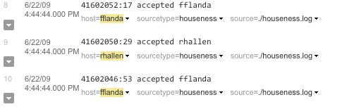
At some point, you might discover that the host value for some of your events is incorrect for some reason. For example, you might be scraping some Web proxy logs into a directory directly on your Splunk Enterprise server and you add that directory as an input without remembering to override the value of the host field, causing all those events to think their original host value is the same as your Splunk Enterprise host.
If something like that happens, here are your options, in order of complexity:
temp_host), set up a CSV lookup to look up the correct host name using the name temp_host, then have the lookup overwrite the original host with the new lookup value (using the OUTPUT option when defining the lookup).
Of these options, the last option will look the nicest if you can't delete and reindex the data, but deleting and reindexing the data will give the best performance.
The source type is one of the default fields that Splunk Enterprise assigns to all incoming data. It tells Splunk Enterprise what kind of data you've got, so that it can format the data intelligently during indexing. And it's a way to categorize your data, so that you can search it easily.
Because Splunk Enterprise uses the source type to decide how to format your data, it's extremely important that you assign the correct source type to your data. That way, the indexed version of the data (the event data) looks the way you expect it to, with appropriate timestamps and event breaks. This will make it a lot easier to search your data later on.
For the most part, it's easy to assign the right source type to your data. Splunk Enterprise comes with a large number of predefined source types. When consuming data, Splunk Enterprise will usually select the correct source type automatically. Sometimes, though, Splunk Enterprise needs your help. If your data is specialized, you might need to manually select a different predefined source type. If your data is unusual, you might need to create a new source type with customized event processing settings. And if your data source contains heterogeneous data, you might need to assign the source type on a per-event (rather than a per-source) basis.
Like any other field, you can also use the source type field to search event data, once the data has been indexed. You'll probably use it a lot in your searches, since the source type is a key way to categorize your data.
Any common data input format can be a source type. Most source types are log formats. For example, some common source types that Splunk Enterprise automatically recognizes include:
Note: For a longer list of source types that Splunk Enterprise automatically recognizes, see "List of pretrained source types" in this manual.
There are two basic types of configuration you can do with source types:
In most cases, Splunk Enterprise determines the best source type for your data and automatically assigns it to incoming events. In some cases, however, you might need to explicitly assign a source type to your data. You usually do this when defining the data input. For details on how to improve source type assignment, read these topics:
Later in this topic, there is a section that explains how Splunk Enterprise assigns source types.
If none of the existing source types fits the needs of your data, you can create a new one.
Splunk's data preview feature provides an easy, UI-based method for adjusting source type settings to fit your data. In essence, it's a visual source type editor. For detailed information, see "Assign the right source type with your data."
You can also create a new source type by directly editing props.conf and adding a source type stanza. To learn how to create a new source type, read "Create source types."
The data preview feature in Splunk Web provides an easy way to view the effect of applying a source type to an input. It lets you preview the resulting events without actually committing them to an index. You can also use data preview to edit timestamp and event breaking settings interactively and then save the modifications as a new source type. For information on how data preview functions as a source type editor, see "Assign the right source type with your data".
sourcetype is the name of the source type search field. You can use the sourcetype field to find similar types of data from any source type. For example, you could search sourcetype=weblogic_stdout to find all of your WebLogic server events, even when WebLogic is logging from more than one domain (or "host," in Splunk terms).
Splunk Enterprise employs a variety of methods to assign source types to event data at index time. As it processes event data, Splunk Enterprise steps through these methods in a defined order of precedence. It starts with hardcoded source type configurations in inputs.conf and props.conf, moves on to rule-based source type association, and then works through methods like automatic source type recognition and automatic source type learning. This range of methods enables you to configure how Splunk Enterprise applies source type values to specific kinds of events, while letting Splunk Enterprise assign source type values to other events automatically.
The following list shows how Splunk Enterprise goes about determining the source type for a data input. Splunk Enterprise starts with the first method and then descends through the others as necessary, until it's able to determine the source type. The list also provides an overview on how you configure source type assignment for each level.
1. Explicit source type specification based on the data input
If Splunk Enterprise finds an explicit source type for the data input, it stops here.
You configure this in inputs.conf or Splunk Web. Here is the inputs.conf syntax for assigning source types to a file input:
[monitor://<path>]
sourcetype=<sourcetype>
You can also assign a source type when defining an input in Splunk Web. For information on doing this for file inputs, see "Use Splunk Web" in this manual. The process is similar for network or other types of inputs.
For more information, see "Specify source type for an input".
2. Explicit source type specification based on the data source
If Splunk Enterprise finds an explicit source type for the particular source, it stops here.
You configure this in props.conf, using this syntax:
[source::<source>]
sourcetype=<sourcetype>
For more information, see "Specify source type for a source".
3. Rule-based source type recognition
Splunk Enterprise looks next for any rules you've created for source types.
You can create source type classification rules in props.conf:
[rule::<rule_name>]
sourcetype=<sourcetype>
MORE_THAN_[0-100] = <regex>
LESS_THAN_[0-100] = <regex>
For information about setting up source type recognition rules, see "Configure rule-based source type recognition".
4. Automatic source type matching
Splunk Enterprise next attempts to use automatic source type recognition to match similar-looking files and assign a source type.
Splunk Enterprise calculates signatures for patterns in the first few thousand lines of any file or network input stream. These signatures identify things like repeating word patterns, punctuation patterns, line length, and so on. When Splunk Enterprise calculates a signature, it compares it to its set of signatures for known, "pretrained" source types. If it identifies a match, it assigns that source type to the data.
See "List of pretrained source types" in this manual for a list of the source types that Splunk Enterprise can recognize out of the box.
5. Delayed rule-based source type association
If Splunk Enterprise hasn't identified a source type by now, it looks for any delayed rules.
This works like rule-based associations (step 3, above). You create a delayedrule:: stanza in props.conf. This is a useful "catch-all" for source types, in case Splunk missed any with intelligent matching (see above).
A good use of delayed rule associations is for generic versions of very specific source types that were defined earlier with rule:: in step 3, above. For example, you could use rule:: to catch event data with specific syslog source types, such as "sendmail syslog" or "cisco syslog" and then have delayedrule:: apply the generic "syslog" source type to the remaining syslog event data.
Here's the syntax:
[delayedrule::$RULE_NAME]
sourcetype=$SOURCETYPE
MORE_THAN_[0-100] = $REGEX
LESS_THAN_[0-100] = $REGEX
For more information about settting up or removing delayed rules for source type recognition, see "Configure rule-based source type recognition".
6. Automatic source type learning
If Splunk Enterprise is unable to assign a source type for the event using the preceding methods, it creates a new source type for the event signature (see step 4, above). Splunk Enterprise stores learned pattern information in sourcetypes.conf.
Splunk Enterprise attempts to assign a source type to your data automatically. You can specify what source type to assign. You can also configure Splunk Enterprise so that it assigns a source type based on either the data input or the data source.
For details on the precedence rules that Splunk Enterprise uses to assign source types to data, read How Splunk assigns source types.
Important: Overrides only work on file and directory monitoring inputs or files you have uploaded. You cannot override the source type on network inputs. Additionally, overrides only affect new data that arrives after you set up the override. To correct the source types of events that have already been indexed, create a tag for the source type instead.
This topic describes how to specify a source type based for data based on its:
You can assign the source type for data coming from a specific input, such as /var/log/. You do this in either Splunk Web or the inputs.conf configuration file.
Note: While assigning source type by input seems like a simple way to handle things, it isn't very granular--when you use it, Splunk Enterprise assigns the same source type to all data from an input, even if some of the data comes from different sources or hosts. To bypass automatic source type assignment in a more targeted manner, you can arrange for Splunk to assign source types based on the source of the data, as described later in this topic.
When you define a data input, you can set a source type value that Splunk Enterprise applies to all incoming data from that input. Splunk Enterprise gives you the option of picking a source type from a list or entering a unique source type value of your own.
To select a source type for an input, change the source type settings for the data input type you want to add. For example, for file inputs:
1. Click Settings in the upper right-hand corner of Splunk Web.
2. In the Data section of the Settings pop-up, click Data Inputs.
3. Click Files & Directories.
4. Click the New button to add an input.
5. In the "Add Data" page, browse or enter the name of the file you want to monitor, then click "Next".
6. In the "Set Sourcetype" page, click the "Sourcetype" drop-down and choose from the list of pretrained source types. Splunk Enterprise updates the page to show how the data looks when it receives the new source type.
7. If you want to make changes to the source type, use the "Event Breaks", "Timestamp", and "Advanced" tabs to modify settings and refresh the data preview. See "The Set Sourcetype page".
8. If you want to save the source type as a different name, click Save As… to open a dialog box to save the new source type. Otherwise, proceed to Step 10.
9. If you chose to save the source type, Splunk Enterprise displays the "Save Sourcetype" dialog. Enter the name, description, category, and app that the source type should apply to. See "Save modifications as a new source type."
10. Click "Next" to set the source type for the data and proceed to the Input settings" page.
Splunk Enterprise now assigns your selected source type to all events it indexes for that input.
When you configure an input in inputs.conf, you can specify a source type for the input. Edit inputs.conf in $SPLUNK_HOME/etc/system/local/ or in your own custom application directory in $SPLUNK_HOME/etc/apps/. For information on configuration files in general, see "About configuration files" in the Admin manual.
To specify a source type, include a sourcetype attribute within the stanza for the input. For example:
[tcp://:9995]
connection_host=dns
sourcetype=log4j
source=tcp:9995
This example sets the source type to "log4j" for any events coming from your TCP input on port 9995.
Warning: Do not put quotes around the attribute value: sourcetype=log4j, not sourcetype="log4j".
Use props.conf to override automated source type matching and explicitly assign a single source type to all data coming from a specific source.
Edit props.conf in $SPLUNK_HOME/etc/system/local/ or in your own custom application directory in $SPLUNK_HOME/etc/apps/. For information on configuration files in general, see "About configuration files".
Important: If you are forwarding data, and you want to assign a source type for a source, you must do this in props.conf on the forwarder. If you do it in props.conf on the receiver, the override does not take effect.
To override source type assignment, add a stanza for your source to props.conf.
In the stanza, identify the source path, using regular expression (regex) syntax for flexibility if necessary. Then specify the source type by including a sourcetype attribute. For example:
[source::.../var/log/anaconda.log(.\d+)?]
sourcetype=anaconda
This example sets the source type to "anaconda" for events from any sources containing the string /var/log/anaconda.log followed by any number of numeric characters.
Important: Your stanza source path regexes (such as [source::.../web/....log]) should be as specific as possible. Avoid using a regex that ends in "...". For example, don't do this:
[source::/home/fflanda/...]
sourcetype=mytype
This is dangerous. It tells Splunk to process any gzip files in /home/fflanda as "mytype" files rather than gzip files.
It would be much better to write:
[source::/home/fflanda/....log(.\d+)?]
sourcetype=mytype
Note: For a primer on regular expression syntax and usage, see Regular-Expressions.info. You can test regexes by using them in searches with the rex search command. Splunk also maintains a list of useful third-party tools for writing and testing regular expressions.
You can use rule-based source type recognition to expand the range of source types that Splunk Enterprise recognizes. In props.conf, you create a rule:: stanza that associates a specific source type with a set of qualifying criteria. When consuming data, Splunk Enterprise assigns the specified source type to file inputs that meet the rule's qualifications.
You can create two kinds of rules in props.conf: rules and delayed rules. The only difference between the two is the point at which Splunk Enterprise checks them during the source typing process. As it processes each set of incoming data, Splunk Enterprise uses several methods to determine source types:
rule:: stanzas defined in props.conf and tries to match source types to the data based on the classification rules specified in those stanzas.
rule:: stanzas, it tries to use automatic source type matching, where it tries to identify patterns similar to source types it has learned in the past.
delayedrule:: stanzas in props.conf and tries to match the data to source types using the rules in those stanzas.
For details on the precedence rules that Splunk Enterprise uses to assign source types to data, read "How Splunk Enterprise assigns source types".
You can configure your system so that rule:: stanzas contain classification rules for specialized source types, while delayedrule:: stanzas contain classification rules for generic source types. That way, Splunk Enterprise applies the generic source types to broad ranges of events that haven't qualified for more specialized source types. For example, you could use rule:: stanzas to catch data with specific syslog source types, such as sendmail_syslog or cisco_syslog, and then configure a delayedrule:: stanza to apply the generic syslog source type to any remaining syslog data.
To set source typing rules, edit props.conf in $SPLUNK_HOME/etc/system/local/ or in your own custom application directory in $SPLUNK_HOME/etc/apps/. For information on configuration files in general, see "About configuration files" in the Admin manual.
Create a rule by adding a rule:: or delayedrule:: stanza to props.conf. Provide a name for the rule in the stanza header, and declare the source type in the body of the stanza. After the source type declaration, list the source type assignment rules. These rules use one or more MORE_THAN and LESS_THAN statements to find patterns in the data that fit given regular expressions by specific percentages.
To create a rule, use this syntax:
[rule::<rule_name>] OR [delayedrule::<rule_name>]
sourcetype=<source_type>
MORE_THAN_[0-99] = <regex>
LESS_THAN_[1-100] = <regex>
You set a numerical value in the MORE_THAN and LESS_THAN attributes, corresponding to the percentage of input lines that must contain the string specified by the regular expression. For example, MORE_THAN_80 means at least 80% of the lines must contain the associated expression. LESS_THAN_20 means that less than 20% of the lines can contain the associated expression.
Note: Despite how the attribute is named, the MORE_THAN_ attribute actually means "more than or equal to". Similarly the LESS_THAN_ attribute means "less than or equal to".
A rule can contain any number of MORE_THAN and/or LESS_THAN conditions. Splunk assigns the rule's source type to a data file only if the data qualifies all the statements in the rule. For example, you could define a rule that assigns a specific source type to a file input only if more than 60% of the lines match one regular expression and less than 20% match another regular expression.
Note: For a primer on regular expression syntax and usage, see Regular-Expressions.info. You can test regexes by using them in searches with the rex search command. Splunk Enterprise also maintains a list of useful third-party tools for writing and testing regular expressions.
# postfix_syslog sourcetype rule
[rule::postfix_syslog]
sourcetype = postfix_syslog
# If 80% of lines match this regex, then it must be this type
MORE_THAN_80=^\w{3} +\d+ \d\d:\d\d:\d\d .* postfix(/\w+)?\[\d+\]:
# breaks text on ascii art and blank lines if more than 10% of lines have
# ascii art or blank lines, and less than 10% have timestamps
[delayedrule::breakable_text]
sourcetype = breakable_text
MORE_THAN_10 = (^(?:---|===|\*\*\*|___|=+=))|^\s*$
LESS_THAN_10 = [: ][012]?[0-9]:[0-5][0-9]
Splunk Enterprise ships with definitions for a large number of source types. These built-in source types are known as "pretrained" source types.
Splunk Enterprise can automatically recognize and assign many of these pretrained source types to incoming data. Splunk Enterprise also includes some pretrained source types that it does not automatically recognize but that you can manually assign via Splunk Web or inputs.conf, using methods described in earlier topics in this chapter, such as "Override automatic source type assignment".
It's a good idea to use a pretrained source type if it matches your data, as Splunk Enterprise already knows how to properly index pretrained source types. However, if your data does not fit any pretrained source types, you can create your own source types, as described in "Create source types". Splunk Enterprise can also index virtually any format of data even without custom properties.
For an introduction to source types, see "Why source types matter".
| Source type name | Origin | Examples |
|---|---|---|
| access_combined | NCSA combined format http web server logs (can be generated by apache or other web servers) | 10.1.1.43 - webdev [08/Aug/2005:13:18:16 -0700] "GET / HTTP/1.0" 200 0442 "-" "check_http/1.10 (nagios-plugins 1.4)"
|
| access_combined_wcookie | NCSA combined format http web server logs (can be generated by apache or other web servers), with cookie field added at end | "66.249.66.102.1124471045570513" 59.92.110.121 - - [19/Aug/2005:10:04:07 -0700] "GET /themes/splunk_com/images/logo_splunk.png HTTP/1.1" 200 994 "http://www.splunk.org/index.php/docs" "Mozilla/5.0 (X11; U; Linux i686; en-US; rv:1.7.8) Gecko/20050524 Fedora/1.0.4-4 Firefox/1.0.4" "61.3.110.148.1124404439914689"
|
| access_common | NCSA common format http web server logs (can be generated by apache or other web servers) | 10.1.1.140 - - [16/May/2005:15:01:52 -0700] "GET /themes/ComBeta/images/bullet.png HTTP/1.1" 404 304
|
| apache_error | Standard Apache web server error log | [Sun Aug 7 12:17:35 2005] [error] [client 10.1.1.015] File does not exist: /home/reba/public_html/images/bullet_image.gif
|
| asterisk_cdr | Standard Asterisk IP PBX call detail record | "","5106435249","1234","default","""James Jesse""<5106435249>","SIP/5249-1ce3","","VoiceMail","u1234","2005-05-26 15:19:25","2005-05-26 15:19:25","2005-05-26 15:19:42",17,17,"ANSWERED","DOCUMENTATION"
|
| asterisk_event | Standard Asterisk event log (management events) | Aug 24 14:08:05 asterisk[14287]: Manager 'randy' logged on from 127.0.0.1
|
| asterisk_messages | Standard Asterisk messages log (errors and warnings) | Aug 24 14:48:27 WARNING[14287]: Channel 'Zap/1-1' sent into invalid extension 's' in context 'default', but no invalid handler
|
| asterisk_queue | Standard Asterisk queue log | 1124909007|NONE|NONE|NONE|CONFIGRELOAD|
|
| cisco_syslog | Standard Cisco syslog produced by all Cisco network devices including PIX firewalls, routers, ACS, etc., usually via remote syslog to a central log host | Sep 14 10:51:11 stage-test.splunk.com Aug 24 2005 00:08:49: %PIX-2-106001: Inbound TCP connection denied from IP_addr/port to IP_addr/port flags TCP_flags on interface int_name Inbound TCP connection denied from 144.1.10.222/9876 to 10.0.253.252/6161 flags SYN on interface outside
|
| db2_diag | Standard IBM DB2 database administrative and error log | 2005-07-01-14.08.15.304000-420 I27231H328 LEVEL: Event PID : 2120 TID : 4760 PROC : db2fmp.exe INSTANCE: DB2 NODE : 000 FUNCTION: DB2 UDB, Automatic Table Maintenance, db2HmonEvalStats, probe:900 STOP : Automatic Runstats: evaluation has finished on database TRADEDB
|
| exim_main | Exim MTA mainlog | 2005-08-19 09:02:43 1E69KN-0001u6-8E => support-notifications@splunk.com R=send_to_relay T=remote_smtp H=mail.int.splunk.com [10.2.1.10]
|
| exim_reject | Exim reject log | 2005-08-08 12:24:57 SMTP protocol violation: synchronization error (input sent without waiting for greeting): rejected connection from H=gate.int.splunk.com [10.2.1.254]
|
| linux_messages_syslog | Standard linux syslog (/var/log/messages on most platforms) | Aug 19 10:04:28 db1 sshd(pam_unix)[15979]: session opened for user root by (uid=0)
|
| linux_secure | Linux securelog | Aug 18 16:19:27 db1 sshd[29330]: Accepted publickey for root from ::ffff:10.2.1.5 port 40892 ssh2
|
| log4j | Log4j standard output produced by any J2EE server using log4j | 2005-03-07 16:44:03,110 53223013 [PoolThread-0] INFO [STDOUT] got some property...
|
| mysqld_error | Standard mysql error log | 050818 16:19:29 InnoDB: Started; log sequence number 0 43644 /usr/libexec/mysqld: ready for connections. Version: '4.1.10a-log' socket: '/var/lib/mysql/mysql.sock' port: 3306 Source distribution
|
| mysqld | Standard mysql query log; also matches mysql's binary log following conversion to text | 53 Query SELECT xar_dd_itemid, xar_dd_propid, xar_dd_value FROM xar_dynamic_data WHERE xar_dd_propid IN (27) AND xar_dd_itemid = 2
|
| postfix_syslog | Standard Postfix MTA log reported via the Unix/Linux syslog facility | Mar 1 00:01:43 avas postfix/smtpd[1822]: 0141A61A83: client=host76-117.pool80180.interbusiness.it[80.180.117.76]
|
| sendmail_syslog | Standard Sendmail MTA log reported via the Unix/Linux syslog facility | Aug 6 04:03:32 nmrjl00 sendmail[5200]: q64F01Vr001110: to=root, ctladdr=root (0/0), delay=00:00:01, xdelay=00:00:00, mailer=relay, min=00026, relay=[101.0.0.1] [101.0.0.1], dsn=2.0.0, stat=Sent (v00F3HmX004301 Message accepted for delivery)
|
| sugarcrm_log4php | Standard Sugarcrm activity log reported using the log4php utility | Fri Aug 5 12:39:55 2005,244 [28666] FATAL layout_utils - Unable to load the application list language file for the selected language(en_us) or the default language(en_us)
|
| weblogic_stdout | Weblogic server log in the standard native BEA format | ####<Sep 26, 2005 7:27:24 PM MDT> <Warning> <WebLogicServer> <bea03> <asiAdminServer> <ListenThread.Default> <<WLS Kernel>> <> <BEA-000372> <HostName: 0.0.0.0, maps to multiple IP addresses:169.254.25.129,169.254.193.219>
|
| websphere_activity | Websphere activity log, also often referred to as the service log | -------------------------------------- ComponentId: Application Server ProcessId: 2580 ThreadId: 0000001c ThreadName: Non-deferrable Alarm : 3 SourceId: com.ibm.ws.channel.framework.impl. WSChannelFrameworkImpl ClassName: MethodName: Manufacturer: IBM Product: WebSphere Version: Platform 6.0 [BASE 6.0.1.0 o0510.18] ServerName: nd6Cell01\was1Node01\TradeServer1 TimeStamp: 2005-07-01 13:04:55.187000000 UnitOfWork: Severity: 3 Category: AUDIT PrimaryMessage: CHFW0020I: The Transport Channel Service has stopped the Chain labeled SOAPAcceptorChain2 ExtendedMessage: -------------------------------------------
|
| websphere_core | Corefile export from Websphere | NULL----------------------------------------------- 0SECTION TITLE subcomponent dump routine NULL=============================== 1TISIGINFO signal 0 received 1TIDATETIME Date: 2005/08/02 at 10:19:24 1TIFILENAME Javacore filename: /kmbcc/javacore95014.1122945564.txt NULL ----------------------------------------------- 0SECTION XHPI subcomponent dump routine NULL ============================== 1XHTIME Tue Aug 2 10:19:24 20051XHSIGRECV SIGNONE received at 0x0 in <unknown>. Processing terminated. 1XHFULLVERSION J2RE 1.3.1 IBM AIX build ca131-20031105 NULL
|
| websphere_trlog_syserr | Standard Websphere system error log in IBM's native tr log format | [7/1/05 13:41:00:516 PDT] 000003ae SystemErr R at com.ibm.ws.http.channel. inbound.impl.HttpICLReadCallback.complete (HttpICLReadCallback.java(Compiled Code)) (truncated)
|
| websphere_trlog_sysout | Standard Websphere system out log in IBM's native trlog format; similar to the log4j server log for Resin and Jboss, sample format as the system error log but containing lower severity and informational events | [7/1/05 13:44:28:172 PDT] 0000082d SystemOut O Fri Jul 01 13:44:28 PDT 2005 TradeStreamerMDB: 100 Trade stock prices updated: Current Statistics Total update Quote Price message count = 4400 Time to receive stock update alerts messages (in seconds): min: -0.013 max: 527.347 avg: 1.0365270454545454 The current price update is: Update Stock price for s:393 old price = 15.47 new price = 21.50
|
| windows_snare_syslog | Standard windows event log reported through a 3rd party Intersect Alliance Snare agent to remote syslog on a Unix or Linuxserver | 0050818050818 Sep 14 10:49:46 stage-test.splunk.com Windows_Host MSWinEventLog 0 Security 3030 Day Aug 24 00:16:29 2005 560 Security admin4 User Success Audit Test_Host Object Open: Object Server: Security Object Type: File Object Name: C:\Directory\secrets1.doc New Handle ID: 1220 Operation ID: {0,117792} Process ID: 924 Primary User Name: admin4 Primary Domain: FLAME Primary Logon ID: (0x0,0x8F9F) Client User Name: - Client Domain: - Client Logon ID: - Accesses SYNCHRONIZE ReadData (or ListDirectory) Privileges -Sep
|
| Source type name | Origin | Examples |
|---|---|---|
| known_binary | The filename matches a pattern that is generally known to be a binary file, not a log file | mp3 files, images, .rdf, .dat, etc. This is intended to catch obvious non-text files |
These are all the pretrained source types, including both those that are automatically recognized and those that are not.
| Category | Source type(s) |
|---|---|
| Application servers | log4j, log4php, weblogic_stdout, websphere_activity, websphere_core, websphere_trlog, catalina, ruby_on_rails |
| Databases | db2_diag, mysqld, mysqld_error, mysqld_bin, mysqld_slow |
| exim_main, exim_reject, postfix_syslog, sendmail_syslog, procmail | |
| Operating systems | linux_messages_syslog, linux_secure, linux_audit, linux_bootlog, anaconda, anaconda_syslog, osx_asl, osx_crashreporter, osx_crash_log, osx_install, osx_secure, osx_daily, osx_weekly, osx_monthly, osx_window_server, windows_snare_syslog, dmesg, ftp, ssl_error, syslog, sar, rpmpkgs |
| Network | novell_groupwise, tcp |
| Printers | cups_access, cups_error, spooler |
| Routers and firewalls | cisco_cdr, cisco:asa, cisco_syslog, clavister |
| VoIP | asterisk_cdr, asterisk_event, asterisk_messages, asterisk_queue |
| Webservers | access_combined, access_combined_wcookie, access_common, apache_error, iis†|
| Splunk | splunk_com_php_error, splunkd, splunkd_crash_log, splunkd_misc, splunkd_stderr, splunk-blocksignature, splunk_directory_monitor, splunk_directory_monitor_misc, splunk_search_history, splunkd_remote_searches, splunkd_access, splunkd_ui_access, splunk_web_access, splunk_web_service, splunkd_conf†, django_access, django_service, django_error, splunk_help, mongod |
| Non-Log files | csv†, psv†, tsv†, _json†, json_no_timestamp, fs_notification, exchange†, generic_single_line |
| Miscellaneous / Other | snort, splunk_disk_objects†, splunk_resource_usage†, kvstore†|
†These source types use the INDEXED_EXTRACTIONS attribute, which sets other attributes in props.conf to specific defaults, and requires special handling to forward to another Splunk Enterprise instance. See "Forward data extracted from structured data files".
To find out what configuration information Splunk Enterprise uses to index a given source type, you can invoke the btool utility to list out the properties. For more information on using btool, refer to "Use btool to troubleshoot configurations" in the Troubleshooting manual.
The following example shows how to list out the configuration for the tcp source type:
$ ./splunk btool props list tcp
[tcp]
BREAK_ONLY_BEFORE = (=\+)+
BREAK_ONLY_BEFORE_DATE = True
CHARSET = UTF-8
DATETIME_CONFIG = /etc/datetime.xml
KV_MODE = none
LEARN_SOURCETYPE = true
MAX_DAYS_AGO = 2000
MAX_DAYS_HENCE = 2
MAX_DIFF_SECS_AGO = 3600
MAX_DIFF_SECS_HENCE = 604800
MAX_EVENTS = 256
MAX_TIMESTAMP_LOOKAHEAD = 128
MUST_BREAK_AFTER =
MUST_NOT_BREAK_AFTER =
MUST_NOT_BREAK_BEFORE =
REPORT-tcp = tcpdump-endpoints, colon-kv
SEGMENTATION = inner
SEGMENTATION-all = full
SEGMENTATION-inner = inner
SEGMENTATION-outer = foo
SEGMENTATION-raw = none
SEGMENTATION-standard = standard
SHOULD_LINEMERGE = True
TRANSFORMS =
TRANSFORMS-baindex = banner-index
TRANSFORMS-dlindex = download-index
TRUNCATE = 10000
maxDist = 100
pulldown_type = true
This topic shows you how to configure Splunk Enterprise to override source types on a per-event basis. You do this at parse-time, after Splunk Enterprise has made its initial assignment as described in "How Splunk Enterprise assigns source types".
To configure per-event overrides, you use transforms.conf in tandem with props.conf.
Note: Since this type of override occurs at parse-time, it works only on an indexer or heavy forwarder, not on a universal forwarder. See "Configuration parameters and the data pipeline" in the Admin manual for more information on what configurations are available at different points in the input/parsing/indexing process.
For information about configuring basic (not per-event) source type overrides for event data that comes from specific inputs or that has a particular source, see "Override automatic source type assignment" in this manual.
To configure per-event overrides, you need to create two stanzas, one in transforms.conf and another in props.conf. Edit these files in $SPLUNK_HOME/etc/system/local/ or in your own custom application directory in $SPLUNK_HOME/etc/apps/. For more information about configuration files in general, see "About configuration files" in the Admin manual.
Create a stanza in transforms.conf that follows this syntax:
[<unique_stanza_name>]
REGEX = <your_regex>
FORMAT = sourcetype::<your_custom_sourcetype_value>
DEST_KEY = MetaData:Sourcetype
Note the following:
<unique_stanza_name> should reflect that it involves a source type. You'll use this name later in the props.conf stanza.
<your_regex> is a regular expression that identifies the events that you want to apply a custom source type to (such as events carrying a particular hostname or other field value).
<your_custom_sourcetype_value> is the source type that you want to apply to the regex-selected events.
Note: For a primer on regular expression syntax and usage, see Regular-Expressions.info. You can test regexes by using them in searches with the rex search command. Splunk also maintains a list of useful third-party tools for writing and testing regular expressions.
Next, create a stanza in props.conf that references the transforms.conf stanza:
[<spec>]
TRANSFORMS-<class> = <unique_stanza_name>
Note the following:
<spec> can be:
<sourcetype>, the source type of an event.
host::<host>, where <host> is the host value for an event.
source::<source>, where <source> is the source value for an event.
<class> is any unique identifier that you want to give to your transform.
<unique_stanza_name> is the name of the stanza you created in transforms.conf.
Let's say that you have a shared UDP input, "UDP514". Your Splunk Enterprise instance indexes a wide range of data from a number of hosts through this input. You've found that you need to apply a particular source type called "my_log" to data originating from three specific hosts (host1, host2, and host3) reaching Splunk through UDP514.
To start, you can use the regex that Splunk typically uses to extract the host field for syslog events. You can find it in system/default/transforms.conf:
[syslog-host]
REGEX = :\d\d\s+(?:\d+\s+|(?:user|daemon|local.?)\.\w+\s+)*\[?(\w[\w\.\-]{2,})\]?\s
FORMAT = host::$1
DEST_KEY = MetaData:Host
You can easily modify this regex to only match events from the hostnames you want (in this example, host1, host2, and host3):
REGEX = :\d\d\s+(?:\d+\s+|(?:user|daemon|local.?)\.\w+\s+)*\[?(host1|host2|host3)[\w\.\-]*\]?\s
Now you can use the modified regex in a transform that applies the my_log source type to events that come from those three hosts:
[set_sourcetype_my_log_for_some_hosts]
REGEX = :\d\d\s+(?:\d+\s+|(?:user|daemon|local.?)\.\w+\s+)*\[?(host1|host2|host3)[\w\.\-]*\]?\s
FORMAT = sourcetype::my_log
DEST_KEY = MetaData:Sourcetype
Then you can specify that transform in a props.conf stanza that identifies the specific input for the events:
[source::udp:514]
TRANSFORMS-changesourcetype = set_sourcetype_my_log_for_some_hosts
You can create new source types in two ways:
props.conf configuration file directly
The "Set Sourcetype" page in Splunk Web provides an easy way to view the effects of applying a source type to your data and to make adjustments to the source type settings as necessary. You can save your changes as a new source type, which you can then assign to data inputs.
The page lets you make the most common types of adjustments to timestamps and event breaks. For other modifications, it lets you edit the underlying props.conf file directly. As you change settings, you can immediately see the changes to the event data.
The page appears only when you specify or upload a single file. It does not appear when you specify any other type of source.
To learn more about the page, see "The "Set Sourcetype" page" in this manual.
You can create a new source type by editing props.conf and adding a new stanza. For detailed information on props.conf, read the props.conf specification in the Admin manual. For information on configuration files in general, see "About configuration files" in the Admin manual.
The following is an example of an entry in props.conf. This entry defines the access_combined source type and then assigns that source type to files that match the specified source. You can specify multiple files or directories in a source by using a regular expression.
[access_combined]
pulldown_type = true
maxDist = 28
MAX_TIMESTAMP_LOOKAHEAD = 128
REPORT-access = access-extractions
SHOULD_LINEMERGE = False
TIME_PREFIX = \[
category = Web
description = National Center for Supercomputing Applications (NCSA) combined fo
rmat HTTP web server logs (can be generated by apache or other web servers)
[source::/opt/weblogs/apache.log]
sourcetype = iis
To edit props.conf:
1. On the host where you want to create a source type, make a copy of $SPLUNK_HOME/etc/system/default/props.conf and save it in $SPLUNK_HOME/etc/system/local.
Note: You might need to create the local directory. If you use an app, go to the app directory in $SPLUNK_HOME/etc/apps.
2. Using a text editor, open the props.conf file in $SPLUNK_HOME/etc/system/local.
3. Add a stanza for the new source type and specify any attributes that Splunk Enterprise should use when handling the source type.
[my_sourcetype]
attribute1 = value
attribute2 = value
Note: See the props.conf specification for a list of attributes and how they should be used.
4. Optionally, if you know the name of the file (or files) that Splunk Enterprise should apply the source type to, you can specify them with the [source::<source>] stanza:
[my_sourcetype]
attribute1 = value
attribute2 = value
[source::.../my/logfile.log]
sourcetype = my_sourcetype
5. Save the props.conf file.
6. Restart Splunk Enterprise. The new source types take effect after the restart completes.
When you create a source type, there are some key attributes that you should specify:
props.conf to specify event breaks, see "Configure event linebreaking".
props.conf to specify timestamps, see "Configure timestamp recognition", as well as other topics in the "Configure timestamps" chapter of this manual.
There are also a number of additional settings that you can configure. See the props.conf specification for more information.
You might want to rename a source type in certain situations. For example, say you accidentally assigned an input to the wrong source type. Or you realize that two differently named source types should be handled exactly the same at search time.
You can use the rename attribute in props.conf to assign events to a new source type at search time. In case you ever need to search on it, Splunk Enterprise moves the original source type to a separate field, _sourcetype.
Note: The indexed events still contain the original source type name. The renaming occurs only at search time. Also, renaming the source type does only that; it does not fix any problems with the indexed format of your event data caused by assigning the wrong source type in the first place.
To rename the source type, add the rename attribute to your source type stanza:
rename = <string>
Note: A source type name can only contain the letters a though z, the numerals 0 through 9, and the _ (underscore) character.
For example, say you're using the source type "cheese_shop" for your application server. Then, accidentally, you index a pile of data as source type "whoops". You can rename "whoops" to "cheese_shop" with this props.conf stanza:
[whoops]
rename=cheese_shop
Now, a search on "cheese_shop" will bring up all the "whoops" events as well as any events that had a "cheese_shop" source type from the start:
sourcetype=cheese_shop
If you ever need to single out the "whoops" events, you can use _sourcetype in your search:
_sourcetype=whoops
Important: Data from a renamed source type will only use the search-time configuration for the target source type ("cheese_shop" in this example). Any field extractions for the original source type ("whoops" in the example) will be ignored.
Segmentation is what Splunk Enterprise uses to break events up into searchable segments at index time, and again at search time.
Segments can be classified as major or minor. Minor segments are breaks within major segments. For example, the IP address 192.0.2.223 is a major segment. But this major segment can be broken down into minor segments, such as "192", as well as groups of minor segments like "192.0.2".
You can define how detailed the event segmentation should be. This is important because index-time segmentation affects indexing and search speed, storage size, and the ability to use typeahead functionality (where Splunk Web provides items that match text you type into the Search bar). Search-time segmentation, on the other hand, affects search speed and the ability to create searches by selecting items from the results displayed in Splunk Web.
For more information about the distinction between "index time" and "search time," see "Index time versus search time" in the Managing Indexers and Clusters manual.
You can assign segmentation to specific categories of events in props.conf, as described in "Set the segmentation for event data".
There are three main types, or levels, of segmentation, configurable at index or search time:
192.0.2.223 goes through inner segmentation, it is broken down into 192, 0, 2, and 223. Setting inner segmentation at index time leads to faster indexing and searching and reduced disk usage. However, it restricts the typeahead functionality, so that a user can only type ahead at the minor segment level.
192.0.2.223 gets indexed as 192.0.2.223, which means that you cannot search on individual pieces of the phrase. You can still use wildcards, however, to search for pieces of a phrase. For example, you can search for 192.0* and you will get any events that have IP addresses that start with 192.0. Also, outer segmentation disables the ability to click on different segments of search results, such as the 192.0 segment of the same IP address. Outer segmentation tends to be marginally more efficient than full segmentation, while inner segmentation tends to be much more efficient.
192.0 and 192.0.2. This is the least efficient indexing option, but it provides the most versatility in terms of searching.
The segmenters.conf file, located in $SPLUNK_HOME/etc/system/default, defines all available segmentation types. By default, index-time segmentation is set to the indexing type, which is a combination of inner and outer segmentation. Search-time segmentation is set to full segmentation.
The most space-efficient segmentation setting is to disable segmentation completely. This has significant implications for search, however. By setting Splunk Enterprise to index with no segmentation, you restrict searches to indexed fields, such as time, source, host, and source type. Searches for keywords will return no results. You must pipe your searches through the search command to further restrict results. Use this setting only if you do not need any advanced search capability.
segmenters.conf defines segmentation types. You can define custom segmentation types, if necessary.
For information on the types of segmentation available by default, look at the segmenters.conf file in $SPLUNK_HOME/etc/system/default.
Important: Do not modify the default file. If you want to make changes to the existing segmentation stanzas or create new ones altogether, you can copy the default file to $SPLUNK_HOME/etc/system/local/ or to a custom app directory in $SPLUNK_HOME/etc/apps/. For information on configuration files and directory locations, see "About configuration files".
You can configure index-time and search-time segmentation to apply to specific hosts, sources, or source types. If you run searches that involve a particular source type on a regular basis, you could use this capability to improve the performance of those searches. Similarly, if you typically index a large number of syslog events, you could use this feature to help decrease the overall disk space that those events take up.
For details about how to apply segmentation types to specific event categories, see "Set the segmentation for event data".
By default, Splunk Enterprise segments events during indexing to allow for the most flexible searching. There are numerous types of segmentation available, and you can create others if necessary. The type of segmentation that you employ affects indexing speed, search speed, and the amount of disk space the indexes occupy. To learn more about segmentation and the trade-offs between the various types of segmentation, refer to "About segmentation".
Splunk Enterprise can also segment events at search time. You can set search-time segmentation in Splunk Web, as described in "Set search-time segmentation in Splunk Web".
If you know how you want to search for or process events from a specific host, source, or source type, you can configure index-time segmentation for that specific type of event. You can also configure search-time segmentation options for specific types of events.
Specify segmentation for events of particular hosts, sources, or source types by assigning segmentation types to the appropriate stanzas in props.conf. In the stanzas, you assign segmentation types, or "rules", that have been defined in segmenters.conf. These can either be predefined types (such as inner, outer, or full), or custom types that you've defined. For more information on defining custom types, read "Configure segmentation types".
The attribute you configure in props.conf to use these types depends on whether you're configuring index-time or search-time segmentation:
SEGMENTATION attribute.
SEGMENTATION-<segment selection> attribute.
You can define either one of the attributes or both together in the stanza.
Add your stanza to $SPLUNK_HOME/etc/system/local/props.conf.
The SEGMENTATION attribute determines the segmentation type used at index time. Here's the syntax:
[<spec>]
SEGMENTATION = <seg_rule>
[<spec>] can be:
<sourcetype>: A source type in your event data.
host::<host>: A host value in your event data.
source::<source>: A source of your event data.
SEGMENTATION = <seg_rule>
[<spec>] events.
<seg_rule>
segmenters.conf
inner, outer, none, and full, but the default file contains other predefined segmentation rules as well.
$SPLUNK_HOME/etc/system/local/segmenters.conf, as described in "Configure segmentation types".
The SEGMENTATION-<segment_selection> attribute helps determine the segmentation type used at search time. Here's the syntax:
[<spec>]
SEGMENTATION-<segment_selection> = <seg_rule>
[<spec>] can be:
<sourcetype>: A source type in your event data.
host::<host>: A host value in your event data.
source::<source>: A source of your event data.
SEGMENTATION-<segment_selection> = <seg_rule>
[<spec>] events.
<segment_selection> can be one of the following: full, inner, outer, or raw.
<seg_rule>, a user can later specify the option when looking at search results to set search-time segmentation, as described in "Set search-time segmentation in Splunk Web".
<seg_rule>
segmenters.conf
inner, outer, none, and full, but the default file contains other predefined segmentation rules as well.
$SPLUNK_HOME/etc/system/local/segmenters.conf, as described in "Configure segmentation types".
This example sets both index-time and search-time segmentation rules for syslog events.
Add the following to the [syslog] source type stanza in props.conf:
[syslog]
SEGMENTATION = inner
SEGMENTATION-full= inner
This stanza changes the index-time segmentation for all events with a syslog source type to inner segmentation. It also causes the full radio button in Splunk Web to invoke inner segmentation for those same events.
Note: You must restart Splunk Enterprise to apply changes to search-time segmentation. You must re-index your data to apply index-time segmentation changes to existing data.
Splunk Web allows you to set segmentation for search results. While this has nothing to do with index-time segmentation, search-time segmentation in Splunk Web affects browser interaction and can speed up search results.
To set search-result segmentation:
1. Perform a search. Look at the results.
2. Click Options... above the returned set of events.
3. In the Event Segmentation dropdown box, choose from the available options: full, inner, outer, or raw. The default is "full".
You can configure the meaning of these dropdown options, as described in "Set the segmentation for event data".
Before adding new inputs to your production index, it is best to test them out. Add the inputs to a test index. Once you've verified that you're receiving the right data inputs and that the resulting events are in a usable form, you can point the inputs to your default "main" index. You can continue to test new inputs this way over time.
If you find that the inputs you started with are not the ones you want, or that the indexed events don't appear the way you need them to, you can keep working with the test index until you get results you like. When things start looking good, you can edit the inputs to point to your main index instead.
You can preview how Splunk Enterprise will index your data into a test index. During preview, you can adjust some event processing settings interactively. See "The "Set Sourcetype" page" for details.
To learn how to create and use custom indexes, read "Set up multiple indexes" in the Managing Indexers and Clusters manual. There are a few basic steps, described in detail in that topic:
1. Create the test index, using Splunk Web or the CLI or by editing indexes.conf directly. See "Set up multiple indexes" for details.
2. When configuring the data inputs, route events to the test index. You can usually do this in Splunk Web. For each input:
a. When configuring the input from the Add data page, check the More settings option. It reveals several new fields, including one called Index.
b. In the Index dropdown box, select your test index. All events for that data input will now go to that index.
c. Repeat this process for each data input that you want to send to your test index.
You can also specify an index when configuring an input in inputs.conf, as described here.
3. When you search, specify the test index in your search command. (By default, Splunk Enterprise searches on the "main" index.) Use the index= command:
index=test_indexNote : When searching a test index for events coming in from your newly created input, Splunk recommends that you use the Real-time > All time(real-time) time range for the fields sidebar. The resulting real-time search will show all events being written to that index regardless of the value of their extracted time stamp. This is particularly useful if you are indexing historical data into your index that a search for "Last hour" or "Real-time > 30 minute window" would not show.
If you want to clean out your test index and start over again, use the CLI clean command, described here.
Once you're satisfied with the results and are ready to start indexing for real, you'll want to edit your data inputs so that they point to the default, "main" index, instead of the test index. This is a simple process, just the reverse of the steps you took to use the test index in the first place. For each data input that you've already set up:
1. Go back to the place where you initially configured the input. For example, if you configured the input from the Add data page in Splunk Web, return to the configuration screen for that input:
a. Select System > System configurations > Data inputs.
b. Select the input's data type to see a list of all configured inputs of that type.
c. Select the specific data input that you want to edit. This will take you to a screen where you can edit it.
d. Select the Display advanced settings option. Go to the field named Index.
e. In the Index dropdown box, select the main index. All events for that data input will now go to that index.
If you instead used inputs.conf to configure an input, you can change the index directly in that file, as described here.
2. Now when you search, you no longer need to specify an index in your search command. By default, Splunk Enterprise searches on the "main" index.
Persistent queuing lets you store data in an input queue to disk. This can help prevent data loss if the forwarder or indexer gets backed up.
By default, forwarders and indexers have an in-memory input queue of 500KB. If the input stream runs at a faster rate than the forwarder or indexer can process, to a point where the queue is maxed out, undesired consequences occur. In the case of UDP, data drops off the queue and gets lost. For other input types, the application generating the data gets backed up.
By implementing persistent queues, you can help prevent this from happening. With persistent queuing, once the in-memory queue is full, the forwarder or indexer writes the input stream to files on disk. It then processes data from the queues (in-memory and disk) until it reaches the point when it can again start processing directly from the data stream.
Important: Persistent queues help prevent data loss if Splunk Enterprise gets backed up. They are not a panacea, however. You can still lose data if Splunk Enterprise crashes. For example, Splunk holds some input data the in-memory queue, as well as in the persistent queue files. The in-memory data can get lost if a crash occurs. Similarly, data that is in the parsing or indexing pipeline but that has not yet been written to disk can get lost in the event of a crash.
Note: In Splunk Enterprise version 4.2 and later, the persistent queue capability has been re-implemented in a much improved fashion. It is now a feature of data inputs and is therefore configured in inputs.conf. It is not related in any way to the previous, deprecated persistent queue capability, which was configured through outputs.conf.
Persistent queuing is available for certain types of inputs, but not all. Generally speaking, it is available for inputs of an ephemeral nature, such as network inputs, but not for inputs that have their own form of persistence, such as file monitoring.
Persistent queues are available for these input types:
Persistent queues are not available for these input types:
Use the inputs.conf file to configure a persistent queue.
Inputs do not share queues. You configure a persistent queue in the stanza for the specific input.
To create the persistent queue, specify these two attributes within the particular input's stanza:
persistentQueueSize = <integer>(KB|MB|GB|TB)
* Max size of the persistent queue file on disk.
* Defaults to 0 (no persistent queue).
Here's an example of specifying a persistent queue for a tcp input:
[tcp://9994]
persistentQueueSize=100MB
The persistent queue has a hardcoded location, which varies according to the input type.
For network inputs, the persistent queue is located here:
$SPLUNK_HOME/var/run/splunk/[tcpin|udpin]/pq__<port>
Note: There are two underscores in the file name: pq__<port>, not pq_<port>.
For example:
$SPLUNK_HOME/var/run/splunk/tcpin/pq__2012
$SPLUNK_HOME/var/run/splunk/udpin/pq__2012
For FIFO inputs, the persistent queue resides under $SPLUNK_HOME/var/run/splunk/fifoin/<encoded path>.
For scripted inputs, it resides under $SPLUNK_HOME/var/run/splunk/exec/<encoded path>. The FIFO/scripted input stanza in inputs.conf derives the <encoded path>.
When you add an input to Splunk Enterprise, that input gets added relative to the app you are in. Some apps, like the *nix and Windows apps, write input data to a specific index (in the case of *nix and Windows, that is the 'os' index). If you are not finding data that you are certain is in Splunk Enterprise, be sure that you are looking at the right index. You might want to add the 'os' index to the list of default indexes for the role you are using. For more information about roles, refer to the topic about roles in the Securing Splunk Enterprise manual. For more information about troubleshooting data input issues, read the rest of this topic or see "I can't find my data!" in the Troubleshooting Manual.
Note: When you add inputs by editing inputs.conf, Splunk Enterprise might not immediately recognize them. Splunk Enterprise looks for inputs every 24 hours, starting from the time it was last restarted. This means that if you add a new stanza to monitor a directory or file, it could take up to 24 hours for Splunk Enterprise to start indexing the contents of that directory or file. To ensure that your input is immediately recognized and indexed, add the input through Splunk Web or by using the add command in the CLI.
You can use the FileStatus Representational State Transfer (REST) endpoint to get the status of your tailed files. For example:
curl https://serverhost:8089/services/admin/inputstatus/TailingProcessor:FileStatus
You can also monitor the fishbucket.
The fishbucket is a subdirectory within the Splunk Enterprise directory that keeps a record about each file input. The fishbucket keeps track of how far into a file that Splunk Enterprise has read, so that if you stop and restart splunkd, it knows where in each file input to resume reading. The fishbucket is at $SPLUNK_DB/fishbucket/splunk_private_db.
To monitor the fishbucket, use the REST endpoint. Review the REST API Reference manual for additional information.
For a variety of information on dealing with monitor input issues, read "Troubleshooting Monitor Inputs" in the Community Wiki.
Make sure the forwarder is functioning properly and is visible to the indexer. You can use the Deployment Monitor app to troubleshoot Splunk topologies and get to the root of any forwarder issues. Read the Deploy and Use Splunk Deployment Monitor App manual for details.
Set up inputs on a forwarder the same way you set them up on a Splunk Enterprise indexer. The only difference is that the forwarder does not include Splunk Web, so you must configure inputs with either the CLI or inputs.conf. Before setting up the inputs, you need to deploy and configure the forwarder, as this recipe describes.
You can use Splunk forwarders to send data to indexers, called receivers. This is the preferred way to get remote data into an indexer.
To use forwarders, specifically universal forwarders, for getting remote data, you need to set up a forwarder-receiver topology, as well as configure the data inputs:
1. Install Splunk Enterprise instances as receivers. See the Installation manual.
2. Use Splunk Web or the CLI to enable receiving on those instances. See "Enable a receiver" in the Forwarding Data manual.
3. Set up one of the receiving Splunk Enterprise instances as a deployment server. See "Plan a deployment" in the Updating Splunk Enterprise Instances manual.
4. Deploy at least one app to the deployment server by placing the app into the $SPLUNK_HOME/etc/deployment_apps directory. See "Create deployment apps" in the Updating Splunk Enterprise Instances manual.
5. Install, configure, and deploy the forwarders. During configuration:
Note: Depending on your forwarding needs, there are a number of best practice deployment scenarios. See "Universal forwarder deployment overview" in the Forwarding Data manual. Some of these scenarios allow you to configure the forwarder during the installation process.
6. Use Forwarder Management to deploy data input configurations to each universal forwarder. See "Forward Data" in this manual.
7. Test the results to confirm that forwarding, along with any configured behaviors like load balancing or filtering, is occurring as expected. Go to the receiver to search the resulting data.
For more information on forwarders, see the Forwarding Data manual, starting with "About forwarding and receiving". Also see "Use forwarders to get data in" in this manual.
Splunk Enterprise can monitor files and directories for events. If your system generates it, Splunk Enterprise can index, search, report and alert on it.
To get data from files and directories into Splunk Enterprise:
You add an input from the Add New page in Splunk Web. You can get there by two routes:
Via Splunk Settings:
1. Click Settings in the upper right-hand corner of Splunk Web.
2. In the Data section of the Settings pop-up, click Data Inputs.
3. Click Files & Directories.
4. Click the New button to add an input.
Via Splunk Home:
1. Click the Add Data link in Splunk Home.
2. Click Upload to upload a file, Monitor to monitor a file, or Forward to forward a file.
Note: Forwarding a file requires additional setup. See "Forward data" in this manual.
1. To add a file or directory input, click Files & Directories.
2. In the File or Directory field, specify the full path to the file or directory.
To monitor a shared network drive, enter the following: <myhost>/<mypath> (or \\<myhost>\<mypath> on Windows). Make sure Splunk Enterprise has read access to the mounted drive, as well as to the files you wish to monitor.
3. Choose how you want Splunk Enterprise to monitor the file:
4. Click the green Next button.
When you add a new file input, Splunk Enterprise lets you set the source type of your data and preview how it will look once it has been indexed. This lets you ensure that the data has been formatted properly and make any necessary adjustments.
If you choose to skip data preview, Splunk Web takes you to the Input Settings page.
Note: Splunk Enterprise cannot show a preview of directories or archived files.
The Input Settings page lets you specify application context, default host value, and index. All of these parameters are optional.
1. Select the appropriate Application context for this input.
2. Set the Host name value. You have several choices for this setting. Learn more about setting the host value in "About hosts".
3. Set the Index that Splunk Enterprise should send data to for this input. Leave the value as "default", unless you have defined multiple indexes and want to use one of those instead. In addition to indexes for user data, Splunk Enterprise has a number of utility indexes, which also appear in this dropdown box.
4. Click the green Review button.
After specifying all your input settings, you can review your selections. Splunk Enterprise lists all options you selected, including but not limited to the type of monitor, the source, the source type, the application context, and the index.
Review the settings. If they do not match what you want, click the white < button in the banner to go back to the previous step in the wizard. Otherwise, click the green Submit button.
Splunk Enterprise then loads the "Success" page and begins indexing the specified file or directory.
For more information on getting data from files and directories, see "Monitor files and directories" in this manual.
The easiest way to get data from remote machines into Splunk Enterprise is with the universal forwarder. You set up the forwarder on the machine that generates the data and then point the forwarder at the Splunk Enterprise indexer. The forwarder gets the data and forwards the events to the indexer, which then processes and stores them and makes them available for searching.
There are two steps:
1. Set up the forwarder on the remote machine and point it at the indexer. See this recipe: "Forwarders".
2. Set up the forwarder inputs so that they monitor the data. This process is the same as if the data was on a Splunk indexer. However, the forwarder does not have Splunk Web, so you must set up the inputs either with the CLI or by editing inputs.conf directly.
Splunk Enterprise can listen on a TCP or UDP port for data coming from the syslog service on one or more machines. You can get syslog data from these hosts for easy searching, reporting and alerting.
To get syslog data over TCP or UDP, configure Splunk Enterprise to listen on a network port for incoming syslog data:
Add a network input from the Add Data page in Splunk Web. See "How do you want to add data?" in this manual.
You can get there through two routes:
Via Splunk Settings:
1. Click Settings in the upper right-hand corner of Splunk Web.
2. In the Data section of the Settings pop-up, click Data Inputs.
3. Pick TCP or UDP.
4. Click the New button to add an input.
Via Splunk Home:
1. Click the Add Data link in Splunk Home.
'2. Click Monitor to monitor a network port on the local machine, or "Forward to receive network data from another machine.
Note: Forwarding a file requires additional setup.
3. If you selected Forward, choose or create the group of forwarders you want this input to apply to. See "Forward data" in this manual.
'4. Click the green "Next button.
1. In the left pane, click on TCP / UDP to add an input.
2. To choose between a TCP or UDP input, click either the TCP or UDP button.
2. In the Port field, enter a port number.
Note: The user you run Splunk Enterprise as must have access to the port. On a stock Unix system, you must run Splunk Enterprise as root to listen on a port below 1024.
3. In the Source name override field, enter a new source name to override the default source value, if necessary.
Important: Consult Splunk Support before changing this value.
4. If this is a TCP input, you can specify whether this port should accept connections from all hosts or one host in the Only accept connections from field.
5. Click Next to continue to the Input Settings page.
The Input Settings page lets you specify source type, application context, default host value, and index. All of these parameters are optional.
1. Set the Source type. This is a default field added to events. Splunk Enterprise uses the source type to determine processing characteristics, such as timestamps and event boundaries. For information on overriding Splunk's automatic source typing, see "Override automatic source type assignment" in this manual.
2. Set the Host name value. You have several choices for this setting:
Learn more about setting the host value in "About hosts".
3. Set the Index that Splunk Enterprise should send data to for this input. Leave the value as "default", unless you have defined multiple indexes to handle different types of events. In addition to indexes for user data, Splunk Enterprise has a number of utility indexes, which also appear in this dropdown box.
4. Click the green Review button.
After specifying all your input settings, you can review your selections. Splunk Enterprise lists all options you selected, including but not limited to the type of monitor, the source, the source type, the application context, and the index.
Review the settings. If they do not match what you want, click the gray < button to go back to the previous step in the wizard. Otherwise, click the green Submit button.
Splunk Enterprise then loads the "Success" page and begins indexing the specified network input.
For more information on getting data from the network, see "Get data from TCP and UDP ports" in this manual.
Splunk Enterprise can collect local Windows event logs. You can use this input to alert on security or search for specific event iDs to determine the health of your Windows systems.
To get local Windows event log data, point Splunk at your Event Log service:
You add a Windows event log input from the Add New page in Splunk Web. See "How do you want to add data?" in this manual.
You can get there by two routes:
Via Splunk Settings:
1. Click Settings in the upper right-hand corner of Splunk Web.
2. In the Data section of the Settings pop-up, click Data Inputs.
3. Click Local event log collection.
4. Click the New button to add an input.
Via Splunk Home:
1. Click the Add Data link in Splunk Home.
2. Click Monitor to monitor Event Log data on the local Windows machine, or Forward to forward Event Log data from another Windows machine. Splunk Enterprise loads the "Add Data - Select Source" page.
3. If you selected Forward, choose or create the group of forwarders you want this input to apply to. See "Forward data" in this manual.
4. Click the green Next button.
1. In the left pane, locate and select Local Event Logs
2. In the Select Event Logs list box, locate the Event Log channels you want this input to monitor.
3. Click once on each Event Log channel you want to monitor. Splunk Enterprise moves the channel from the "Available items" window to the "Selected items" window.
4. To unselect a channel, click on its name in the "Available Items" window. Splunk Enterprise moves the channel from the "Selected items" window to the "Available items" window.
5. To select or unselect all of the event logs, click on the "add all" or "remove all" links. Important: Selecting all of the channels can result in the indexing of a lot of data, possibly more than your license allows.
6. Click the green Next button.
The Input Settings page lets you specify application context, default host value, and index. All of these parameters are optional.
1. Select the appropriate Application context for this input.
2. Set the Host name value. You have several choices for this setting. Learn more about setting the host value in "About hosts".
3. Set the Index that Splunk Enterprise should send data to. Leave the value as "default", unless you have defined multiple indexes to handle different types of events. In addition to indexes for user data, Splunk Enterprise has a number of utility indexes, which also appear in this dropdown box.
4. Click the green Review button.
After specifying all your input settings, you can review your selections. Splunk Enterprise lists all options you selected, including but not limited to the type of monitor, the source, the source type, the application context, and the index.
Review the settings. If they do not match what you want, click the white < button to go back to the previous step in the wizard. Otherwise, click the green Submit button.
Splunk Enterprise then loads the "Success" page and begins indexing the specified Event Log channels.
For more information on getting Windows Event Log data, see "Monitor Windows event log data" in the Getting Data In manual.
Splunk Enterprise can monitor Windows event logs, both locally and remotely over WMI. You can use this input to alert on security or search for specific event iDs to determine the health of your Windows systems.
Important: To collect Windows event logs remotely, your Splunk instance must be installed as a user with appropriate permissions to access remote Windows machines. See "Considerations for deciding how to monitor remote Windows data" in this manual.
To get remote Windows event log data, point Splunk Enterprise at a remote Windows machine:
You add an input from the Add New page in Splunk Web. See How do you want to add data?" in this manual.
You can get there by two routes:
Via Splunk Settings:
1. Click Settings in the upper right-hand corner of Splunk Web.
2. In the Data section of the Settings pop-up, click Data Inputs.
3. Click Remote event log collection.
4. Click the New button to add an input.
Via Splunk Home:
1. Click the Add Data link in Splunk Home.
2. Click Monitor to monitor Event Log data on a remote Windows machine.
1. In the left pane, locate and select Remote Event Logs.
2. In the Event Log collection name field, enter a unique name for this input that you will remember.
3. In the Choose logs from this host field, enter the host name or IP address of the machine that contains the Event Log channels you want to monitor.
4. Click the Find logs button to refresh the page with a list of available Event Log channels on the server you entered.
5. Click once on each Event Log channel you want to monitor. Splunk Enterprise moves the channel from the "Available items" window to the "Selected items" window.
6. To unselect a channel, click on its name in the "Available Items" window. Splunk Enterprise moves the channel from the "Selected items" window to the "Available items" window.
7. To select or unselect all of the event logs, click on the "add all" or "remove all" links. Important: Selecting all of the channels can result in the indexing of a lot of data, possibly more than your license allows.
8. In the Collect the same set of logs from additional hosts field, enter host names or IP addresses of additional machines that contain the Event Logs you selected previously. Separate multiple hosts with commas.
9. Click the green Next button.
The Input Settings page lets you specify application context, default host value, and index. All of these parameters are optional.
1. Select the appropriate Application context for this input.
2. Set the Host name value. You have several choices for this setting. Learn more about setting the host value in "About hosts".
3. Set the Index that Splunk Enterprise should send data to. Leave the value as "default", unless you have defined multiple indexes to handle different types of events. In addition to indexes for user data, Splunk Enterprise has a number of utility indexes, which also appear in this dropdown box.
4. Click the green Review button.
After specifying all your input settings, you can review your selections. Splunk Enterprise lists all options you selected, including but not limited to the type of monitor, the source, the source type, the application context, and the index.
Review the settings. If they do not match what you want, click the white < button to go back to the previous step in the wizard. Otherwise, click the green Submit button.
Splunk Enterprise then loads the "Success" page and begins indexing the specified Event Log channels.
For more information on getting data from Windows event logs, see "Monitor Windows event log data" in this manual.
You can monitor changes to the Registry on Windows machines with Splunk Enterprise. Whether you want to monitor an entire hive or just one key, regardless of activity - the Splunk Enterprise Registry monitoring service can collect that data and let you search, report, and alert on it.
To get local Windows Registry change data, connect Splunk Enterprise to the Registry:
You add an input from the Add New page in Splunk Web. See "How do you want to add data?"
You can get there by two routes:
Via Splunk Settings:
1. Click Settings in the upper right-hand corner of Splunk Web.
2. In the Data section of the Settings pop-up, click Data Inputs.
3. Click Registry monitoring.
4. Click the New button to add an input.
Via Splunk Home:
1. Click the Add Data link in Splunk Home.
2. Click Monitor to monitor Registry data on the local Windows machine.
1. In the left pane, locate and select Registry monitoring.
2. In the Collection Name field, enter a unique name for the input that you will remember.
3. In the Registry hive field, enter the path to the Registry key that you want Splunk Enterprise to monitor.
4. If you are not sure of the path, click the Browse button to select the Registry key path that you want Splunk Enterprise to monitor.
The Registry hive window opens and displays the Registry in tree view. Hives, keys and subkeys are represented by folders, and values are represented by document icons.
Note: The HKEY_USERS, HKEY_CURRENT_USER, HKEY_LOCAL_MACHINE, and HKEY_CURRENT_CONFIG hives are displayed as top-level objects. The HKEY_CLASSES_ROOT hive is not shown, due to the number of subkeys present in the first sublevel of that hive. To access HKEY_CLASSES_ROOT items, choose HKEY_LOCAL_MACHINE\Software\Classes.
5. In the Registry hive window, choose the desired Registry key by clicking on the name of the key.
The key's qualified name appears in the Qualified name field at the bottom of the window.
6. Click Select to confirm the choice and close the window.
7. Select Monitor subnodes if you want Splunk Enterprise to monitor the child nodes below the starting hive.
Note: The Monitor subnodes node determines what Splunk Enterprise adds to the inputs.conf file that it creates when you define a Registry monitor input in Splunk Web.
If you use the tree view to select a key or hive to monitor and check Monitor subnodes, then Splunk Enterprise adds a regular expression to the stanza for the input you are defining. This regular expression (\\\\?.*) filters out events that do not directly reference the selected key or any of its subkeys.
If you do not check Monitor subnodes, then Splunk Enterprise adds a regular expression to the input stanza which filters out events that do not directly reference the selected key (including events that reference subkeys of the selected key.)
If you do not use the tree view to specify the desired key to monitor, then Splunk Enterprise adds the regular expression only if you have checked Monitor subnodes and have not entered your own regular expression in the Registry hive field.
8. Under Event types, select the Registry event types that you want Splunk Enterprise to monitor for the chosen Registry hive:
| Event Type | Description |
|---|---|
| Set | Splunk Enterprise generates a Set event when a program executes a SetValue method on a Registry subkey, thus setting a value or overwriting an existing value on an existing Registry entry. |
| Create | Splunk Enterprise generates a Create event when a program executes a CreateSubKey method within a Registry hive, thus creating a new subkey within an existing Registry hive. |
| Delete | Splunk Enterprise generates a Delete event when a program executes a DeleteValue or DeleteSubKey method. This method either removes a value for a specific existing key, or removes a key from an existing hive. |
| Rename | Splunk Enterprise generates a Rename event when you rename a Registry key or subkey in RegEdit. |
| Open | Splunk Enterprise generates an Open event when a program executes an OpenSubKey method on a Registry subkey, such as what happens when a program needs configuration information contained in the Registry. |
| Close | Splunk Enterprise generates a Close event when a program executes a Close method on a Registry key. This happens when a program is done reading the contents of a key, or after you make a change to a key's value in RegEdit and exit the value entry window. |
| Query | Splunk Enterprise generates a Query event when a program executes the GetValue method on a Registry subkey. |
9. Tell Splunk which processes Splunk Enterprise should monitor for changes to the Registry by entering appropriate values in the Process Path field. Or, leave the default of C:\.* to monitor all processes.
10. Tell Splunk Enterprise whether or not you want to take a baseline snapshot of the whole Registry before monitoring Registry changes. To set a baseline, click Yes under Baseline index.
Note: The baseline snapshot is an index of your entire Registry, at the time the snapshot is taken. Scanning the Registry to set a baseline index is a CPU-intensive process and may take some time.
11. Click the green Next button.
The Input Settings page lets you specify application context, default host value, and index. All of these parameters are optional.
1. Select the appropriate Application context for this input.
2. Set the Host name value. You have several choices for this setting. Learn more about setting the host value in "About hosts".
3. Set the Index that Splunk Enterprise should send data to. Leave the value as "default", unless you have defined multiple indexes to handle different types of events. In addition to indexes for user data, Splunk Enterprise has a number of utility indexes, which also appear in this dropdown box.
4. Click the green Review button.
After specifying all your input settings, you can review your selections. Splunk Enterprise lists all options you selected, including but not limited to the type of monitor, the source, the source type, the application context, and the index.
Review the settings. If they do not match what you want, click the white < button to go back to the previous step in the wizard. Otherwise, click the green Submit button.
Splunk Enterprise then loads the "Success" page and begins indexing the specified Registry nodes.
Caution: When the Registry monitor runs, do not stop or kill the splunk-regmon.exe process manually. Doing so can result in system instability. To stop the Registry monitor, stop the splunkd server process from either the Services control panel or the CLI.
Whether you want to watch disk I/O, memory metrics such as free pages or commit charge, or network statistics, Splunk Enterprise is a capable alternative to Windows Performance Monitor.
To collect performance metrics with Splunk Enterprise:
You add an input from the Add New page in Splunk Web. See "How do you want to add data?" in this manual.
You can get there by two routes:
Via Splunk Settings:
1. Click Settings in the upper right-hand corner of Splunk Web.
2. In the Data section of the Settings pop-up, click Data Inputs.
3. Click Local performance monitoring.
4. Click the New button to add an input.
Via Splunk Home:
1. Click the Add Data link in Splunk Home.
'2. Click Monitor to monitor performance data from the local Windows machine, or "Forward to receive performance data from another machine.
3. If you selected Forward, choose or create the group of forwarders you want this input to apply to. See "Forward data" in this manual.
4. Click the green Next button.
1. In the left pane, locate and select Local Performance Monitoring.
2. In the Collection Name field, enter a unique name for this input that you will remember.
3. Click the Select Object button to get a list of the performance objects available on this Windows machine, then choose the object that you want to monitor from the list. Splunk Enterprise displays the "Select Counters" and "Select Instances" list boxes.
Note: You can only add one performance object per data input. This is due to how Microsoft handles performance monitor objects. Many objects enumerate classes that describe themselves dynamically upon selection. This can lead to confusion as to which performance counters and instances belong to which object, as defined in the input. If you need to monitor multiple objects, create additional data inputs for each object.
4. In the Select Counters list box, locate the performance counters you want this input to monitor.
5. Click once on each counter you want to monitor. Splunk Enterprise moves the counter from the "Available counter(s)" window to the "Selected counter(s)" window.
6. To unselect a counter, click on its name in the "Available Items" window. Splunk Enterprise moves the counter from the "Selected counter(s)" window to the "Available counter(s)" window.
7. To select or unselect all of the counters, click on the "add all" or "remove all" links. Important: Selecting all of the counters can result in the indexing of a lot of data, possibly more than your license allows.
8. In the Select Instances list box, select the instances that you want this input to monitor by clicking once on the instance in the "Available instance(s)" window. Splunk Enterprise moves the instance to the "Selected instance(s)" window.
Note: The "_Total" instance is a special instance, and is present for many types of performance counters. This instance is the average of any associated instances under the same counter. Data collected for this instance can be significantly different than for individual instances under the same counter.
For example, when monitoring performance data for the "Disk Bytes/Sec" performance counter under the "PhysicalDisk" object on a system with two disks installed, the available instances displayed include one for each physical disk - "0 C:" and "1 D:" - as well as the "_Total" instance. In this case, the "_Total" instance is the average of the two physical disk instances.
9. In the Polling interval field, enter the time, in seconds, between polling attempts for the input.
10. Click the green Next button.
The Input Settings page lets you specify application context, default host value, and index. All of these parameters are optional.
1. Select the appropriate Application context for this input.
2. Set the Host name value. You have several choices for this setting. Learn more about setting the host value in "About hosts".
3. Set the Index that Splunk Enterprise should send data to. Leave the value as "default", unless you have defined multiple indexes to handle different types of events. In addition to indexes for user data, Splunk Enterprise has a number of utility indexes, which also appear in this dropdown box.
4. Click the green Review button.
After specifying all your input settings, you can review your selections. Splunk Enterprise lists all options you selected, including but not limited to the type of monitor, the source, the source type, the application context, and the index.
Review the settings. If they do not match what you want, click the white < button to go back to the previous step in the wizard. Otherwise, click the green Submit button.
Splunk Enterprise then loads the "Success" page and begins indexing the specified performance metrics. For more information on getting data from files and directories, see "Real-time Windows performance monitoring" in this manual.
Whether you want to watch disk I/O, memory metrics such as free pages or commit charge, or network statistics, Splunk Enterprise is a capable alternative to Windows Performance Monitor.
To collect performance metrics remotely with Splunk Enterprise:
You add an input from the Add New page in Splunk Web. You can get there by two routes:
It doesn't matter which route you use; the Add New page itself is the same either way.
Via Splunk Settings:
1. Click Settings in the upper right-hand corner of Splunk Web.
2. In the Data section of the Settings pop-up, click Data Inputs.
3. Click Remote performance monitoring.
4. Click the New button to add an input.
Via Splunk Home:
1. Click the Add Data link in Splunk Home.
2. Click Monitor to monitor performance data from the local Windows machine, or Forward to forward performance data from another Windows machine. Splunk Enterprise loads the "Add Data - Select Source" page.
Note: Forwarding performance data requires additional setup.
3. In the left pane, locate and select Local Performance Monitoring.
1. In the Collection Name field, enter a unique name for this input that you will remember.
2. In the Select Target Host field, enter the host name or IP address of the Windows computer you want to collect performance data from.
3. Click the "Query" button to get a list of the performance objects available on the Windows machine you specified in the "Select Target Host" field.
Note: Win32_PerfFormattedData_* classes do not show up as available objects in Splunk Web. If you wish to monitor Win32_PerfFormattedData_* classes, you must add them directly in wmi.conf.
4. Choose the object that you want to monitor from the Select Class list. Splunk Enterprise displays the "Select Counters" and "Select Instances" list boxes.
Note: You can only add one performance object per data input. This is due to how Microsoft handles performance monitor objects. Many objects enumerate classes that describe themselves dynamically upon selection. This can lead to confusion as to which performance counters and instances belong to which object, as defined in the input. If you need to monitor multiple objects, create additional data inputs for each object.
5. In the Select Counters list box, locate the performance counters you want this input to monitor.
6. Click once on each counter you want to monitor. Splunk Enterprise moves the counter from the "Available counter(s)" window to the "Selected counter(s)" window.
7. To unselect a counter, click on its name in the "Available Items" window. Splunk Enterprise moves the counter from the "Selected counter(s)" window to the "Available counter(s)" window.
8. To select or unselect all of the counters, click on the "add all" or "remove all" links. Important: Selecting all of the counters can result in the indexing of a lot of data, possibly more than your license allows.
9. In the Select Instances list box, select the instances that you want this input to monitor by clicking once on the instance in the "Available instance(s)" window. Splunk Enterprise moves the instance to the "Selected instance(s)" window.
Note: The "_Total" instance is a special instance, and is present for many types of performance counters. This instance is the average of any associated instances under the same counter. Data collected for this instance can be significantly different than for individual instances under the same counter.
For example, when monitoring performance data for the "Disk Bytes/Sec" performance counter under the "PhysicalDisk" object on a system with two disks installed, the available instances displayed include one for each physical disk - "0 C:" and "1 D:" - as well as the "_Total" instance. In this case, the "_Total" instance is the average of the two physical disk instances.
10. In the Polling interval field, enter the time, in seconds, between polling attempts for the input.
11. Click the green Next button.
The Input Settings page lets you specify application context, default host value, and index. All of these parameters are optional.
1. Select the appropriate Application context for this input.
2. Set the Host name value. You have several choices for this setting. Learn more about setting the host value in "About hosts".
3. Set the Index that Splunk Enterprise should send data to. Leave the value as "default", unless you have defined multiple indexes to handle different types of events. In addition to indexes for user data, Splunk Enterprise has a number of utility indexes, which also appear in this dropdown box.
4. Click the green Review button.
After specifying all your input settings, you can review your selections. Splunk Enterprise lists all options you selected, including but not limited to the type of monitor, the source, the source type, the application context, and the index.
Review the settings. If they do not match what you want, click the white < button to go back to the previous step in the wizard. Otherwise, click the green Submit button.
Splunk Enterprise then loads the "Success" page and begins indexing the specified performance metrics.
For more information on getting performance monitor data from remote machines, see "Monitor WMI data" in the Getting Data In manual.
You can collect any kind of Active Directory change data with Splunk.
Do you want or need to know who's been changing passwords, adding user or machine accounts, or delegating authority to Group Policy objects? All of that information is at your fingertips with Splunk's Active Directory monitor. What's more, you can choose which part of the AD you want to scan for changes - from one node to the entire AD forest.
Note: In order to monitor any part of Active Directory, you must run Splunk as a user with read permissions to the Active Directory schema.
To get Active Directory data, introduce Splunk Enterprise to your Active Directory:
You add an input from the Add New page in Splunk Web. See "How do you want to add data?" in this manual.
You can get there by two routes:
Via Splunk Settings:
1. Click Settings in the upper right-hand corner of Splunk Web.
2. In the Data section of the Settings pop-up, click Data Inputs.
3. Click Active Directory monitoring.
4. Click the New button to add an input.
Via Splunk Home:
1. Click the Add Data link in Splunk Home.
2. Click Monitor to monitor Active Directory on the local Windows machine.
1. In the left pane, locate and select Active Directory monitoring.
2. In the Collection name field, type in a unique name for the input that you will remember.
3. Optionally, in the Target domain controller field, enter the host name or IP address of the domain controller you want to use to monitor AD.
4. Optionally, in the Starting node field, type in the Active Directory node you would like the input to begin monitoring from. You must specify the Lightweight Directory Access Protocol format, for example, DC=Splunk-Docs,DC=com.
You can click the Browse button to browse through a list of available Active Directory nodes to browse through a list of available AD domains.
5. Check the 'Monitor Subtree' button if you want Splunk Enterprise to monitor all sub-nodes of the node you entered in the "Starting node" field.
6. Click the green Next button.
The Input Settings page lets you specify application context, default host value, and index. All of these parameters are optional.
1. Select the appropriate Application context for this input.
2. Set the Host name value. You have several choices for this setting. Learn more about setting the host value in "About hosts".
3. Set the Index that Splunk Enterprise should send data to. Leave the value as "default", unless you have defined multiple indexes to handle different types of events. In addition to indexes for user data, Splunk Enterprise has a number of utility indexes, which also appear in this dropdown box.
4. Click the green Review button.
After specifying all your input settings, you can review your selections. Splunk Enterprise lists all options you selected, including but not limited to the type of monitor, the source, the source type, the application context, and the index.
Review the settings. If they do not match what you want, click the white < button to go back to the previous step in the wizard. Otherwise, click the green Submit button.
Splunk Enterprise then loads the "Success" page and begins indexing the specified Active Directory node.
For more information on monitoring Active Directory, see "Monitor Active Directory" in this manual.
To add scripted inputs:
You add an input from the Add New page in Splunk Web. You can get there by two routes:
Via Splunk Settings:
1. Click Settings in the upper right-hand corner of Splunk Web.
2. In the Data section of the Settings pop-up, click Data Inputs.
3a. Click Scripts to collect data from a script on the local machine. Or,
3b. Click Scripts under Forwarded Data to get data from a script running on a remote machine.
4. Click the New button to add an input.
Via Splunk Home:
1. Click the Add Data link in Splunk Home.
2. Click Monitor to monitor a script on the local machine, or Forward to forward data from a script on a remote machine. Splunk Enterprise loads the "Add Data - Select Source" page.
Note: Forwarding data from scripted inputs requires additional setup.
3. In the left pane, locate and select Scripts.
1. In the Script Path drop down, select the path where the script resides. Splunk Enterprise updates the page to include a new drop down, "Script Name."
2. In the Script Name drop-down, select the script that you want to run. Splunk Enterprise updates the page to populate the "Command" field with the script name.
Note: If you do not see the script you want, then you must use your operating system file management tools to put it there.
3. In the Command field, add any arguments needed to invoke the script.
4. In the Interval field, enter the amount of time (in seconds) that Splunk Enterprise should wait before invoking the script.
5. Optionally, In the Source Name Override field, enter a new source name to override the default source value, if necessary.
6. Click the green Next button.
The Input Settings page lets you specify application context, default host value, and index. All of these parameters are optional.
1. Select the source type for the script. You can choose Select to pick from the list of available source types on the local machine, or "Manual" to enter the name of a source type.
2. Select the appropriate Application context for this input.
3. Set the Host name value. You have several choices for this setting. Learn more about setting the host value in "About hosts".
4. Set the Index that Splunk Enterprise should send data to. Leave the value as "default", unless you have defined multiple indexes to handle different types of events. In addition to indexes for user data, Splunk Enterprise has a number of utility indexes, which also appear in this dropdown box.
5. Click the green Review button.
After specifying all your input settings, you can review your selections. Splunk Enterprise lists all options you selected, including but not limited to the type of monitor, the source, the source type, the application context, and the index.
Review the settings. If they do not match what you want, click the white < button to go back to the previous step in the wizard. Otherwise, click the green Submit button.
Splunk Enterprise then loads the "Success" page and begins indexing the specified Active Directory node.